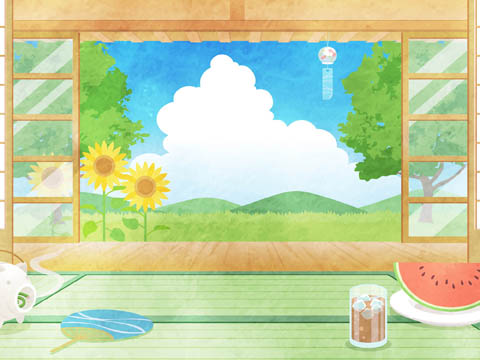
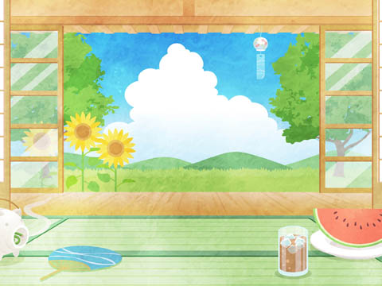

- １ ドキドキ・下駄箱事件
- ２ ドキドキ・宇宙戦争
- ３ ドキドキ・タイムマシーン
- ４ ドキドキ・シリアス展開
- ５ ドキドキ・終末生活
- ６ ドキドキ・修学旅行
- ７ ドキドキ・学園祭
- ８ ドキドキ・東幡豆革命軍
- ９ ドキドキ・月面基地
- 10 ドキドキ・日本創生記
- エピローグ ドキドキ・続・下駄箱事件
- あとがき
１ ドキドキ・下駄箱事件
「告白するんだったら中二のうちだよ」
と言っていたのは、親友の黒水澤カオル。
自分ではたいして恋愛に興味ないくせに、ひとのことには探りをいれる。
「三年になると、受験でそれどころじゃなくなるから」
って。
「ハァ……受験のことなんか考えたくもない」
「わたしもそう。でも、なんかあったら言って。占ってあげるから」
カオルとは今年の春、二年にあがって知り合ったばかり。友達歴二ヶ月。ちなみに、オカルト部副部長。わたしは帰宅部だけど、でもなんか、ウマが合うというかなんというか、たぶんイヌもネコもカエルもぜんぶ合うんだと思う。
「どうでもいいかな。受験も、恋愛も」
「わかる。ナミだったらそう言うと思った」
わたし、只野ナミは中学二年。３月早生まれ、こないだ13歳になったばかり。今朝は少しだけ、早く起きたつもりだった。
雨の降らない６月６日。
駅のわきの踏切を越えると、あとはストレートの上り坂。
わたしはその手前、開かずの踏切につかまって時計とにらめっこ。
この電車が去れば遮断器は上がる、次こそは上がる、そう信じていつも10分、体感で30分、カンカンカンカン鳴り続ける音を聞いた。
でも今度こそ！ 最後の電車がいく！
一瞬だけ開いた遮断器をくぐると、また警報が鳴り始める。
だけどわたしは風！
踏切を超えて、学校までの坂道を一気に駆け上がる。
もう奥の方しか空いてない自転車置き場にチャリを滑り込ませ、スタンドを蹴ってカバンをつかむ。校舎のわきを駆け足で抜けると、あたまの上をチャイムの音が並走する。廊下越しに見える職員室。数学の矢口先生が職員室を出た。昇降口、校門から走ってきたカオルと鉢合わせて、同時に駆け込む。
「おはよ！」
「おはよう、ナミ、あのさあ、過去形だから過去のことだとは限らないよね？」
ちょっとまって。一刻を争うこの状況で、なに？
「え？ どういうこと？」
適当に相槌を打って下駄箱を開けると、上履きの上に赤い花があった。
花？ 下駄箱に？ どうして？
「たとえば、殺人事件を目撃した翌日――」
カオルの声がすーっと耳を通り抜ける。
ふと廊下のほうを見ると、体を少しこちらに向けた制服姿がある。
華鳴池家の御曹司、テル……。
まさか！
「――『背が高かったです』っていうときの『高かった』は過去形なの？」
鼓動が駆け出す。
カオルの話がもうアタマに入ってこない。
「だと思う」
空返事。
まさか、あのひとが花を……？ わたしに……？ なんで？
カオルに隠すように、カバンに押し込む。
「じゃあ今日は背が高くないの？」
と聞いてカオルはダッシュするけど、わたしはなにを聞かれたの？
「いや……。え？」
わたしも追いかける。
二段ずつ階段を上がり、先生を追い越して――
「犯人を見たのは過去形だけどさ――」
踊り場を曲がると、残す階段はあと12段。
上りきったら、あのひと――華鳴池テルの背中があるかもしれない。
「――犯人の背って、いまも高いよね？」
ていうかカオル、あんた息切れたりしないの？
「そ、それ、真白先生に、聞けば、いいんじゃない？」
真白先生――真白エリ――わたしたちの担任。一回り違いの26歳。先生たちのなかでは、まだわたしたちのことをわかってくれるほう。
「やだ！ ぜったいやだ！ 屁理屈で言いくるめられる！」
屁理屈はカオルのほうでしょう!?
二階、視界オールクリア。
一時間目の授業をまえに、静まり返った廊下。
そこには華鳴池くんの背中もない。
――ちょっと鉢合わせを期待したり、警戒してたりしてたけど、なんもない。
ホッとしたりガッカリしたり。
「急げーっ」
駆け出すカオルを追いかけて、最後のスプリント。
華鳴池くんは窓際のまえから４番目。
授業中、わたしの視界の左側ぎりぎりにその背中が見えた。
花はよく見なかったけど、ガーベラだと思う。
真紅のガーベラは華鳴池家のシンボル。この町では有名な話。
――でも、だれかのイタズラだよね。
と、自分に言い聞かせてみるものの、授業なんかあたまに入らなかった。
花はカバンに無造作に押し込んだまま。
花びらも落ちてくちゃくちゃになっちゃっただろうな。
でもきっとイタズラだよ、だれかの。
捨てよう。
うん。この授業が終わったら、捨てる。
休み時間。カバンのなかを見ると、花はたしかに真紅のガーベラ。
華鳴池くんだ。変な確信が生まれる。確信というか、期待というか、いやそれもちがう。戸惑い？ なんだろう、この気持ち。嬉しいけど、正直ちょっと困惑。
教科書の隙間にあったのに、思ったほどに乱れてもいない。
――やっぱ捨てるのやめようかな。
イタズラだってことはさ、わたしが動揺するのを見て楽しんでるわけでしょう？
だったら、なんてことないふりしてずっと持ってたら、仕掛けてきた奴だってニヤニヤしたりはしない。とか考えてたら――
「あなた……」
頭上から声が降ってきた。
「それをどこで盗んだの？」
「盗んだ!?」
振り仰ぐとレイカがわたしを見下ろしていた。
三千堂レイカ。幼なじみ。幼稚園のころは一緒によく遊んでたけど、いまはクラスランクの上のほうに行っちゃって、疎遠になった。
「あ、これは……なんでもないよ」
ちなみに、テニス部副部長。県大会出場経験あり。
「質問に答えてないわ。どこで盗んだの？ 場所は」
盗んだって。なんでそう決めつけるのかな。
「盗んだんじゃないよ――」
と、愛想笑いしながらこたえるわたし。なんていうか。もう本当に、なんていうか。
「あったから持ってきたーみたいな」
「場・所・は？」
あー。はははは。下駄箱のなか……なんて言える雰囲気じゃないな、これ。
「昇降口……」
「昇降口の？」
割れたガラスみたいな目。
一年のころ、華鳴池くんとふたり、クラスマッチの実行委員をやったとき、いつもこの目で刺されていた。
――テルと何を話したの？
――テルに用事があるときはわたしを通して。
って。
「昇降口のどこにあったの？」
やっぱそこを突いてくるよね……。
「うーん。だれかのイタズラじゃないかな」
「場・所・は？」
うわー。逃げきれない。
わたし、なにも悪いことしてないのに、なんで詰められなきゃいけないのかな。
「下駄箱に……入ってた……」
視線は合わせてなかったけど、レイカの拳に力が入ったのがわかった。
昼休み。
「レイカと何があったの？」
カオルが聞いてきた。
何があったのったって、知らないよそんなこと。
「わたしにもわかんない。カバンのなかにガーベラはいってるの見られただけってゆーか」
「ガーベラって、華鳴池家の？」
ガーベラ＝華鳴池家。
この町でそれを連想しないものはいない。
財閥、華鳴池家はこの町の資産の半分を持つとも言われている。その血筋を象徴するのがガーベラ。毎年春と秋には広大な庭に咲き誇る。
「わかんないけど……」
「そんなもの持ってるから絡まれるんだよ。どうしたの、それ」
どうしたのって……
「下駄箱に入ってた……」
そう告げると、カオルの表情が段違い眉で固まった。
「まって……、ローディング中……」
おでこに当てた指をくるくる回してる。
下駄箱に花を入れる、というのは告白とは違う。わたしだって、告白されたとは思ってない。でも――じゃあ、なに？ どうしてわたしに花を？ カオルもわたしと同様、思考の整理中。目線が小さく泳いでいる。
「ナミ……、あんた……、え……？」
カオルの脳内をいろんな情報が駆け回る。
……そして……つながった。
「ナミ、華鳴池くんから告白されたの!?」
「きゃーーーーーーーーっ！ 大声出さないで！」
しかも立ち上がらないで！
「ごめん！」
カオルは小さく謝ったけどもう遅い。みんなに聞こえちゃった。
次の瞬間、レイカが席を立って廊下に出る姿が見えた。やばっ。続いてテニス部員が三人、わたしを睨みつけたあとでレイカの背中を追いかける。わたし、このあとどうなるの？
「めちゃヤバくない、それ？」
――って、カオルが聞くけどさ、
「カオルが大声出したのがいちばんマズいよ」
それに告白されたわけじゃない。
「ごめんごめん。だって、大事件じゃない？」
「事件じゃないよ。だれかのイタズラだよ。こうやって大騒ぎになるのをニヤニヤして眺めてるんだよ！」
みんなにも聞こえるように、少し声を大きくして言ってみた。
華鳴池くんの背中が視界の端に見える。
まわりにいる男子は、その華鳴池くんとわたしの顔を交互に見つめてる。
「わたしが直接、華鳴池くんに聞いてこようか？」って、カオル。
「やめて。イタズラかもしんないし、華鳴池くんに迷惑かけたくない」
華鳴池くんは動じない。
まわりの男子はどう思ってるんだろう。
――あの女、なんか勘違いして騒いでるぜ……
――あいつをからかって、みんなで楽しもうか……
って、ぜったいそうだ。
わたしの地味だけどひっそりと楽しい学校生活は昨日で終わったんだ。
「相談に乗るよ、ナミ」
って、カオルは言ってくれるけど、でも本当になんていうか、降って湧いた災難っていうか、わたしが恋に悩んでるわけじゃないし、相談に乗るったって……。
放課後。
オカルト部の部室。
「部長！ 本日はコックリさんの儀を行います！」
カオルはオカルト部部長のカッパの像に一礼した。
「まって！ 聞いてない！」
「イタズラかどうかはっきりさせなきゃ！ いいから座って！」
「わたしとカオルとでやるの？」
「そう！」
オカルト部の部長は校庭で掘り出されたと言われているカッパの像だった。
「にゃ～！」
それと、黒猫のサバト。
「サバトもこっくりさんやりたい？」
なんで校内に猫がいるんだか。
「カオルとサバトでやってよ」
「無理だよ、サバトは霊力が強すぎるから、コックリさん逃げちゃう」
なんなのその脳内設定は。
カオルはすぐに部長の目の前のテーブルに五十音が書かれた紙を広げた。
五十音の上には鳥居の印があり、その左右に『はい』『いいえ』の文字がある。
鳥居の上に十円玉を置いて、促されるままに人差し指を乗せると、カオルの口から呪文が流れ出す。
「こっくりさん、こっくりさん、どうぞおいでください。おいでくださいましたら、『はい』へとお進みください」
カオルのコックリさんを見たのは初めてじゃないけど、参加するのは初めて。
緊張。
手の力を抜いてコインを見つめていると、『はい』へと移動する。
うそ！
ぜったいこういうの、だれかが動かしてるよね――半笑いの笑顔を引きつらせてカオルの顔を見ると、カオルは目を閉じていた。そしてゆっくりと目を開けて、コインを確かめて、わたしに目を向けた。
「鳥居へとお戻りください」
カオルが言うと、コインはもとの位置へ。
わたしは動かしてない……だったらだれが……？
「こっくりさん、こっくりさん、教えてください。今朝、只野ナミの下駄箱にガーベラが一輪入っていました――これはだれかのイタズラですか？」
うん！ イタズラだ！ 『はい』に動くはずだ！ しかし！
――いいえ。
「イタズラじゃないって――」
「イタズラじゃなかったら、どういうことなの？」
「今度はナミが聞いて」って、カオル。
「わたしがぁ？」
カオルは何も言わず、ゆっくりとうなずく。
「それじゃあ、ええっと……お父さんが浮気してるみたいだけど、お母さんに言ったほうがいいかな……」
カオルが露骨に変な顔をする。――なに聞いてんのナミ、バカなんじゃないの？ ――とでも言い出しそうな呆れ顔。
――いいえ。
そうか……言わないほうがいいんだ……。
鳥居へとお戻りください、のあとカオルは決意の表情。
「ナミの下駄箱にガーベラをいれたひとの名前をお教えください」
眉を吊り上げて告げると、やや遅れてコインが動き出した。
最初は、『か』。
カオルの目が輝くけど、わたしは心臓が爆発しそう。
次に『な』。
こ、これは……来てしまったのか……？
『り』。カオルは頷いて見せるけど、違うよ、そんなことないよ。わたしは首を降る。
『い』。カオルがコーフンしてる。鼻息がフーフー言ってる。
『け』。うそだ。ぜったいうそだ。仮にそうだったとしても、告白じゃないよ。
『て』。別の意味があるんだよ、きっと。
『る』。カオル、涙ぐんでるし。なんであんたが嬉しがるんだよう、まったく――
こっくりさんにお礼を言って、お戻りいただくと、カオルはわたしの肩を抱いて、
「よかったね、ナミ。わたしのぶんまで幸せになりなよ」
と言ってくれるけど、わたしと華鳴池くんじゃ釣り合わないよ。
「向こうから告白してきてんだよ!? もっと自信持ちなよ！」
「ていうか、花をもらっただけだよ？ 告白じゃなくない？」
「告白じゃなくても！ 最大のチャンスが巡ってきたのよ!? ここからはあなたがどう動くかでしょう？ あなたの気持ち次第じゃない？」
「じゃあ、わたし、降りる」
「なんでそうなるのよ！」
夕方になってカオルとふたり、自転車を押して校門へと向かうと、レイカの姿があった。テニス部員の三人と一緒。四人ともテニスウェア。部活の途中で抜けて来たんだ。
無視するとやっかいなことになりそうだなぁ。
でも、なにを話せばいいんだろう。
「そうだ。今日はあれ。ドラマの最終回。ほら。なんていったっけ」
カオルがレイカをシカトすべく、唐突に話題を振ってくる。
「ごめん。見てないんだ、それ」
レイカはじっとこっちを睨んでる。部員三人も同じく。
「ええーっ！ ぜったい面白いから見てって言ったのに！」
カオルは上ずった声で、この空気をごまかそうと必死。
ワンチャンこのまま駄弁りながら通り過ぎられるかな？ と思っていたら――
「テルと話をするときは、わたしを通してって言ったよね？」
って、言葉の拳が飛んできた。
あわてて振り向いて、あ、いたの？ みたいなフリして、ええっと。
「あ、うん。それは覚えてるけど……」
言葉って、痛い。
「でもナミ、華鳴池くんと話したわけじゃないでしょ？」
カオルの後方支援――
「ただ一方的に告白されただけで、まだ返事してないんだよね？」
――って、カオル！ 告白は禁句！
レイカが一歩わたしににじり寄る。
「あなた、わたしにテニスを教えてほしいって言ってたわよね？」
はあ？
「ええっと、それって小学校の頃だっけ？」
「覚えてるじゃない。いまから教えてあげるわ。コートに来なさい」
なんでそうなるの……？
「でもほら……」
わたしは制服の肩のとこをつまんで、ウェアがないアピール。
ウェアというか、そもそもそんなのに付き合う気がないっていうか。
「ウェアだったら、この三人から好きなのを剥ぎ取って」
って、三人をアゴで指し示す。
無茶言うなぁ。
「わたしのサーブを一球でも取れたら、テルとの交際を許してあげる」
別に交際するってわけじゃ……。
「でも、取れなかったら転校してもらうわ」
「転校って……わたしが……？」
レイカは、当然でしょうと言わんばかりの笑みを作ってみせた。
「そ、それはあまりにも一方的なんじゃないでしょうか、レイカさん」
カオルのへろへろ援護射撃。
「あなたは黙って」
完封。
「早く着替えて。三人のなかで真っ先にウェアを脱ぐのはだれ？ わたしに指名されるのを待つつもり？」
レイカは取り巻きに命令。さすがに三人も戸惑ってる。
「レイカがわたしをボコボコにするのはいいけど、転校はわたしが決めることじゃないし」
「へぇ。わたしはあなたが消えてくれれば、手段は問わないんだけど」
うわー。なにそれ。このひと、わたしに死ねって言ってる。
下校の生徒たちがわたしたちを避けてふたてに分かれて校門を出ると、三人がおずおずとウェアの裾をまくりはじめる。
と、そのとき――
「そこまで！」
甲高い声が響いた。
レイカとの間に駆け込んでくる影。
「その勝負、わたしが預かった！」
小さい影は土煙をあげて滑り込み、スカートの裾が揺れる。
リコ……？
「飼育部副部長、伊部リコ、４対１の卑怯な勝負、見過ごすわけにいかない！」
ええっと、勝負はたぶん１対１だと思うんだけど……。
「あなたには関係ないでしょう？ 邪魔しないで！」
レイカは怒声をあげるけど、リコは、
「肥やし玉！」
発するやいなや、激臭のする謎の玉をその場に炸裂させた。
「伊部リコ！」叫ぶザコＡ。
「ブタ部！」と、ザコＢ。
「さあ！ いまのうちに！」
リコは有無をいわせず、わたしとカオルを押して校舎裏のほうへ。
レイカは激臭に咽ながら、
「逃さないで！」
って、三人に指示するけど、ウェアを脱ぎかけたテニス部員たちにはスキがあった。というか、スキだらけというか、問題行為というか。
わたしたちは猛ダッシュで校舎裏、飼育部部室まで走った。
飼育部部室――というか、飼育小屋。ブタにまぎれてやり過ごして、
「レイカにかかわっちゃダメよ」
と、リコは言うけども。
「飼育部の部室って、飼育小屋なの？」
と、カオルはいきなり話の腰を折る。うん、まぁ、わたしもそう思ったけど。
「そうよ。飼育部は部としても認められてないから、部室はないの」
認められてないんだ。
「これもすべて生徒会のインボーのせい」
陰謀って。
リコはわたしたちにアタマを寄せて、
「レイカは７月にもテニス部部長昇格、生徒会長戦にも立候補すると目されているわ」
と、低い声で語る。
「それって陰謀っていうか、リコの思い込みじゃない？」
「いいの、ナミ。陰謀あったほうが面白いじゃない？」
「さすがカオル。わかってる。でもね、陰謀はほんとうなの。三千堂家は華鳴池家に取り入って、この町の支配を企んでいるの」
「その尖兵が三千堂レイカってこと？ 高飛車な子だけど、レイカだって中学二年、まだ13歳だよ？」
「そうよ。でもね、よく聞いて。13歳は特別なのよ？」
「特別って？」
「13歳までは刑事責任を問われない」
あ？ え？
「つまり、三千堂家に敵対するものがいたら……」
「親が出ないでレイカが殺しちゃえば、罪には問えない！」
「さすがカオル！ だてにオカルトはやってないわね！」
いまの、オカルト関係あった？
「つまり……？」
どういうこと？
「これ以上あなたが華鳴池くんにつきまとうと――」
「つきまとってはいないんだけど」
「――命を奪われる！」
「ばばーん！」
だって。そんなこと言ったって。
「わたしだってレイカには関わりたくないよ」
テニスの試合しろとか言われるし、明日もきっと言われるんだよ？ どうすればいいのよ、まったくもう。
「もういちどコックリさんにお伺いを！」
「どうせ勝っても負けてもボコボコにされるだけだし」
「わかった。試合しなさい！ そして負けてボコボコにされたら、転校しろなんて言葉は忘れるわ」
「ダメよ、オカッパ部」
オカッパ部呼び。
「オカッパじゃないの、これは！ ボブなの！」
切れるカオル。
「中学時代の失恋は一生の傷になる。ここで失恋したらあなた、二十歳すぎても自分に自信が持てずに一生を寂しく過ごすことになるのよ？」
そんなこと言ったって。
「わたし、ほんとに華鳴池くんのことなんとも思ってないんだってばぁ」
「うわぁ、これだ」
うわぁってなによ。
「告白された子は言うことが違いますなぁ」
「わたしたちとは住む世界が違ーう」
「あなたたちもしかして、楽しんでない？」
ほんとに、なんとも思ってなかったんだよ。華鳴池くんのこと。
――少なくとも、昨日までは。
「ナミ、お風呂は？」
「あとで入る！」
七時半からカオルとゲームする約束だから、お風呂はあと。
階段を駆け上がってコントローラーを握る。
昨日クリアできなかったミッションを今日こそ、って、昨日言って終わったけど、そういえば今日はゲームの話なんてしなかった。
ログインするといきなり、
「ゲームなんかやってていいの？」
って、カオル。
「それ、どういう意味？」
「彼氏ができるといろいろと生活変わるのかなと思って」
「彼氏じゃないし！」
ていうか、お父さんの部屋で遊んでるんだよ。不意に部屋に戻られたらヴォイスチャット聞かれちゃう！
「いいよね、ナミは。可愛いし」
「えっ？ ちょっとまって。カオルってそういうの興味ないと思ってた」
「興味ないよー。興味持っても無駄だもーん」
うわー、もう。
レイカとばかりかこっちまでヒビ入りそう。
ゲームがはじまったら、昨日までと同じテンションで遊べたんだけど、でも昨日と同じ連携ミス。それでもまあ、ミッションはちゃんとクリアできて、10分もプレイしてるとやっと昨日と同じ感覚が戻ってきた。
「ボス戦、めちゃ焦った」
「昨日はへっぽこ君混じってたから」
フォート・レジェンドっていうアクションゲーム。三人目、四人目のプレイヤーにたまにすごく下手な人がマッチングされることがあって、わたしたちの貴重なゲーム時間が奪われる。
「ふたりモードがあったら、よっぽどうまくプレイできると思う」
「だよねー」
このゲームがわたしたちのリズムを作り出してるんだ、なんて思った８時半。解散の間際。
「応援してる。がんばって」って、カオル。
結局はその話か。
でもわたし、自分の気持ちがわからない。
「それにしてもナミが告白されるなんて――」
だから、告白じゃないんだけどなぁ。
「――明日は嵐か大雪だね！」
「本当に告白だとしたら、天変地異が起きるよー」
「マジでマジで。宇宙人攻めてきて宇宙戦争起きるよー。サバトもそう思うよねー」
「え？ まって。カオル、学校のネコ、家に連れて帰ってるの？」
ゲーム機があるのはお父さんの部屋。
わたしが使えるのは８時半まで。
「そろそろ終わりだぞ」
って、お父さんの声。
「うん。もう終わった」
「ナミが宿題しないって、お母さん怒ってたぞ」
知ってる。
「でもそれって、ずっとまえ、一回だけでしょう？」
「俺は知らんが、ゲームばっかりやってるから、そんな風に見られるんだ」
見られる、って。
「印象じゃなくて、現実で見てほしい。お父さんからも言ってよ」
「はいはい。しかしおまえも……」
「わたしも……？ なに……？」
「３年になったら受験勉強が本格化するだろう？ どこの高校を目指すか決めるのは中２のうちだぞ」
「うん」
「ゲームばっかりやってないで……」
またそんなこと。お父さんも遅くまでゲームやってるくせに。
でもこの機会だ――
「わたし、ゲームの実況者になりたい！ YouTube で配信するの！」
と、言っちゃったのが今年最大の、いや、一生で一番の不覚だった。
「バカなことを言うんじゃない」
お父さんはフッと蔑んだような笑みを漏らした。
「バカじゃない。真面目に言ってる」
「百歩譲って、ゲームを作るならまだしも、実況なんか他人の成果にタダ乗りするクズだ」
はあ？
「動画で稼いでるやつはみんなそう」
正直、わたしの取り柄はゲームだけだ。ドラえもんののび太が射撃だけは上手いみたいに、わたしもゲームだけは上手い。と思う。のび太だって、いまの時代に生まれてたらゲームで最強の名を欲しいままにしただろうし、実況してだれよりも有名になったと思う。
「でも、有名な声優さんもやってる」
って言うと、お父さんは
「だったらそいつもクズだ」
と言い捨てて、わたしの方も見ないでパソコンを立ち上げた。
――だったら、そいつも、クズ。
大好きな声優――推しの声優がクズって言われた。
なんどもわたしを笑わせてくれた、泣かせてくれた、勇気づけてくれた声を。お父さんは、クズって言った。
――クズはどっちだ。
「ゲームだとか実況だとかが良く見えるのは、世の中を知らんからだ」って。
世の中ってなによ。
こっちはそのパソコンにどんなメールが溜まってるか知ってるんだぞ。
お風呂の間もずっとむしゃくしゃしたままだった。
わたしの進路の話だけならこんな気持にはなってない。推しをクズ呼ばわりされるのがどんなことか、お父さんわかってない。
お風呂からあがると、お母さんはスマホで友達とラインしながら、リビングでテレビを見ていた。
「またお父さんに怒られたの？」
横目でちらりと見て聞いてくる。
「あのね、お母さん」
って尋ねても、
「うん？」
って、興味なさげな小さな返事だけ。
わたしはどうしても、むしゃくしゃした気持ちが収まらなかった。
――あのね、お母さん。
胸の中に繰り返して、言葉を選んでたら、やっと振り向いた。
「お父さん、浮気してる」
２ ドキドキ・宇宙戦争
レイカにボコボコに負けて、華鳴池くんに冷たくあしらわれる夢から覚めると、宇宙戦争が始まっていた。
知ったのは朝のニュース。
あまりのできごとに呆然とテレビに釘付けられた。
今日ってエイプリルフールじゃないよね？
パリ、ニューヨーク、ロンドン、上海と、宇宙空間より飛来した未確認飛行物体によって攻撃を受けていますと、テレビのアナウンサーが伝える。
お母さんによれば、昔はここに東京が入ってるのが定番だったらしいけど、いまじゃ宇宙人も見向きもしないって、でもそんな呑気なことを言ってる場合？
「学校、どうしよう」
「どうしようって、行かなきゃダメでしょう？ 休みの連絡来てないんだから」
そういうものなのかなぁ。
テレビでは総理大臣の緊急記者会見が始まる。
「お母さん！ 総理大臣！」
のんびりトイレ入ってる場合じゃないよ！ お母さん！
水を流す音。
「東京は無事なんだし、慌てることはないよ」
って、髪を留めなおしながら、テレビに目をやる。
「学校とか会社とか休みになるよね？」
何本も束ねられたマイクのまえに防災服姿の総理大臣。
カンペを見ながら、各地の被害状況を伝えたあと――
「学校を休校するかどうかの判断は、各自治体の決定に従ってください」
って、ええーーーーーーーっ！
なんなのそれ！
日本が攻撃対象になってないからって、緊迫感なさすぎる！
こんなときに学校に行くなんてありえないけど……でも、昨日の告げ口のこともあるし、お父さんとは顔を合わせたくない。
チャリで学校へ向かうと、いつもの開かずの踏切が開いたままだった。
駅には人があふれて、戦闘機が頭上を通り過ぎる。
本当にこれ、学校休みになんないのかなと思ったけど、いやでも、学校も会社も休みになって三人で家にいるとしたら、やっぱり気まずい。
お母さんもう、浮気のこと問い詰めたりしたのかな。
詳しい話はしなかったけど、お父さんのパソコン使ってるときによくメールのデスクトップ通知が来てた。証拠隠滅される前に詰めたほうがいいよ。――とも思うけど、それで家の空気が悪くなるのは嫌だなぁ。
校門のあたりでカオルの姿を見かけるけど、
「おはよー」
って、テンション低かった。
「踏切が開いてると、なーんか張り合いがない」
「あー、わかる」
チャリを停めるとき、つい時間を気にしてしまうけど、別に焦る時間じゃないんだ。
「でもなんか、嵐のまえの静けさっていうか」
「ニューヨーク壊滅状態だって、ニュースで言ってた」
「日本は無事でいられるのかなぁ」
「うーん。でもなんか、実感ないなぁ」
昇降口にはレイカがいたけど、一瞥すると背中を向けて階段を上っていった。
まあ、あれがいつものレイカだ。
「うーちゅーうーじーん！」
背後から甲高い声が響いて、近づいてくる。
「がぁーーーーーーーっ！ 攻めてきたぁーーーーーーーっ！」
スカートの裾を翻して伊部リコ登場。ポーズを決める。
「なんなの、あんた」って、カオル。
「２０２３年、６月７日未明、世界各国に宇宙より飛行物体が飛来！ その数４千！ これは地球の全戦闘機の数に相当する！ どういうことかわかる？」
わたしたちは気圧されて首を振るだけ。
「一人一殺！ キルレシオ１対１に持ち込めば防衛できる！ ――ということだけど、ネット見た？」
テンション高っ……。
「敵の飛行物体１機に最新鋭のＦ22戦闘機15機が一瞬で撃破されたの！ キルレシオ０対15！ 最新鋭機でよ!? 日本には旧式のＦ15、あるいはもっと旧式のＦ４、国内開発のへっぽこＦ２か、欠陥品のＦ35しかないわ！」
「あと、ストプリ」ってカオルが付け足す。
「ストプリ？」
「ストプリ戦わせる」
「戦わせる」
「それ、強いの？」
「強い」
「ストプリ最強」
リコの声を聞いて、まわりの生徒が不安がるけど、わたしにはどうにも実感がない。
「宇宙人はなにが目的なの？」
「そう！ そこよ！ それをいま調べてるところ！」
「調べるって、どうやって……」
「ネットにはどんな情報でも転がっているのよ！ すべてわたしにまかせて！」
と、胸を叩いてリコは廊下を駆けて行ったけど……
「まかせて何がどうなるんだろう」
「さあ……」
一時間目。国語。自習。
生徒は半分くらいは自主休校。
みんな宇宙戦争の話ばっかりで、自習なんかする雰囲気じゃない。そんななかカオルは、
「やっぱり本人に聞くべきだよ」
って、華鳴池くんの件。
「でも、そんな空気じゃないよ……」
「宇宙人、日本にまで来たら死ぬかもしれないのよ!? モヤモヤしたまま死んだら、死んでから一生モヤモヤして過ごすのよ!?」
「死んでからの一生ってなに？」
「わたしはヤダ。こんな中途半端で死にたくない」
「中途半端って？」
「取ってないアイテムとか、行ってないエリアとかいっぱいある」
「ゲームの話？」
「そりゃそうでしょ。宇宙人攻めてきたからって、急にリアルに目覚めたりはしないもん」
ゲームかぁ……。
「わたし、今日はゲームできないかもしれない」
そもそもしてる場合か、っちゅう話でもあるけど。
「えっ？ あっ、もしかして、華鳴池くんと？」
「は？ なんでそうなるの？」
「電話とかチャットとかで、うふふ、あはは、とか」
「しないよ」
そもそも、花をもらっただけ――それすらも手渡しじゃなくて、下駄箱に放り込まれただけで、話もしてないし、ろくに目を合わせてもいないんだから。
「ゲーム機、お父さんの部屋にあるの」
「ああ、そう言ってたね。お父さんとなんかあったの？ ケンカでもした？」
「まあ、それに近い感じ……」
昨日の今日だし。顔を合わせたくないっていうか。ていうかカオル、今日もゲームする気だったの？
「それにしても、生徒には登校させておいて、先生は休みってどういうこと!?」
「先生は電車だから、来れないんだよ」
「でも先生、踏切が上がらないことくらい予測して行動しろって言ってたよ？」
「言ってたね」
「生徒に踏切の予測しろって言うんだったら、先生は宇宙戦争くらい想定しなきゃダメでしょ!? ねぇ、サバト」
「にゃー」
にゃーって。そもそもなんで学校にネコがいるわけ？
「宇宙戦争が起きるなんて、考えたこともなかった」
「わたしだってそう。でも、きっとこれはまだ予兆よ！」
「予兆……」
「これからもっとすごいことが起きるの！」
「すごいことって？」
「タイムマシンが現れて、時間の流れがめちゃくちゃになるとか！」
「そこまで!?」
「そうでしょ？ サバト！ タイムマシン来るよね？」
「にゃー」
二時間目も自習。スマホ見てる子が、札幌上空でＵＦＯと戦闘機が戦ってるって教えてくれた。ニューヨークに続いてロンドン、パリも壊滅。ロシアは闇雲に大陸間弾道弾を撃ち始めたけど、ソフトウェアの改修が間に合わず、半分はアメリカを攻撃しているらしい。
「なんかめちゃくちゃだなぁ」
「ナミ！ 最新情報！」
いつの間にかカオルもスマホ見てる。自習とはいえ、授業中だよ？
「アメリカがロシアに向けて反撃の核ミサイルぶっぱなした！」
「どうなるの、それ？」
「第三次世界大戦！ 勃！ 発！」
宇宙戦争が起きている最中に、第三次世界大戦って……。
「こんなときこそコックリさんよ！」
と、中休み、カオルに手を引かれてオカルト部室に駆け込んだけど、部長のカッパの像が割れていた。
「キャーーーーーーーーーッ！」
宇宙戦争勃発にもたいして動じてなかったカオルが叫んだ。
「カッパ様が……カッパ様が……」
動揺してオロオロと破片を集めるカオル。
「カッパ部長いないとコックリさんってできないの？」
「できなくはない……できなくはないけど……」
『くろ……みさ……黒水澤……カオルよ……』
「カッパ部長！」
カオルのアテレコによる一人芝居が始まった。
『わしにかまわず……コックリさんに真を問うのじゃ……』
「そんな、部長！ わたしにはできません！」
カオルが小芝居やってる間にも宇宙戦争は拡大してると思うんだけど、どうなの。
「こんなとき、ボンドがあれば……」
『わしに……かま……う……うっ！』
「カッパ様！ お気を確かに！ カッパ様ーっ！」
「あの……ボンドを使いたいんだけど……」
三時間目のあと。
学級委員の華鳴池くんに、クラスの備品を借りにいった。
「いいけど、何に使うの？」
低くて落ち着きのある声。心臓がズンドコ節を踊りだす。キ・ヨ・シーッ！
「あの……オカルト部室にあったカッパ像の修理……」
レイカが離れたところでわたしを睨んでる。
でもこれ、大事な用だから。ガーベラのこととも関係ないし、事務的な話だから。
さっきカオルと、
――わたし、本当に華鳴池くんのことなんとも思ってないよ？
――だったらナミが華鳴池くんにボンド貸してもらって！
って話してて、売り言葉に買い言葉でこんなことになっちゃったけど、足震えてるし。これじゃわたしの方から告白してるみたいじゃない。
「それは難しいな」
「えっ？」
「オカルト部の備品だったら、オカルト部の予算でなんとかしないとダメなんじゃないかな？」
かーっと顔が熱くなった。
「じゃ、じゃあいいです！」
一礼して走り去ったけど、心臓がバクバクしてる。
勇気出して話しかけたのに。まるでわたしがふられたみたい。涙が出てきた。なんで？ ボンド借りれなかっただけなのに、なんで？
「がんばったね、ナミ」
カオルはわたしの頭を抱きとめてくれたけど、涙が止まらない。
たかがボンドなのに。こんな姿、華鳴池くんに見られたら変に思われる。
でもどうして。
こないだまでなんとも思ってなかったのに。なんでこうなっちゃったの。
わたしの勘違いかもしれないのに。ううん、きっとそう。ガーベラのことだって、わたしの思い過ごしなんだ。
それに、華鳴池くんのことなんとも思ってないなんてのもウソだ。
ボンドのことだって、ココロの底では話しかけるチャンスができたって思ったし、きっかけになると思ったんだ、わたし。
汚いよ。そんなの。ちゃんと聞けないからって、ボンドをだしに使うなんて。そんなんだからダメだったんだ。華鳴池くんだって、見透かして笑ってるよ、きっと。
お昼休み。
お弁当を食べてると、赤いチューブに入ったボンドを机に置かれた。
見上げると、レイカ。
「わたしが借りてきてあげたわ」
「あ、ありがとう……」
「返すときも、わたしに返してね」
って、レイカは笑顔のまま背を向けて、席に戻ってった。
悔しい。
なんかわかんないけど、妙に悔しい。
それに恥ずかしかった。
勇気振り絞って、話しかけて、断られて、泣いた自分が。
放課後。
結局今日一日ずっと自習。
どうやら通信網が落ちてるっぽくて、市の教育委員会と連絡が取れてないらしい。
「そんな理由で学校に足止めされる生徒の身にもなってよ」
カオルはカッパ像を包んだ風呂敷を抱えて愚痴った。
校門のまえには、テニスウェアを着たレイカと、同、部員二名の姿があった。
「あなたとは今日のうちに決着をつける」
部員、ひとり減ってる。まあ、こんなときに学校に来る方がおかしいよ。
カオルは「またぁ？」と、露骨にうんざり感を出してみせた。
「あんたさぁ、恋のライバルがナミだからいいけどさぁ、もし相手が大坂なおみだったらどうするの？ 勝負挑むの？」って、いつになく強気。
そう、そうだよねぇ、とか思っちゃったけど、レイカは動じない。
「もちろん！ 勝てるまで技を磨くのみ！」
すげー。
「男子だったら？」
「男子!?」
「ノバク・ジョコビッチやラファエル・ナダルや西岡良仁だったら？」
「そ、それは……」
「ぶっちゃけ、この学校の男子テニス部部長、暮井コウトだったらどうすんのよ」
「だ、男子を引き合いに出すなど、卑怯だぞ！」
あ、動揺するんだ。
「卑怯もなにも、ありうる話でしょう？ ねえ、サバト！」
「にゃあ！」
「な、な、な……夏までには告白するはずだった……」
レイカは苛立ちを隠せなくなった。ロウバイって言うのかな、こういうの。
「お父様の事業も、華鳴池家との共同プロジェクトが決まって……そのお披露目のパーティの夜……ふたりでモーリシャスのビーチで……」
知らんがな。
そしてまたカオルが何か口を開こうとしたところ、上空に怪光線が閃いた。
雷？ なのかもしれない。でも、雲ひとつない空。
遅れて轟音が駆け抜け、長い長い木霊が尾を引いた。
カオルのスマホが警戒警報を鳴らす。遅れて、レイカのカバンからも。
頭上を戦闘機が駆け抜ける。そして、遠雷。
レイカは足をすくませて、その場にしゃがみ込んだ。
そうだった。レイカ、雷が大の苦手だったんだ。
「そういえば、雷、怖かったよね」
「うるさい」
「いまも怖いんだ」
「だからなんだって言うんだ！」
「わたしだって怖いよ！ だから勝負は明日にしよう！」
空元気をふりしぼって言ってみたけど、レイカはしばらく黙ってしゃがみ込んでた。
「レイカ、明日ぜったいに勝負する。約束する。だからあなたも約束して」
「約束？ わたしが？」
「そう。わたしは逃げない。だからあなたもこれから先、勝負から逃げない、って」
この先。この先なんてあるのかな、わたしたちに。
「わかった。明日だな」
うん。明日、もしわたしたちが、生きていたら。
玄関のドアを開けると、お父さんとお母さんの言い争う声が聞こえた。
「だったらメール見せて」
「プライベートにまで口を出すのか？」
「やましいことがあるから隠すのよ」
というやりとりから、すぐに浮気の件だとわかった。
「ただいま」
リビングのドアを開けると、お父さんはわたしの顔を睨んで、階段を上ってった。
「おかえり」って、お母さん。
倒れた椅子を起こしながら、
「冷蔵庫に食べるものあるから、勝手に食べて」
って、わたしから顔をそむけたまま、頬を拭った。
お母さんの髪は乱れて、いつもつけっぱなしのテレビが、今日はついてなかった。
地球はどうなってしまうんだろう。
帰ってきたらそんな話をする気でいたのに、とても話せる雰囲気じゃない。
結局ゲームにもログインできず。
ちなみにあとから聞いた話だけど、サーバが停止してだれもアクセスできなかったらしい。しかもアメリカにあるサーバが破壊されたので、データも消えたし、再開もされないって。
あーあ、って思った。
一日一時間しか遊べないなかで、二ヶ月かけて集めたアイテムもぜんぶ消えちゃうんだ。ゲームでしか知らないフレンドとも、もう会う機会がないんだって。
でもそれってさ。よくよく考えると、アメリカのサーバのある町が壊滅してるってことなんだよね。嘆くポイントが違うってのは、わかってる。
「テレビつけていい？」って聞くと、
「いいけど、気が滅入るだけだよ」って、お母さん。
リモコンのボタンを押すと、テレビは宇宙人来襲のニュースを伝える。
世界地図が表示されて、連絡が取れない地域――つまり、宇宙人のせいで壊滅してしまった地域が赤く塗られていた。
右肩に表示された数字が48％から49％に変わる。
これが、宇宙人に奪われた面積。
一日で半分ってことは、明日にもこの地図は真っ赤になる。
チャンネルを回すと、モノクロの映画を流している局があった。
『緊急・名作映画一気上映』と題された、名作映画特番。
これで最後だから、人生に悔いを残さないように、ってか。
「深夜からＮＨＫでも『最後の紅白歌合戦』が始まるんだって」
そうか。世界の終りって、こうやってやってくるのか。
Ｌ字型のニュース枠には、速報がひっきりなしに流れていた。
防衛大臣、北海道にて消息不明――
華鳴池副大臣が臨時で執務を代行――
あ……
それって華鳴池くんのお祖父さんだっけ……？
わたしはどうすればいいんだろう。
つい三日まえまで、華鳴池くんのことなんか、好きでもなんでもなかった。
そりゃあカッコいいのはわかってたし、一年のとき初めて話しかけたときはドキドキしたけど、いまの気持ちとは違う。
でも、いまの気持ちってなんだ？
世界が崩壊する。わたしもお母さんも明日死ぬ。そんななか、華鳴池くんのことが――なんだろう。華鳴池くんのことが――。
ボンド借りれなかっただけで泣いたんだよ、わたし。
告白なんかして断られたら、耐えられない。
チャンネルを回すと、『最後の紅白歌合戦』で再結成したスマップが泣きながら『世界で一つだけの花』を熱唱してた。
メンバー勢揃い。紅組も白組もみんな泣いてる。
「すごい。森くんもいる」
「だれそれ？」
続いて、和田アキ子。カメラが捉えた瞬間から泣いてる。
眠れるわけがない。
と、思いながらもいつの間にか熟睡していて、朝はお母さんに起こされた。
「宇宙人は!?」
「もう気にしないことにした」
「気にしなきゃダメでしょう！」
テレビをつけると、世界地図はもう７～８割がた真っ赤。
日本も北海道は真っ赤。石川県から静岡県にわたって真っ赤な帯がある。
解説者の説明によると、宇宙船の母艦から発射された光線が、幅80キロに渡って国土を焼いたらしく、その帯は中国からロシアまで貫いてるって。
わたしももう、気にしても無駄だなと思ってチャンネルを回すと、テレビ朝日では『最後の朝まで生テレビ』をやってた。
人類って、アホなのかもしれない、と思って見てたら、
「わたし、この家はもう出ていくけど、あなたはどうする？」
ってお母さん。
「出て行くって？」
「離婚するの」
離婚……。わたしのせい？
「あなたはお父さんとこの家に残る？」
「嫌だ！ お父さんと暮らすのは！」
と、言い返してみたけど、その話っていましなきゃダメなの？
「出ていくのっていつ？」
「今日中に荷物をまとめるから、あなたも今日学校終わるまでに考えておいて」
「……わかった」
お母さんも、お父さんの浮気には勘づいてたんだと思う。
「って、学校？」
「もうこんな時間！ 遅刻するよ？」
都心に買った『投機用のマンション』のこと聞くと、いつも誤魔化してたし、そこに愛人が住んでること、わたしが推理したくらいだから、お母さんだってきっと……
家を出ると、空が真っ赤だった。
巨大な朝焼けなのか、どこかが燃えているのかはわかんない。
遠くにヘリが飛んで、雷鳴みたいなものが響いてくる。
直後、家のガラス窓がびりびりと震えて、アロエの鉢が小さく振動して棚を横滑りしてった。地震だ。立ってるとよくわかんなかったけど、震度いくつくらいだろう。
学校に行くと校門にはレイカの姿があった。
取り巻きのテニス部員はひとり。
「レイカも来たんだ……」
「当然でしょう。あなたとの決着をつけない限り、死ぬわけにはいかないわ」
ま、しょうがないか、と思ってると、すぐにカッパの像を風呂敷に包んだカオルも登場。
「カッパ部長、治療完了～～～～～っ！」
カッパ、そんなに大事か。
「早く部室に！ コックリさんに聞くのよ！ これから地球がどうなるか！」
徹夜でもしたのか、カオルは目の下にクマを作って、それでも声を高くあげて、部室を指差した。
「バカじゃないの？ あなたたち」って、レイカ。
そう。大正解。バカなんです。
「人類が滅亡しかけてるときにクラスメイトと決闘しようってほうがバカでしょ！」
徹夜したテンションのカオルが言い返した。
「決闘じゃないわ！ 正々堂々、試合を申し込んでいるのよ！」
レイカが言うと、隣のテニス部員がウェア一式をスッと差し出す。
「あ、ありがとう」
ちょっと憧れてたんだ、これ。
と、手を差し出すと、
「ナミ！ 勝負はあとまわしにして！ まずはコックリさんよ！」
って、いつになくカオルも強気だ。
「ふざけないで！」
レイカが苛立ってラケットをカオルの鼻先に向けたとき、雷光が閃いた。
身構える間もなく、雷鳴が駆け抜けると、レイカは頭を抱えてうずくまった。
空にはまた雷光が閃く。
カオルは私に目配せして、
「レイカも来て！ いますぐ！」
レイカにも声を掛けた。
こんなときにコックリさんってのもどうなの、とは思ったけど、レイカにボコられるよりはましか。
「こっくりさん、こっくりさん、どうぞおいでください。おいでくださいましたら、『はい』へとお進みください」
ボンドでツギハギになったカッパ部長のまえ、わたしとカオルとレイカ、三人でコインに指を乗せた。
――はい。
緊張が走る。
「まずは人類が滅亡するかどうか聞きたい」
レイカが小声でカオルに伝える。
コックリさんなんか信じてないと思ってたけど、ちゃんと質問するんじゃん。
「こっくりさん、こっくりさん、お教えください。人類は滅亡しますか？」
……三人、息を飲んだ。
だけどコインは動かない。
「どういうこと？」
「未来のことだから、確定してないってことなのかも」
「じゃあ、もう確定してること聞いてみて」
レイカがカオルに振る。
カオルは「うーん」と考えて、
「こっくりさん、こっくりさん、お教えください。地球に来た宇宙人の目的はなんですか？」
今度はコインが動き出した。
まず一文字目は『ふ』。
わたしとカオル、わたしとレイカ、顔を見合わせる。次に示したのは『く』。
「ふく――」
レイカが小さな声で読み上げる。
次は『し』。
「ふくし――」
コインは右へ。『ゆ』。
「ふくしゆ――？」
そして、『う』。そこで止まった。
「ふくしゅう？」
「復讐って、いったい何に!?」
カオルが改めて問いかける。
コインは躊躇うことなく『た』へと動き始める。
「た――」
右へ、左へ、また右へと、文章を綴る。
「たこやきにして――」
「くわれた――」
「タコ焼きにして食われた!?」
「いったいだれに!?」
――コックリさんに聞いた話を総合すると、こういう話だった。
愛知県東幡豆の田中さんが、浜辺で宇宙人を捕獲、それをタコだと信じた田中さんはタコ焼きにして食った。宇宙人側は銀河標準言語で警告を発したが、田中さんは聞き入れなかった。
「――これは、宇宙法的に言えば宣戦布告に当たる、と」
「東幡豆からは、宇宙人土偶って言われる異形の土偶が出土してるって聞いたことがある！」
「もしかして……その土偶もタコ焼きと関係アリ!?」
ちょうどそこに、校内アナウンスが流れた。
――成層圏より宇宙船の母艦と思われるものが降下、接近しています。全校生徒はただちに下校してください。
「宇宙船の……」
「母艦……？」
「それって、下校してなにか意味あるの？」
――繰り返しお知らせいたします。成層圏より宇宙船の母艦と思われるものが降下、接近しています。全校生徒はただちに下校してください。
「そんなこと言ったって、どうすりゃいいのよ……」
レイカが気弱な声を出すと、
「案外意気地がないのね、テニス部！」
カオルが煽った。
「ハッ。オカルト部がほざくな！ オカルトなんて、ぜんぶ迷信よ！」
さっきいっしょにコックリさんやってたくせに……。
「とにかく！ 外に出ましょう！」
校庭へ出ると、上空に宇宙人の母艦らしい巨大な影が浮かんでいた。
レイカはスマホを見てわなわなと震えだす。
「さっきまでの威勢はどこに行ったの？」
カオルが問いかけると、レイカは、
「これを見て」
スマホの画面を示した。
そこにあったのは、ほぼ真っ赤に塗られた世界地図。
わたしたちの町には、宇宙人の母艦らしきアイコンがあった。
そして同じアイコンが世界中に、無数に表示されてる。
レイカは赤い空を仰いで立ち尽くす。
そのとき、
「だーーーーーーーーーーーーーい ニューーーーーーーーーース！」
聞き覚えのある甲高い声が近づいてきた。
「リコ！」
ずざぁっと砂煙をあげて減速、リコがポーズを決める。
「なにかわかったの!?」
「オカルト部部長、カッパの像は東幡豆出土の宇宙人土偶――」
と、そこまで言ったところで、宇宙戦艦から発されたビームでリコの体は撃ち抜かれた。
……。
なにが起きたの？
とっさのことで声が出ない。
そこにはリコのふくらはぎから先だけが残されて、体はきれいに消失。
肉の焼けた匂い。
ビーム砲の爆音に、静かな耳鳴りだけが耳に残った。
「なにが起きたの……？」
カオルが弱々しく口に紡ぐ。
リコ、死んだ――？
と、そのとき。耳鳴りが消え、音が戻り始めると、閃光をともなって小型のバスくらいの未来的な乗り物が出現、目のまえでその扉が開いた。
「乗って！ 早く！」
声をかけたのはリコ……いまビーム砲で撃ち抜かれたはずの飼育部副部長、伊部リコだった。
「別の時間軸に移動する！ 早く！ 地球が崩壊する！」
乗り物は宙に浮いている。翼もないのに。
「なんなのそれ！」
「タイムマシーン。明日あなたたちが宇宙船のなかで発見する、発見したら、わたしがビーム砲で撃たれるまえの世界にもどって、わたしを助けて！」
タイムマシーン？ 宇宙船？ いったいなんのこと？
「とにかく乗って！」
「うん！」
ステップに足を置こうとしたところ、背後で爆発。タイムマシーンはバランスを崩し、上空へ退避。そこに母艦からの連続攻撃。避けるタイムマシーン。
「ナミ！ カオル！ レイカ！ 別の時間軸に助けに行く！ そっちでまってて！」
そういうとリコのタイムマシーンは光の粒になって消えていった。
「別の時間軸って？」
「わかんない」
「この時間軸のわたしたちはどうなるの？」
レイカが真っ赤になったスマホの世界地図を見せる。
「わたしたち、死ぬの？」
タイムマシーンで過去や未来へ行くと、そこから世界線が分岐するという話を聞いたことがある。『君の名は。』でも『アベンジャーズ』でもそんなことを言ってた。
ということは、そっちの分岐した世界では、わたしたちは死なないのかもしれない。
でも、違う世界にいる自分って、ぶっちゃけ他人では？
母艦は無数のビーム砲を放ち、地上を焼き払う。
そして、その艦首をゆっくりとわたしたちに向ける。
わたしたち、これで死ぬんだ……。
レイカが膝をつく。
カオルはただ赤い空を見上げている。
「レイカ。これでもうなにもかもおしまい。だから最後にお願いがあるの」
って、カオル。
レイカは力なく、返事もない。
「最後に、あんたを殴らせて」
レイカが顔を上げる。
「ナミ、あんたも恨みあるでしょ。どーせ死ぬのよ。最後にボコボコにしちゃおうよ」
人類の最後に、いったいなんてことを言うの、カオル……。
「うるさい。愚民ども」
レイカはゆらりと立ち上がった。
「あんたたちに負けるわけないでしょ」
「じゃあ、どうするの？」
「ボコボコになるのはあなたたちよ！ ふたりがかりで来るといいわ！」
「せーので行くよ！ ナミ！」
「それは、ええっと、どういうこと？」
「わたしたちは戦う！ そうでしょう！ サバト！」
カオルが声を轟かせた次の瞬間、
「にゃあ！」
軽快に声を上げると、サバトは宇宙戦艦に向けて目からビームを照射し始めた。
轟音。熱気が上昇気流を作り出し、砂を舞い上げる。
「なにこれ……」
校庭から伸びる光のラインは宇宙人母艦を貫き、内部から破壊、熱を帯びた機体の外殻を細かく砕いて吹き飛ばした。
「サバト……あんたいったい……なにもの……？」
３ ドキドキ・タイムマシーン
翌日、お母さんは不動産屋に行って部屋を借りた。
お母さんの収入だと、借りられるのは四畳半ひとま。これからはお風呂は近くのマンガ喫茶のシャワーを利用するしかないと聞かされた。
湯船に浸かるのが好きだったけど、これからはシャワーだけ。でも、二日にいちどのお風呂の日はマンガ喫茶でマンガ読み放題だって聞いて、それならまあ、いいかと思った。
でも、二日にいちどって。
年頃の中学生としてどうなんだろう。
サバトががんばってるのか、ネットのニュースを見ると、壊滅状態にある地域はもうずいぶんと減っていた。
そんななか――
「あ……」
「どうしたの？」
ブラジル、サンパウロからの映像のなかにサバトの姿があった。
「あの黒猫、中学のオカルト部にいたの」
わたしが言うと、
「似た猫じゃない？ 同じような黒猫が、いろんなところで目撃されてるんだって」
って、お母さん。
「違うよ。あの子が宇宙船を破壊して回ってるの……」
「はあ？ あんたもその話、信じてるの？」
「信じてるの？ って？」
「目からビーム出す動画が出回ってるけど、ＣＧに決まってるでしょう？」
いやいや。わたし、目の前で見たもん。
少し遅れて学校へ行くと、自転車置き場はガラガラだった。
そりゃそうか。昨日世界が滅びてもおかしくなかったわけだし、学校なんて。それとも、みんな死んじゃったのかもしれない。なんかもう、悲しみという感覚が抜けちゃってる。
学校に来れば日常に戻れる気がしたのに、廊下に先生の姿もないし、職員室もガラガラ。寂しさばかりが胸のなかに溜まっていく。
校庭、こんなに広かったかな。
静かな昇降口。体を滑り込ませると、華鳴池くんの姿があった。
すぐに向こうもわたしに気がつく。
「只野……」
「華鳴池くん」
だめだ、目を合わせられない。
下駄箱をあけて、靴を履き替えてると、こっちに来た。
「休みかどうか連絡が来なかったんで来てみたけど、だれもいないみたいだ」
「あ、うん」
だれもいない。
もしかして、学校にいるのふたりだけ？
「今日も自習だと思うけど、教科書どこまでやったか覚えてるか？」
「あ、うん」
「良かった」
良かった。
うん。よくわかんないけど、わたしも良かった。
わたしは少し上履きを履くのに手間取るふりをして、わざと少し遅れて彼の背中を追った。
階段。わたしの５段先に華鳴池くん。
一緒に自習しようって言ったら、隣の席に座れたりするのかな。
いや、でも、それもあざといか。
とは言えさ。「国語はここからだよ」って、隣の席に行かないと教えられないじゃない？ それとも、華鳴池くんのほうから聞いてくるの？
なんか、ため息出る。
とか、センチメンタルに浸ってたら、
「ナミーーーーーーーっ！」
と、どたどたと足音を響かせて、
「リコを助けに行くぞーーーーっ！」
って、カオルが駆けてきた。
華鳴池くんも足を止める。
振り向くわたしと華鳴池くん。その姿をみて、カオルが固まってる。
カオルの視界に映っているのは、華鳴池くんのあとをしずしずとついて歩くわたしの姿だ。
「あ、ごめん、そういうことだったら、わたし、ひとりで行ってくる……」
って、なんで気を使うのっ！
「ひとりでって、どこに？」
華鳴池くんが問いかける。
「あ、あの、わたしたち、伊部さんを助けなきゃいけなくて、宇宙船を調べに……」
カオル、しどろもどろ。
華鳴池くんはわたしに視線を移す。
「そ、そうなの。昨日、タイムマシーンでリコが助けてくれて、それで……」
わたしもしどろもどろ。
「タイムマシーン？」
「あ、ええっと、時間を移動する……的な……？」
「そう、バスくらいの大きさで……宙を浮いてる……？ 的な……？」
「あ、あの、華鳴池くんもいっしょに行かない？」
なんで誘っちゃうの、恐れ多い！
「うん、面白そうだね」
って、乗ってきたぁっ!?
サバトに撃墜された宇宙船は、市営グラウンドとバイパスを挟んでお隣の緑化公園にまでまたがって横たわっていた。
機体は黒く焦げて、艦首から船尾へとかけて巨大な穴がある。
「大丈夫かな、忍び込んで」
「だ、大丈夫よ」
「華鳴池くんのお祖父さん、防衛大臣だよね？」
「ああ。代理だけどね」
まだ警察や軍による規制もなかった。
なかに入ると焼け焦げた宇宙人の死体がある。
小さいながらもちゃんと手足がある人型の宇宙人だ。
焼け跡からは電気コードを焦がした匂いと、コピー機の裏の匂い。
「宇宙人ってタコ型じゃないっけ？」
わたしがカオルに尋ねると、華鳴池くんが不思議そうな顔をする。
「これ……オカルト部部長に似てる……」
「ほんとだ……」
焼け焦げた宇宙人はどれもカッパ。煤けて異臭を放っている。
華鳴池くんは嘔吐いてるけど、わたしとカオルは死線を超えてきちゃったせいか、なにを見てもたいして動じなくなっちゃってる。
いいのかな、こんなんで。
宇宙船のなかは案外シンプルで、タイムマシーンもすぐに見つかった。
「あった！」
瓦礫を超えて駆け寄ると、華鳴池くんも追いかけてきた。
そのあとをカオル。
昨日見たタイムマシーンと同じ。
ハッチの取手に手をのばすと、同時に華鳴池くんの手も伸びてきて、指が触れた。
「あっ。ごめん」
「ううん、大丈夫」
「只野が開ける？」
「あ、でも、華鳴池くんが開けたいんだったら……わたしは……」
ドッキドキだ。手が触れただけなのに。もう足に感覚がない。浮いてるみたい。
遅れて来たカオルが、
「わたし、邪魔だったら帰るよ？」
って呆れてみせるけど、そ、そんなんじゃないけど嬉しい。
だめだもう、わたし。
真っ赤になってるわたしを見て、華鳴池くんは「えっ？ なに？」って首をひねるけど、華鳴池くんのせいなんだからね、もう。
でもなんか。なんていうのかな。過呼吸？ 立ちくらむ。落ち着け、わたし。
言葉を詰まらせていると、「華鳴池くんさあ……」って、カオルが華鳴池くんに詰め寄る。
えっ？ なに？
「ナミのこと、本当はどう思ってるわけ？」
って、そ、それ聞いちゃう？
「どう？ どうというと？」
戸惑う華鳴池くん。
「だ、だよね。カオル、わけわかんないよね。どうって、なにがどうなのよ。ねぇ。はは。ははは」
わたしは愛想笑い。
カオルはずんずんと華鳴池くんに詰め寄る。
「ナミ、ずっと悩んでるんだよ。あなたのことで」
だからもう、まってってば！
「俺のことで？」
華鳴池くん困ってるじゃない！ なんでここで聞くわけ!?
……
…………
気がつくとわたしは、ふたりのもとから走り出していた。
わたし、いまのままでいいんだよ。
悩んでなんかいないし、勘違いでもいいし。
べつに、視界の端っこに華鳴池くんが見えてればそれでいいし。
ボロボロと涙がこぼれる。
華鳴池くんにガーベラもらった。それだけでわたし、生きていける。
なんで泣いてんだろう、もう。
しばらくものかげでうずくまっていると、カオルがやってきた。
「タイムマシーン、動くようになったよ」って。
「えっ？」
「リコを助けに行こう」
ちょっとまって、それだけ？
続きの言葉をまってみるけど、目をそらしたまま。
「華鳴池くんとは何を話したの？」
問いかけると、カオルは沈黙。そのあとで、わたしを抱きしめて、
「忘れな。あんな男のことは」
って……。
ちょ、ちょっと待って。華鳴池くん、なんて言ったの？
タイムマシーンの扉を開けると、シートに座った華鳴池くんの姿があった。
「伊部さんを助けに行こう」
そう言って視線を投げてくるけど、どう返せばいいかわからない。
「どうしたの？」
わたしの泣きはらした顔を見て、華鳴池くんが笑顔をしまい込む。
「昨日からいろいろあったから」
って、カオルが繕ってくれるけど、やばいこれ。
わたし、いつのまにか華鳴池くんのこと、ものすごく好きになってる。
「操作法もわかったよ」
って、カオルがパネルを叩いてみせる。
そこには日本語のインターフェイスがあった。
「俺たちの脳波から使用言語を読み取って、それで表示を書き換えてるらしい。英語を思い浮かべると、表示が英語になる」
と言って、華鳴池くんはパネルの表示を変えてみせるけど、そんな簡単に英語って思い浮かばないよ、ふつう。
「ジス・イズ・ア・ペン！」
カオルが言うとパネルにはエラーが表示された。
昨日の昼まで時間を遡ると、リコは進路指導室のパソコンをいじってる最中だった。
タイムマシーンは進路指導室の壁を突き破って、出現。
ドアを開くと、天井の蛍光灯を直撃、破壊した。
「な、なんすか、あんたたち！」
「リコ！ 乗って！ この世界線にいると、あなた夕方に死ぬの！」
「でもいま、東幡豆のカッパ伝説と宇宙人とが点と線とで……！」
「いいから来て！ もうそのフェイズじゃないの！」
もとの時間軸にもどると、戦火はさらに縮小、一時は地球上に数十隻と降りてきていた母艦もほとんどが撃破され、人類優勢に転じていた。
「これ、ぜんぶサバトがやったんだよね？」
「サバトが？」
カオルはあんまりニュースを見てないっぽかった。ハテナを３つくらい浮かべるので、エジプトとノルウェーで撮影された動画を見せた。
動画でサバトは、昨日――もう昨日だかなんだかよくわかんないけど――校庭でやったように、目からビームを放って戦艦を撃ち落としていた。
「それ、オカルト部にいた猫？」
華鳴池くんもわたしの肩越しに動画を覗き込む。
ふいに耳元に聞こえる声は、わたしをときめかせた。
「そう。なんか、すごい子みたい」って、カオル。
話してたらリコが、
「こんなのもあった！」
と、ネパールでの戦闘の動画を見せてくれた。
「なにこれ」
「ビーム曲げてる!?」
「こっちの動画だと、ビーム拡散させてる！」
「すげぇ」
みんなのテンションがあがるなか、わたしは少し寂しさを感じた。
「もう戻ってこないのかな、サバト」
「わかんない。でも、フラっと戻ってきそうな気がする。あの子なら」
放課後……授業はなかったけど、時間的には放課後。お母さんと借りた新しいアパートに帰った。新しいっていうか、築40年のボロいアパート。表札にはお母さんの旧姓、『落田』の文字があった。まだ籍は抜いてないけど、もうわたし只野ナミじゃないんだ。
「ただいま」
わたしは道すがら盗んできたアロエの鉢を置いて部屋に入った。
「おかえり、ナミ」
部屋にはテレビもない。
お母さん、テレビ大好きだったのに。
「今日は奇数日だろう？ マンガ喫茶でシャワー浴びて来な」
って、二百二十円もらった。
お母さんのうそつき。
風呂がないかわりにマンガ読み放題だって聞いたのに、二百二十円で利用できるのは三十分だけだった。
なんで浮気のこと言っちゃったんだろう。
お母さんだって知っててそのままにしておいたわけでしょう？
こうなるってわかってたら、わたしだって波風立てなかったのに。
そうだ！
目が覚めると同時に、あたまのなかにアイデアが閃いていた。
わたしにはタイムマシーンがある！
タイムマシーンは学校の進路指導室に停めてあるし、廊下には防衛省で使ってる規制線のテープが張ってある。先生たちは近づかないだろうし、そもそも電気もガスも止まってる。自主的にみんな休学してて、学校に行ってるのわたしたちくらいだよ。
６月６日に戻って、わたしに会って、浮気のことは言わないようにクギを刺す……。
それですべてＯＫなはず！ ようし！ やってみよう！
チャリを飛ばす！
わたしは風！
踏切を超えて長い坂道を上って校門から昇降口へ、そのままチャリで突っ込んで廊下をダッシュ！ 規制線を超えて進路指導室のドアを開けると、そこにはタイムマシーンが――
ない！
タイムマシーンがない！
いったいなぜ!? どうして!? ホワーイ!?
アタマのうえにハテナマーク30個くらい浮かべてると、空間がきらめき始めた。
そして眩しく光り始める。
これ……！ タイムマシーン出現する時の……！
空間が歪んで、その隙間から亜空間が見える！
光のなかにうっすらとタイムマシーンが見えたかと思うと、爆風を伴って出現！
って、でもどうして!?
カオルひとりで、抜け駆けしてなにかやってたってこと？
それともリコもいっしょ？ わたしだけ仲間外れ？
爆風で舞い上がった書類がハラハラと舞うなか、タイムマシーンのドアが開いた。
鈴を転がすような笑い声が聞こえる。
続いて――
「ね？ 本当だっただろう？」
落ち着いた低い声。
タイムマシーンのなかをのぞくと、見えたのはレイカと華鳴池くん。
ふたりで……。
レイカがわたしに気がつく。
「あら、あなたも来たの？」
ふたりでどこに行ってたのよ……。
「授業なんてないのに、おかしな子」
逃げ出したい。
こんな景色、見たくもない。
「ああ只野――」って、華鳴池くん。
レイカに見せた笑顔のまま、わたしに振り向く。
「タイムマシーンのこと、三千堂も知りたいって言うから」
って、悪びれもせずに言うけど、どこに行ってたの？
ふたりきりでなにしてたの？
どのくらいいっしょにいたの？
胸の中はジェラシーまみれ。
「こんどはわたしが使うから、すぐに降りてください」
――怒りと、悔しさと、いたたまれなさと、なんなの、この気持ち。
「なんで敬語？ 妬いてるの？」
レイカが目を細めて笑う。
「妬いてる？」
問い返す華鳴池くん。その耳元にレイカは唇を寄せる。
わたしに聞こえないようにわたしのことを言ってる。チラリとわたしの顔を覗く。なんかやな感じ。華鳴池くんもわたしに視線を投げる。
もうやだ。
「降りて！ 早く！」
「だめよ。あなた、歴史を変えるつもりでしょう？」
って、図星だけど、それがなに？ 悪い？
「さっき三千堂とも話したんだけど、このタイムマシーン、みんなで相談して使うようにしたほうがいいよ」って、華鳴池くんまで。
ていうか、みんなで使うって。それをどうしてふたりだけで決めたのよ。
「素直になりなさい、ナミ。テルがこう言ってるのよ？ 嫌われてもいいの？」
なにその言い方。
バカにされてるんだ。
わたし、華鳴池くんのまえだと何もできないと思われてるんだ。
図星だけど。でもここで言わなくてもいいじゃない。
手のひらで顔を覆うと足の力が抜けた。
その場にしゃがみこんだ。
泣いたってなにもできないのに、泣くくらいしかできないじゃない。
「あーあ、もう。なんで泣くかなぁ、いっつもいっつも、ぴぃぴぃぴぃぴぃ」
レイカの声。
「わたし、間違ったこと言った？ そうやって泣かれると、わたしが悪いみたいじゃない。迷惑なんだけど」
じゃあ、わたしが悪いの？
わたし、なにか悪いことした？
「にゃあ」
猫の声が聞こえた。
「あ」って、華鳴池くんの声も。
ふと見ると、足元に黒猫のサバトがいた。
「言ったとおりだ。本当にフラッと戻ってきた」って、華鳴池くん。
「なに？ 知ってる猫？」って、レイカ。
本当に……フラっと……。
「オカルト部にいた猫なんだけど、昨日言ってたんだ。フラっと戻ってくるって」
でも……。あれ……？ まって……。
宇宙戦争が起きるまえもたしかカオルが……。
――マジでマジで。宇宙人攻めてきて宇宙戦争起きるよー。サバトもそう思うよねー――
って、言ったことが実現したよね……？
だとしたら……。
「ねえサバト、今日もカオルとリコ、学校に来るよね？」
って、わたしが言うとどうなるの……？
「にゃあ」
「サバトっていうの？ 黒水澤さんがつけそうな名前ね」って、レイカ。
「おいで」
華鳴池くんがサバトを呼んだそのとき、
「最終決戦だーーーーーーーーーーーっ！」
「押してるぞ人類ーーーーーーーーーっ！」
廊下に響く声が聞こえてきた。カオルとリコだ。
華鳴池くんがサバトを抱いたままシリアスな顔に戻る。
「そうだった。まだ宇宙人は完全に消え去ったわけじゃない」
同時に、カオルとリコが進路指導室に飛び込んでくる。
――間違いない。
「そうね」と、レイカも真剣な顔で、「まだ宇宙人に奪われたエリアがこんなにある」って、スマホを示すけど、わたしの胸のなかには確信が生まれた。
――これすべて、サバトが実現させてる！
――ってことはつまり！
「うん、でもそれもサバトが奪還してくれるよ！」
そういうことでしょ？ サバト！
「そう、残存部隊はサバトに任せるとして……」って、カオル。
あ、まって。任せるとして？
「母星から大量の援軍が来る可能性がある」と、リコ。
「うっかりしたこと言っちゃダメ！」
「そうだよね、サバト！」
「にゃあ」
サバトもにゃあじゃなくって！
「しかも！ サバトでも太刀打ち出来ないような大軍が！」
まって!!
「そうだよね！ サバト！」
「にゃあ！」
「ぎゃあああああああああああああああっ！」
「どうしたの、ナミ？」
「なんてことしてくれるのよふたりともーっ！」
わたしの大声にふたりともキョトン。
「なに怒ってんの？」
怒るよ！ それは！
「それで、さっき三千堂とも話したんだけど」
って、華鳴池くんもちょっとだまって聞いてて！
睨むだけで口には出せないけど！
で、それをレイカが引き取って、
「過去に遡って、防衛大臣を殺害、華鳴池くんのお祖父様、華鳴池テルカモを防衛大臣につけて、軍備を推し進めるの」
って、聞いてねーーーーーーーーーっ！
「ああ、こうなるまえに宇宙軍を整備して対抗する」
だから、ちょっとまってよ！
「そういうこと、みんなで相談して決めるって、さっき言ってなかった？」
「オカルト部、賛成です！」
はあーーーーーっ!?
「飼育部も異論はありません！」
ちゃんと議論しようよーっ！
「あとは帰宅部」
わたしぃ!?
「帰宅部副部長！」
それ、部長はだれなの？
「只野ナミ！ あなたはどうなの!?」
只野ナミ……。
みんなのなかでは、わたしはまだ只野ナミだった。
帰ったら７時半から１時間だけゲームで遊んで、毎日お風呂に入って、夜中に冷蔵庫のフルーツをつまみ食いする、只野ナミ。
世界が壊れちゃって、すっかり忘れてたけど、わたしもう只野ナミじゃないんだ。
「わかったよ――」
「わかったって？」
「わたしも賛成」
ここにいればまだ、もう少しだけ只野ナミでいられる。
「さっすがわたしたち！」
「チームワーク最高！」
リコが拳をあげて、カオルがあわせる。続けて、レイカ、華鳴池くん。
「ナミも！」って、カオルが言うから、わたしも、仕方なく。
わたしは一縷の望みを込めて、サバトに聞いてみた。
「ねえサバト。わたし、明日一日だけ自由にタイムマシーンを使えるよね？」
「なーに抜け駆けしようとしてるの？」
「まったく、油断もすきもないなぁ」
みんなにはそれは、わたしの冗談に聞こえた。
だけどわたしは――
「にゃあ」
サバトの小さく鳴く声を聞いた。
その日もアロエを盗んで家に帰った。
偶数日だからシャワーもなしだった。
雨の降らない６月６日。
わたしは戻ってきた。
どこかでわたしの目の前に姿を現して、ガーベラを奪い取らなきゃいけない。
あるいは、下駄箱のガーベラを手に入れる前に処分してしまう。そうすればわたしの変な勘違いだって生まれないし、その後のことも起きない。うん、それだ。それがいい。告げ口のことも止めなきゃいけないけど、それはそれ。
始業ベルのまえ、タイムマシーンを校庭に着陸させて、光学迷彩で透明化、わたしは昇降口に走った。まだ生徒は少ない。
玄関から滑り込むと華鳴池くんの姿があった。
一瞬、鼓動が高鳴るけどだいじょうぶ。華鳴池くんの姿だってもう見慣れた。昨日までのわたしじゃない。
「おはよう」
口先だけの挨拶。
横をすり抜けようとしたら、腕を取られた。
「まって」
なに？
「時間を操作したらいけない」
まって。知ってるの？ わたしがやろうとしていることを。
「な、なんのこと？ もしかして、わたしが早起きしてるの、ヘン？」
なーんてごまかせないかと思ったけど、華鳴池くんの手はわたしを離さない。
「ぜんぶ知ってる。これから起きること」
えっ？
「ぜんぶって？」
「宇宙戦争が起きることも、滅亡後の世界も、月へ行くことも」
あ、まってまって。わたし、そこまでは知らない。
「じゃ、じゃあ、ええっと、ふたりで日本創造することは……？」
口から出任せ。
「あのときはごめん」
あ、まって。ごめんってなに？ これから何が起きるの？
「だって、痩せた関取や浮き輪の続きを……」
「まってまって、それ言わないで」
そもそも出任せを現実化する猫がいる世界線だし、うっかりしたこと言わないほうがいいな。ええっと。
「わたし、只野ナミじゃなくなるのよ？」
「どういうこと？」
そうか。わたし、華鳴池くんに両親の離婚のこと言ってないんだ。
「いまのわたしは、落田ナミ」
「そんな未来は知らない」
「そうだよ。言ってないんだよ、華鳴池くんには。言えないんだよ。だから変えたいの、こんな未来は」
「わからないな。たかが名前だろう？」
「そうだけど！」
「宇宙戦争でも、世界線の分裂でも、マイナス次元でもなく、そんなことを変えたいの？」
って、未来に何が起きるのよ、それ。
「来て」
華鳴池くんがわたしの手を引いた。
「痛い」
「テニス部の朝練が終わった。姿を見られたらまずい」
理科実験室。
暗い部屋に斜めの光。
わたしは少し離れて、視線を逸らしたまま。
「わたしの世界線と、あなたの世界線はちがうかもしれない」
「たしかに、そうかもしれない」
「だったら、わたしはわたしの時間を操作したい」
相手が華鳴池くんだからって、これだけは譲れない。
「だめだ。ふたりの世界線が分岐していたとしても、ここはまだ分岐まえだ」
だめだって言われたって。
「華鳴池くんはどうしたいの？」
「どう？ どうというと？」
「未来から来たんだよね？ 宇宙戦争も、これから起きることもすべて知ってるんでしょう？ なのにどうして、この時代に来たの？」
「大切な日なんだ」
「大切な日？」
華鳴池くんの姿は少しずつ薄らいでいく。
「俺の人生のなかで……いちばん……」
言葉も朧に、すきま風に溶け始める。
「どういう意味？」
わたしの下駄箱に花を入れた日が……大切な日……？
最後は笑顔だけ。
口元のかすかな動きだけを残して、何もかも消えていった。
もうすぐみんな来る。
急いでタイムマシーンに戻る。
コクピットのパネルにはいろんな情報が描かれている。
わたしの脳波を読み取って？ わたしが欲しい情報が次々と現れる。
推しの声優の、見逃したデビュー作まで。
いったいどんなテクノロジーなの……？
やがて、通信が入る。
――こっくりさん、こっくりさん、どうぞおいでください。おいでくださいましたら、『はい』へとお進みください
なにこれ……カオルの声……？
どうしよう。
あのときの声だ。
――はい。
胸の中に紡ぐと
――イタズラじゃないって――
カオルの声が返ってきた。
――イタズラじゃなかったら、どういうことなの？
こことオカルト部の部室とがつながってるんだ……。
――今度はナミが聞いて
いったいどういう原理で？
――それじゃあ、ええっと……お父さんが浮気してるみたいだけど、お母さんに言ったほうがいいかな……
わたしの声。
でもだめ！ ぜったいだめ！
「いいえ」
強く！ もっと強く訴えなきゃいけないのに、「いいえ」しか言えない！
こちらからメッセージを送ることはできないの!? マニュアルを出して！
パネルの上に表示される操作説明を目で追うけど、その間にもわたしたちの声が流れてくる。
また次の質問。
どう答えればいいの？
わたしはあの日のわたしに、何をして欲しいの？
――ナミの下駄箱にガーベラをいれたひとの名前をお教えください
わかんないよ！
毎日お風呂に入ってても体臭気になるのに、二日に一度になるんだよ!?
それでも過去を変えちゃいけないの!?
大切な日ってなに？ どういうこと!?
ねえ、華鳴池くん！
教えてくれるんだよね？ いつか！ その意味を！
タイムマシーンでもとの時間軸にもどると、夕方まで時は過ぎていた。
出発した時間にも戻れるけど、そうすると少しだけ時間の位相がずれるらしい。ていうか、その操作法をまだ知らない。
カバンのなかの教科書。
もう、授業なんかやんないのに、なんで持ち歩いているんだろう。
帰り道で今日もまた違ったアロエの鉢植えをみつけた。
４ ドキドキ・シリアス展開
２０２３年、７月７日。計画は始まった。
遡ること７年前、前防衛大臣が茂原カントリー倶楽部でゴルフをした記録があった。
タイムマシーンで直接ゴルフ場に乗り付ければ警備の手も薄い。そこでなら殺害のチャンスがある。
前大臣はそもそも適正を疑われていたし、国民からは華鳴池くんのお祖父さん、華鳴池テルカモとの交代を期待されていた。
「前大臣は総理の背後組織が推してポストに就いたんだ。大臣の器じゃない」
「殺害すれば自動的に華鳴池くんの祖父君が防衛大臣になられるわ」
華鳴池テルカモは、華鳴池コンツェルンの会長。旧日本軍時代には兵器開発にも手を染めていたが、いまは牙を抜かれ、造船と宇宙ロケットふたつの部門を残すだけ。
「当時のビデオが残ってる」
と、華鳴池くんは前大臣のニュース映像を再生する。
「これを見ながら、大臣のすぐとなりにタイムマシーンをワープアウトさせる。あとはドアを開けて、刺すだけだ」
「警備は大丈夫かな？」
「警備はこの位置だから――」映像を止めて、「――たぶん駆けつける時間はないよ」と示す。
「こういうのはニコニコして近づけばいいのよ。警戒されるまえに相手の懐にはいれば、簡単に命を取れるわ」
って、レイカ。どこでそんなこと覚えるのよ。
「だれが実行する？」
カオルが聞いてきた。
実行、すなわち、殺害。
「黒水澤と伊部は14歳だから、いざとなったら刑事責任を問われる。残り三人の誰かがやる」
時間を遡るわけだし、身元がばれる心配はない。それでも、念には念を入れたいと、華鳴池くんが真剣な目を向けると、
「わたしがやるわ」
と、こともなげにレイカが答えた。
「大丈夫？ レイカ」
カオルが不安げに尋ねる。
「ヨーロッパ戦線では毎日のように死者が出てるのよ？ 放っておけば援軍も来て、地球は滅ぶんでしょう？」
「そうだね」
「それに、みんなで決めたことでしょう？ 殺す、って」
なんて割り切りのいい。
「わたし、あなたたちみたいな意気地なし、大嫌い」
集まった期待の視線を振り払うように、レイカは言った。
「いい、レイカ、よく聞いて」って、リコ。
「刺したら、まっすぐ引くんじゃなくて、腹の中で刃をねじって、横に裂くの」
「あ……」
レイカ、一瞬戸惑う。
「わかってるわよ、そのくらい」
「やってみて。手首にスナップを効かせて、刃先が遅れないように、えぐるように裂くの」
「こうでしょう？ できるわよそんなの」
わたしにはレイカがそんなに乗り気じゃないように思えた。どこか無理してる。それでも、みんなでやると決めたことだから。
それに、いざとなったらサバトに頼めばすべてを元に戻してくれる。
カオルもリコも気がついていないけど、サバトがこの事件すべての元凶なんだから。
市営グラウンドに落ちた宇宙船は広範囲に規制がかけられていたけど、タイムマシーンを持っているわたしたちにはむしろ好都合だった。宇宙戦争がはじまるまえに戻れば、そこはなんでもない普通のグラウンド。そこからまた現在に戻れば、だれもいない宇宙船のなかに出現、あとは自由に探索できる。
内部はかなり破壊されてるけど、まだ動く部品は残ってる。
その部品のひとつを手にして華鳴池くんは言った。
「これをコンツェルンの軍事部門に分析させる」
「軍事部門があるの？」
「あるというか、あった。極秘裏にね。40年前に合衆国政府にみつかって解散させられたけど、そのチームにこれを見せれば興味を持つよ」
40年前と言えば、ちょうどバブルの時期だ。
「あの頃の日本の経済力をもってすれば、宇宙軍を持つのも不可能じゃない」
「うん」
それから日は進み、計画も進んでいったけど、その輪郭がはっきり見えてくるほどに、不安は大きくなった。
大人に話さなくていいのかな、って。
でもそれを言うと、
「大人に話したら、タイムマシーンを取り上げられる」
って、カオルが反対。
うん。わたしもなんとなく、そうは思った。
７月10日。
レイカはラケットを大型のサバイバルナイフに持ち替えて、５人でタイムマシーンに乗った。
ニュース映像をつなぎあわせたビデオを再生しながら、ゴルフ場上空でステルス待機。前大臣がひとの輪を離れるタイミングを待った。
空中から俯瞰してゴルフ場の全体像を確認。スキャンして、立体画像をコクピット内に投影。時計を見ながら、目的の８番ホールへと移動。
レイカの緊張が伝わってくる。
「１分前」
華鳴池くんのアナウンス。
目的地へと向けて高度を下げる。
「30秒前」
一瞬だけドアをひらき、ゴーの合図とともにレイカがグリーンに降りる。
計算通り、大臣の視界の外。
機内には緊張が満ちるけど、レイカは落ち着いた様子でターゲットに近づいていく。
大臣が振り向いたときにはレイカと大臣の距離は１メートル。大臣の足が止まる。
実行４秒前。レイカは右手にもったタオルでサバイバルナイフを隠している。
２秒前。警備員が駆け出す。
１秒。レイカのバックスイングから、サーブ。突き刺した。大臣が尻もちをつく。
「失敗」
リコが小さくつぶやく。
「浅い。あれじゃ致命傷にならない」
大臣が叫び始める。レイカはナイフを振り上げ、二撃目を浴びせようとしている。
「止めて！ 華鳴池くん！」
わたしが言うと同時にステルス解除。ドアが開く。
「レイカ！ もういい！ 乗って！」
警備がたじろいでいる。
「早く！ チャンスは無限にある！」
レイカの手を握ってマシーンに引き上げると、その肩はガタガタと震えていた。
機体を上昇させながらステルスモード移行、外では銃声が聞こえる。
「こっちの姿を見られた。テレビカメラの正面だった」と、リコ。
「大丈夫。俺たちはこの世界線にはいない人間だ。身元は割れないよ」
たしかにこの世界線ではわたしたちはまだ６歳。いまごろ小学校で給食を食べてるし、ばれることはない。
だけどレイカの震えが止まらない。
カオルが抱きとめて、大丈夫、大丈夫と言って聞かせてるけど、レイカは必死に震える右手を抑え込んでる。
あのレイカが、こんなにも震えてる。
ニコニコして近づけばいい、みんなで決めたことでしょうって、笑いながら言ってたレイカが、唇を白くして。
右手にはリストバンドがある。
テニスの試合のときにいつもつけてる赤いリストバンド。
わたしの胸のなかに過った――
――レイカはこれから、テニスコートに立つ度に今日のことを思い出すんだ、って。
もとの時間に戻って、ネットを漁ってみると７年前の防衛大臣襲撃のニュースがあった。一時は意識不明に陥ったが、幸い一命はとりとめたとあって、わたしは胸をなでおろした。
リアルタイムのニュースは今日もヨーロッパ戦線の死者数を伝える。
そしてこんなときなのに、世界のどこかでは内戦が始まって、地球人同士で殺し合ってる。
「ごめんなさい。わたしがしくじったから」
ってレイカ。
「もっと簡単に殺せると思った」
そう言って涙をこぼし始める。
まさかこんな風にレイカの涙を見るなんて思ってなかった。
「飼育部のブタと人間様とじゃ、命の重さが違うからね」って、リコが言った。
含みのある言葉だったけど、誰もそれに言い返せなかった。
わたしの通学路にアロエはなくなった。
日曜日、買い物の途中にアロエを見つけたりすると、平日の下校時間に遠回りしてアロエを盗りに行った。
アパートの部屋のまえにはアロエの鉢がもう20を超えた。
「なんか、アロエがどんどん増えていくんだけど、お隣のかな」って、お母さん。
アロエが増えてることは気がついてるみたい。
「うん。隣だよ。こないだ三輪車も勝手に停めてたし」
レイカはしばらく搭乗グループから離れた。
40年前の華鳴池軍事工廠から技術者を連れてくることには成功。
招待された四人の技術者は二年がかりで戦艦を解析。わたしたちは二年後の世界へ飛んで、そこから技術者をまた過去に返した。
家に帰ってテレビをつけると、月の前線基地建設のニュースが流れた。
スペースなんとか構想とか言って、宇宙人の襲来に備えたもので云々――この40年、予算の無駄だと非難されてきたが、先日の宇宙人襲来を受けて世間の評価は一変した、とニュースは伝える。
タイムマシーンで行き来しているわたしたちには、もとの時間軸の記憶が残っていたけど、ふつうのひとたちにその記憶はなかった。
懸案の防衛大臣は、華鳴池コンツェルンが力をつけると、歴史も書き換わり、華鳴池テルカモが大臣の座についていた。てことはまあ、レイカが無理して前大臣を殺す必要もなかったってことなんだけど、そのレイカも、
「まだ試合の決着がついていませんことよ！」
って、わたしに試合をせがむほどには回復を見せた。
しばらく搭乗を見送ってたおかげで、過去の記憶も少し差し替わったんだと思う。
７月20日。本当なら一学期最後の日。
地球周辺の重力均衡点に多数の宇宙船がワープアウト。
すぐに世界中の宇宙人迎撃システムが起動した。
これが２回目。この世界線では。
６月７日の宇宙人来襲時、最初の２日こそ押されたが、反撃開始からは大攻勢を見せ、ついには宇宙人を壊滅に追い込んだ。そのシステムがまた動き出す。華鳴池コンツェルンの兵器群は地球の守護神と呼ばれるようになっていた。
いや、待てよ？ と、わたしは思い当たる。
「まって、カオル」
「どったの、ナミ。便秘か？」
便秘じゃない。それもあるけど、違う。
「本当の歴史だと、これってぜんぶサバトが迎撃したんじゃないっけ？」
「サバト？」
「そう、サバト」
「それ、どこの国の兵器？」
華鳴池くんまでとぼけた返事を返す。
「あ、いや、兵器っていうか、オカルト部にいた黒猫の」
「黒猫？」
「……って、覚えてないの？」
うわ。やばい。サバトがいない世界線だ、これ。
「ていうか、まって。元はサバトが宇宙人撃退して、この世界は『そのサバトすら敵わない敵が攻めてくる世界線』でしょう？」
「でしょう？ って、なんなの、その設定」
いや、設定じゃなくて。
「わかった。地球、負ける」
「負けるわけないでしょ！ わたしたちがタイムマシーン駆使して作り上げた世界だよ？」
「そんなこと言ったって、負けるものは負けるの！ サバトがいた時代まで戻って世界をやり直さないと、負けるの！」
「そんな不吉なこと言ってると、ぜーんぶホントのことになっちゃうぞ～」
って、カオルが言うけど、
「そうなの！ それをやってたのがサバトなの！ そしてそこから抜け出すためにはサバトが必要だったの！」
「見て、これ。対ポキール星人――」いつの間にか名前付いてるし「――戦況報告！」
レイカが見せたスマホの画面。
「地球軍、めちゃくちゃ押しまくってるわ！」
というけど、みるみる世界地図が赤く塗りつぶされていく。
「それ、ちゃんと自分で見て」
「えっ？」
「侵略率、85％……」
「うそ！」
「月の前線基地は!?」
「壊滅……」
その日も夕焼けでもないのに、空は真っ赤だった。
爆発で巻き上げられた砂塵が太陽光を乱反射させてうんぬんって、そういう説明だった気がしたけど忘れた。
四人ともサバトの存在を忘れてるし、
「せっかく準備したんだからやれるとこまでやりたい」
って言うし、なんかもう。部活じゃないんだから。
アパートの前の細い路地。
アロエの鉢を両手に抱えて赤い空をしょって歩いていると、お母さんと鉢合わせた。
「ナミ。その手に持ってるのは、なに？」
「あ……」
「アロエ盗んでたの、あんただったのね？」
「いや、あの、違うよ。わたしは持ってきただけっていうか」
「さっき警察のひと来てたの。『娘さんがアロエを持ち去るところが目撃されています』って。わたしなんて答えたと思う？」
「わかんない。そんな聞き方、いやだ」
「あんたがやるわけないって、庇ったのよ？ バカみたい。やってるじゃん。知らなかったのわたしだけ？」
「でもアロエだよ？」
「はあ？」
「ひとが死んだり、戦争が起きたり、宇宙人来たりしてるのに、たかがアロエじゃない！」
わたしがアロエの鉢をブロック塀に投げつけると、鉢は割れて、固まった土と貧弱なアロエとが道路に転がった。
「来なさい！」
お母さんがわたしの手をつかんだ。
「お母さんが離婚しなかったら、わたしこんなことしてない！」
「ふざけないで！」
ぶたれた。
「ぜんぶあんたが悪いんでしょう!?」
尻餅をついたわたしに馬乗りになって、肩を抑える。
「やめて、お母さん！ ひとが見てる！ もうしないから許して！ もうやだ！ こんなとこでやだ！ やめてよもう！」
「わたし、なんどかあんたを引き取りたいって言われてんの。ちゃんと進学させたい、風呂にも入れてやりたいって。ぜんぶ断ってきたの。服も送ってきたけど、ぜんぶ送り返した。余計なお世話だった？ あんた、お父さんの家に行けば良かった？ あいつぜったい口先だけで、なんもしないけど、それでもあっちがよかった？」
夕焼けじゃない赤い空が重い。アポカリプスが来る。アポカリプスが。
お父さんと暮らすのは絶対いやだった。
家族がいるのに愛人作るなんて、最低だと思った。
でも、お母さんと暮らせなくなったら、お父さんの家にいくしかない。
お父さんとの暮らしなんて想像もしてなかったけど、いまの暮らしは好きじゃない。
本当はわたし、華鳴池くんと暮らしたい。
向こうはどう思ってるんだろう。
仕掛けてきたのはそっちなのに、なんでその後なにもないの。
赤いガーベラの花言葉調べてみたら『神秘の愛』だった。愛はいいんだけどさ。神秘の愛って。神秘すぎるよ。
本当はどう思ってるの？
なんとも思ってないんだったら、どうして思わせぶりなことするの？
あのとき……タイムマシーンを見つけたとき、カオルが華鳴池くんを問い詰めたとき、ちゃんと聞いてればよかった。
なんで逃げ出したんだろう。
なんで――。
あ、そうか。聞けばいいんだ。いまから。
深夜の学校は、光を吸い込むように黒く佇んでいた。
校門をよじのぼって、昇降口、廊下、規制線をくぐってタイムマシーンのある進路指導室まで行くと、部屋のまえに、月明かりに照らされたシルエットがあった。
「やっぱり来た」
長い髪を指で流して振り向く。レイカだ。
「やっぱり？ やっぱりって？」
「あなた、いつもそう。気に入らないことがあると、グループを抜けて、勝手なことやって出し抜こうとする」
出し抜く？
「そんなことあったっけ？」
「幼稚園のときからそうよ。あなたのオツムじゃ、覚えてないかもしれないわね」
むかつく。
「どうせ過去を操作するつもりでしょう？」
しないよ、そんなこと。どうせ言っても無駄なんだろうけど。
「どうするの？ 幼いテルに会って手懐ける？」
それやりそうなの、あきらかにそっちなんだけど。
「わたしはただ、華鳴池くんの気持ちを確かめたいだけ」
「へぇ。わざわざ絶望を味わいたいんだ」
なんなの、その自信。
「いいよ、絶望で。いっそ気持ちいい。わたしは、いまのままでいたくないだけ」
「わかったわ。だったらわたしも行く」
「なんでそうなるのよ」
「タイムマシーンをどう使うか、みんなで決めるって言ったはずよ。わたしにもついて行く権利はあるわ」
あーもう。むかつく。なにもかもむかつく。
「そんなにわたしが打ちひしがれるとこ見たいんだ」
「あら。そんな楽しい場面が見れるの？ それじゃあ尚更ね。どこに行くつもり？」
どこって――華鳴池くんの気持ちを聞けるのは、タイムマシーンを見つけたあの一瞬だけ。あのとき聞けなかった言葉を聞きに行くの。それで砕けたらもう砕けたままでいい。本当はこんな世界、滅びちゃってるんだ。どうでもいいよ、もう。
「ま、どこへ行く気か知らないけど、ご一緒させていただくわ」
タイムマシーンを時空間ジャンプさせて、６月８日の市営グラウンドへ。
宇宙船に忍び込むカオルと華鳴池くん、それとわたしの姿が見える。
ステルスモードで目的の場所に先回りする。
しばらくすると三人がやってきて、あのときの会話を繰り返した。
――ナミのこと、本当はどう思ってるわけ？
カオルの声だ。
――どう？ どうというと？
華鳴池くん。
――だ、だよね。カオル、わけわかんないよね。どうって、なにがどうなのよ。
そしてわたしのこのうろたえよう。
隣でレイカがクスクス笑ってる。
――ナミ、ずっと悩んでるんだよ。あなたのことで。
――俺のことで？
たしかここで逃げ出したんだ、わたし。
――あなた、下駄箱にガーベラ入れたでしょう？
ここからはわたしが見なかった過去。
――ああ、うん。そのことか。
――そのことかじゃないよ。そのことだよ。
どっちなんだよ。
思わずつっこんじゃったけど、このあとのカオルの反応を思い返すと、色良いこたえが返ってくる可能性は低い。でもいい。わたしもう、未練を残したくない。
――入れたよ。ガーベラ。それで？
その言葉で一瞬だけ、レイカの体がこわばる。
だけど無駄無駄。期待しちゃダメ。
それにしても、なんでわたしの失恋現場に最大のライバルのレイカがいるんだよ。
――好きなら好きって、ちゃんと言ってあげて。
って、カオル。だめだ。逃げ出しそう。
――暮井に？
へ……？
――暮井くん？
カオルもきょとんとして、復唱。
「暮井？ テニス部部長の？」
レイカの笑顔も固まる。
――彼の下駄箱に入れたよ。ガーベラ。
――まって。
まって。
「まって」
みんな受け止めきれてない。
――ええっと、上からふたつめ。みぎから三列目。
――それ、只野ナミの下駄箱。
――あれぇ？
あれぇじゃねぇよ。
思わず胸のなかでつぶやいちゃったけど、隣のレイカの動揺が激しい。
「暮井くん……？ オトコ……？」
あ、わかった、これもサバトの能力だ。なんか、そんな話してた気がする。
「わ、わたし……だって……オトコ……？」
すごいうろたえよう。
「レイカ、大丈夫？ 気をしっかりして」
「男子とじゃパワーが違いすぎる……」
「それ、恋愛の話じゃない。テニスの話になってる」
予想外のレイカの失恋現場を目にすることになったけど、機内にアラートが鳴り始める。ビービー言ってる。なにこれ。レイカの耳には聞こえてないし。
――クロノサーキットが干渉しています。同一サーキットが隣接して起動しています。
わかった。向こうのタイムマシーンが起動したんだ。それでなんかまずいことになってる、と。でもどう処理すればいいの？ とか思ってる間にも機体がガタガタ揺れ始める。
――ただちに時間軸基準をリセットしてください。
リセット！ だからリセットってどうすればいいの!?
「暮井くん、一年で県大会優勝したのよ？ テニス部はじまって以来の一年生部長……わたしなんか……わたしなんかが……」
あーもう！ うっとおしい！
――安全回路始動。三次元宇宙の保護のため当マシーンを消去します。10秒前。
待てこらーっ！ 話のスケールがでかすぎるわーっ！
――５
マニュアルを！ あった！
――４
ええっと、タイムサーキットのどうじく……かんしょうで……？ 星系の……？
――３
カウントダウンするなーっ！
――２
ええい！ しかたない！ これだーっ！
――１
もうどうにでもなれーーーーーっ！
――緊急離脱マニューバを発動します……
５ ドキドキ・終末生活
波の音が聞こえる……。
三浦海岸だ。
本当は猿島に行くってお父さん言ってたのに、あれ、なんで海水浴になったんだっけ。
足が冷たい……。
こんなとこで寝てたら、潮が満ちてきちゃう……。
「只野」
だれか呼んでる……。
「しっかりしろ、只野」
この声……。
「立てないんだったら、担ぐぞ。ちょっと触るけど、文句言うなよ」
だれだっけ。憧れてたんだ、この声に。
腕を取られる。
脇腹にまわされる手。
――気持ちいい。
気がつくとわたしは、華鳴池くんにからだを抱き起こされてた。
「ご、ごめんなさい！」
「ああ、気がついたんだ」
「あの、わたし、ひとりで立てるんで……」
と、言ったものの、足に力がはいらない。
「お、おい！ ちょっと！」
そのまま引きずられて華鳴池くんも膝をついた。
「ごめんなさい……でも……だいじょう……」
気を失った。
砂浜と夕焼けの間で、わたしは目を覚ました。
焚き火の向こう、華鳴池くんが本を読んでる姿が見えた。
起き上がろうとしたら、
「うぐっ」
って、変な声が漏れた。
「だいじょうぶか？」
読んでいた本を下げて、華鳴池くんが振り向く。
「あ、うん。だいじょうぶ」
「着替え、あるから。着替えるんだったらテントで」
着替え……。
スーパーのタグが付いたものが脇に積まれてる。
華鳴池くんの背後にはテントもある。
「ここはどこ……？」
華鳴池くんは立ち上がって、荷物の山に手を伸ばしている。
「わからない。気がつくと俺も海岸に倒れてた」
「この荷物は？」
「近くに町がある。そこから持ってきた」
「持ってきた？ 買ったんじゃなくて？」
「町は廃墟だ。そこらじゅう死体だらけで、野犬がうろついている」
えっ？
華鳴池くんはテントをもうひとつ組み立てながら、
「ここ、持って」
って、布の端っこを差し出す。
「あ、うん」
「こっちのテントは只野が使って。俺と一緒は嫌だろう？」
「とんでもない！」
思わず叫んじゃったけど、とんでもなくもない。冷静に考えたら一緒はダメ。
「あ、あの、べつに嫌とかじゃないけど、でも、着替えとか、寝る場所とか、いろいろあるし、テントはありがとう。嬉しいです」
なんかしどろもどろだけど、華鳴池くんはもくもくとテントを組み立てる。
「バサっといくよ？」
「バサっ？」
華鳴池くんがポール？ を組むと、テントは一気にバサっと広がった。
「キャッ！」
「だから言ったのに」
って、華鳴池くんが笑った。
「わたしがどんくさいの知らないの？」
わたしもやっと笑えた。
人類はわたしたちふたりを除いて滅亡した。
これたぶん、タイムマシーンの事故で起きたんだ。
あのとき巻き込まれたのは、わたしとレイカ、カオル、それから華鳴池くん。
「タイムマシーンのこと、覚えてる？」
「ああ。宇宙船のなかにあったやつだろう？」
「あれが２台干渉しあって……」
「２台？」
あ、そうか。華鳴池くんはタイムマシーンを見つけたばっかりだから、そのあとのことは知らないんだ。
わたし、何度か時間を行ったり来たりして、宇宙戦争を回避しようとしたの、って……言って伝わるかなぁ。
目の前には華鳴池くんが昼間、コンビニやショッピングモールで集めてきたカセットコンロや缶詰、ペットボトルが置かれている。
「ごめんなさい」
「なんで只野が謝るの？」
人類が滅亡したの、わたしのせいなんだ。
――でもそんなこと言えるはずもなく。
「残されたのがわたしで、ごめん」
華鳴池くんは鼻で笑った。
「話し相手ができたんだ。それだけで十分だよ」
よかった。
迷惑だって言われなくって。
話し相手。それだけ。十分。
うん。十分だよ。
人生はじめてのテントはひとりぼっちだった。
昼間ずっと寝ていたせいか寝付けない。
人類が滅亡したとしたら、わたしたちがアダムとイブになる……なんて考えがよぎって、更に眠れなくなった。
13歳だよ、まだ。
次の日、華鳴池くんとふたりで、町に買い物にでかけた。
死体だらけって言われてホラー映画のワンシーンみたいなのを思い浮かべたけど、それほどでもなかった。
「ほらあれ。あれも死体」
って、華鳴池くんが指差す。
「最初は不意に見たもんだからマジでびびった」
華鳴池くんは手のひらで視界を遮りながら、男子と話してるときと同じフランクな口調で話した。
「人類滅亡からどのくらい経ってるんだろう」
「わからない。スーパーの肉や野菜はぜんぶ腐ってた。冷凍食品も」
「冷凍でも？」
「電気がないからね」
「あ、そうか」
大型店舗のカートを押して、電池、照明、カセットコンロのガス、缶詰、調理器具、手当たり次第に漁った。それに発電機。灯油も小分けされたものがある。米もあった。まだ食べられるっぽい。華鳴池くんはレトルトのカレーをわたしに見せる。
「こういうの、食べたことある？」
ちょっとまって。
「カレーでしょう？ 華鳴池くん、食べたことないの？」
「どうだろう。調理されたものしか見たことがないから、これの可能性もある」
いや、おかしくない？
「じゃあ、今晩食べてみよう！」
「ああ、うん。でもこれ……どうやって食べるの？」
って、そこから？
「だいじょうぶ！ わたしが料理してあげる！」
その晩作ったカレーは――温めてごはんにかけただけで、ぶっちゃけ鍋とカセットコンロでごはんを炊くほうがたいへんだったけど――華鳴池くんのハートをガッツリとつかんだ。
「料理、得意なんだな」って。
「うん。カレーは得意」
なんたって、温めるだけなんだもん。
その後、園芸コーナーで野菜の種や肥料や腐葉土を見つけた。
野菜の育て方の本もある。
お店にはカレールーがあったし、これならオリジナルのカレーに挑戦することもできる！ 肉はないけど……と思ってたら、野生化した牛も発見！ カレーが作れる！
ふたりの暮らしが始まって何日くらい経っただろう。
少し離れたとこの断崖に湧水をみつけた。
ホームセンターで塩ビのハーフパイプを調達して簡単なシャワーを作った。
「今日から真水で体を洗える」
って、華鳴池くんはその場で頭を洗い始める。
水に濡れたシャツが透ける。
「シャンプー持ってくれば良かった」
「まってて、持ってきてあげる」
わたしが駆け出そうとすると、
「まって」
華鳴池くんがわたしの手を取った。
「自分のことは自分でやるよ」
濡れた髪から雫が滴る。
もう目があっただけでドキドキするようなこともないけど、手を取って引き寄せられると、なんかもう無理だった。
「只野の番」
そう言って肩に手をかけられて、水の下に押されるとときめいた。心臓バクバク。滴る水が顔にかかると、華鳴池くんは手のひらで頭にかかる水を後ろに流してくれる。
「わたしだって自分のことは自分でできるからぁ」
わたしは照れ笑い。おでこから後頭部へ、大きな手のひらが髪を撫でる。
冷たい水。シャツが濡れる。
「やっぱり、シャンプー取りに行こうか」
って、あたまをわしゃわしゃしながら聞いてくる。
「いいよ今日は。それよりいま必要なのはタオル」
わたしが言うと、「そうかな？」って、華鳴池くんはシャツを脱いで水を絞って見せた。
わたしのほうに向けた背中、腕に力が入ると肩甲骨が影を作る。
いいよね、男子はそうやって好きに服を脱げて。
「女子はそうはいかないよ」
わたしがシャツの裾をひっぱって絞っていると、両手で目の前にシャツを広げて、
「ほら。これで見えないから、只野も脱いで絞ればいいよ」
って、髪に滴る水を手首で拭った。
「ほんとに見ない？」
広げたシャツの上で、華鳴池くんの顔がうなずく。
そしてわたしがシャツの裾をあげようとすると、いたずらにシャツをずらして見せる。
「ほらー。もー」
「うそうそ。冗談。ぜったい覗かない」
でも別に。ブラつけてるし、下着くらいだったら見られてもいい。
とか思いながらも体をよじったり、胸を押さえたり、なんかこういうのもあざといかなーとか思いながら、わたしもシャツを脱いで絞った。わたしがシャツを脱いでいる間、華鳴池くんの顔は白いカーテンの向こう。
「終わった？」
「もうちょっとー」
「手が震えてきた」
「目を瞑ってくれてたらそれでいいよー」
別に、いいのに。見たって。
地球上に人類はふたりだけ。もう10日は経ったよ。
テントへの帰り道、
「乾かす」
とか言って華鳴池くんはシャツをぐるぐる振り回すものだから、わたしも真似して振り回しながら歩いた。
あられもない姿だけど、華鳴池くんは目線を外したまま。
照れてるのか、それともただ、わたしに魅力がないだけなのか。
でもさ、レイカ。
あなたがどこに行ったか知らないけど、わたしの勝ちだよ。
「ホルスタインって、乳牛だよね？」
ふたり、サバイバルナイフを持って、野生化した牛の背後につけた。
「そうだけど、背に腹は換えられない」
「ふたりで倒せる？」
「倒せる？ じゃなくて倒すの！ 倒したら一ヶ月焼肉食べ放題よ！」
あんまり警戒してないから近くまでこれたけど、牛、大きい。しかも、臭い。
「うんこ踏んだ」
「うんこくらい平気！ 人類滅亡してるのよ!?」
「にゃあ」
にゃあ？ って、猫？
「あ……」
って、華鳴池くんも気が付いた。
次の瞬間、黒猫が牛の背中から降りてきた。
「サバト!?」
「サバトって……？」
「オカルト部に居付いてた猫！」
そしてたぶん、今回の事件の黒幕。
サバトはそのまま駆け去った。
「追いかける！」
「オカルト部っていうと、オカッパの子が部長の？」
「そう！」
小走りに駆け出す。
「じゃあ、追いかければ会えるんじゃない？ 部長に」
って、部長はカオルじゃなくて、カッパだけどね。
「うん！」
朽ちた四阿の向こう、わたしたちを待ち構えたようにサバトの姿がある。そして――
「にゃあ！」
とひと鳴き。また走り去った。
長い坂道があった。
テントを構えたのが三崎のあたりだとすると、油壷のほう。
息を切らして追いかけると、サバトは時折足を止めて、わたしたちが追いつくのを待った。
「にゃあ」
「どこかに案内しようとしてる」
「そうだね。そんな気がする」
そうしてたどりついたのは、広いサボテン公園だった。
ゲートは半壊。なかに入るとサバトは左、『アロエ園』へと向かった。
売店でペットボトルを調達。自販機の鍵もあった。
錆びたアーチをくぐると、そこは一面のアロエ畑。
ひょろひょろと痩せ細ったアロエが手入れもされずに放り出されている。
足がすくむ。
「どうしたの？」
「なんでもない」
「ずいぶん走ったから。少し休んでいく？」
「だいじょうぶ」
サバトを探しながら、わたしはなぜか後ろめたさを感じはじめた。
「ごめんね、華鳴池くん」
「なにがごめんねなの？」
「こんな景色、好きじゃないよね」
「どうしたんだよ。べつに只野が作り出した景色でもあるまいし」
「そうだけど……」
そうだけど――わたしにはまるでこの世界が、わたしが作り出した幻想に思えた。
タイムマシーンを暴走させて、ガーベラの花が咲き乱れる庭園で育った華鳴池くんを、貧弱なアロエが無数に転がる園へ連れ出したのは、わたしなんだ。
見せたくなかった。こんな景色。
アロエ園の真ん中は小高い丘になっていた。
乾いた砂利を踏んで登り詰めると、そこにサバトの姿はなく、泥に塗れたカッパの像があった。
「オカルト部長……」
「オカルト部長？」
「そう、わたしたちの学校のオカルト部の部長！ カッパの像なの！」
カオルが修理したあともある。間違いない。
「言ってることの意味が２割くらいしかわからない」
「ごめんなさい。ちょっと興奮して……」
ていうか、わかった２割ってどこ？
あ、いや、どうでもいいか、そんなことは。
「それで、どうするの？」
「テントに戻ったらコックリさんやる！」
「コックリさん!?」
『その必要はない……』
「だれ？」
「だれって、只野がひとりで喋ってるんだよ」
「わたしが？」
『そう、コックリさんの必要はない。ココロを開くがいい』
ほんとだ。わたしがカッパのセリフまで喋ってる。
「あ、まって。部長が割れたとき、カオルがアテレコしてたことあったけど」
『アテレコではない……わしが喋っておるのじゃ……』
「只野、だいじょうぶ？」
って、アタマいかれたと思われてる！
「形だけでもコックリさんにしてもらえませんかっ!?」
『うむ。よかろう』
「少し休んだほうがいいんじゃない？」
ホームセンターで買ってきたキャンプ用のテーブルに製図用紙を広げて、五十音の表を書いた。その上には鳥居の印。左右に、はい、いいえ。五十音の下には０から９までの数字。
「ゲームのキャラクリみたいだね」
って、華鳴池くんが言うと、
「さよう。わしがインスピレーションを与えた」
って、カッパ部長がわたしの口を通して勝手に答えた。
「部長、以降の返答はコックリさんでお願いします」
華鳴池くんの手が勝手に動いて「はい」を指差す。
憧れの男子と、夏の海辺のキャンプでサバイバル生活、しかもふったりきりでコックリさん――滅多にないシチュエーションだけど、胸キュンスコアで言えばかなりの高得点だと思う。
しかもお相手の男子は――
「はい」
たまにカッパの像に乗っ取られて、無意識にコンタクトしてくる。
「こっくりさん、こっくりさん――」
呼び出しの呪文をあんまりよく覚えてなかったけど、言ってる途中でコインは「はい」へ動いた。
わたしは――わたしたちはまず、この世界のことを聞いた。
「この世界は、もとの世界に戻れるの？」
答えは、「わ」「か」「ら」「な」「い」。
五十音表の上をコインは動いたけど、言葉は直接頭のなかに響いてきた。
この世界にもとの世界などはない。いまいる世界だけがすべてだ。どこかに行くとしたらそれはもとの世界ではなく、新しく築かれたもとの世界に似た世界だ、って。
「レイカはどうなったの？」
華鳴池くんがそう聞いちゃうまえに、わたしから聞いた。
レイカがどうなったか。それを華鳴池くんの口から聞きたくない。
そして答え。レイカは別の世界をいくつか彷徨って、いまは元の世界で楽しく修学旅行の準備をしている。
「じゃあ、この世界にいるのは、本当にわたしたちふたりだけ？」
――そうなるのう。
それを受けて、こんどは華鳴池くんの質問。
「この世界の人類は滅亡したんですか？」
――まだおまえたちふたりがいる。
「でもふたりだけじゃ……」
「たとえ俺たちがアダムとイブになったとしても――」
って、 まって。それってとても重要なこと。例え話かもしれないけど、さらっと聞くことじゃない。
「――その子は近親婚で子を残すことになる」
華鳴池くんは、わたしのこと意識してないのかもしれない。わたしの胸に刺さること、ストレートに尋ねる。
ドキドキしたり、ショック受けたりしながら、その日は夜遅くまでコックリさんに耽った。
カッパ部長の言葉はテツガク的で、すべてわかったとは言い難かったけど、ひとと話せる夜は楽しかった。
雨が降り出して、華鳴池くんのテントに入った。
部屋のすみには丁寧に本が並んでいる。
いつの間にかわたしはうとうとして、気がつくと横になって毛布がかけられていた。
朝方。
「――もしもーし！ もしもーし！」
って、カッパ部長の呼び声で、目が覚めた。
「どうしたんですか、部長……」
「――やっぱりナミね！ わたし！ カオル！」
「えっ？ カオル？ なんで？」
テントでは少し離れて、華鳴池くんがパジャマに着替えて横になってる。
わたしなんかずっと学校のジャージなのに、わざわざ着替えてたんだ、このひと。
「――コックリさんにあなたのこと聞いたら――」
服もきちんと畳んであるし、部屋の隅にアイロンもある。
「聞いたら、なに？」
「――只野ナミだったら、いま俺の隣で寝てるぜ――って」
言い方。
「――なんか、そっちは別時間軸なんだって？」
「いや、わかんないけど、別時間軸？」
「――こっちはいま防衛戦の佳境！ 人類滅亡までもう間もない感じ！」
ええっと、それって……
「ここより少し前の時代、滅亡直前の地球ってことじゃないかな」
華鳴池くんが体を起こして割り込んでくる。ボサついた髪に寝ぼけナマコ。
「――な感じだけど、そっちの様子はどう？」
カオルからの通信はノイズが多くて、聞き取りにくい。
「こっちはおそらく、そちらの数年後の世界だ」
華鳴池くんが応答する。
――ガガー。ピィーッ。
「――あ、まって。いまのだれ？」
「華鳴池だ。こっちではもう人類は滅亡して只野と俺しか残っていない」
――ガガーッ！ ピィーーーッ！ ピガガガガ……
「――ですってぇーーーっ!?」
ノイズで聞き取れなかったけど、カオルの動揺は伝わってきた。
「――ブラボーッ！ でかしたぞナ――ガガガーッ キュイーッ」
「まって！ すぐに助けに行く！ こっち、サバトがいるの！」
「――それじゃーっ！ なんか重力粒子線が迫ってきてるから――」
なにそれ。
「――切るねー」
電話かよ。
「――あと、カッパ部長、安全なところに退避させとくから、探してねーっ」
あれ、カオルが置いといてくれたんだ。
次の日。
町に可愛いパジャマを買いに行った。
そして夜。意を決して、枕を持って華鳴池くんのテントへ。
「あ、あのね、華鳴池くん」
華鳴池くんのパジャマは水色の水玉。わたしもそろえて、ピンクの水玉買ったんだ。
「どうしたの？」
「カッパ部長に人類の最後の話聞いてたら、怖くなって……」
よくよく思い出してみると、華鳴池くんの意中の人はテニス部の暮井くんなんだよ。どうせわたしなんかになびいたりしないし、遠慮してもじもじすることもないんだ。
「――それでね。明日から、野菜を育てようと思う」
焦りすぎだ、わたし。話題が支離滅裂。
「ああ、それはいいね」
あ、ちゃんとついてきた。
「華鳴池くんも手伝ってくれる？」
「俺が？」
「うん。ふたりで食べる食料だから」
「……」
返事なし。華鳴池家の御曹司だし、仕方ないか。
「それで、野菜の育て方、いろいろ調べたから、情報共有しようと思って」
「ああ。いいね、それ」
と、そんなこんなで、野菜のことたくさん話して、眠くなって、ふたりすこし離した布団に入って、ドキドキして寝付けないでいると、華鳴池くんのほうから聞いてきた。
「只野さあ。俺のことを好きだって聞いたんだけど――」
いきなり来た！
「あ？ え？ って、誰から？ どういう意味で？ 友達として？」
こっちに興味ないせいか、いちいちストレートで調子狂う。
「最初はふーんって感じだったけど、なんか、いいな」
「い、いいなって、なにが？」
「只野」
「わ、あ、それはええっと、と、友達として？」
「わからない。でもなんか。いい。話しやすい」
なんか、いい。それ、どう受け止めていいんだろう。
面白い？ ちょっとおバカっぽい？ それともいいメイドさんになりそうとか？
「野菜、何から育てる？」
あ、うん。そうそう、野菜。
「ミニトマトが簡単なんだって。それからほうれん草」
「ちゃんと育てられるかな。ふたりで」
こ、言葉の選び方。
なんてことをあれこれ。
静かに話していると、華鳴池くんの声は少しずつ小さくなって、沈んでって、最後には顔を覆った。
「みんな死んじゃったんだな」
声が震えてる。
「ふたりで生きていくしかないんだ」
泣き声に変わる。
「情けないよ。毎晩泣いてんだよ、俺」
「情けなくないよ！ わ、わたしだってひとりだとずっと泣いてるし、だから寂しくてこうやって来たんだよ？ つまり、わたしのほうが寂しがり？ みたいな」
って、言ってみたけど、じつはわたし、案外この生活を楽しんでた。
華鳴池くんは人気者だったし、男友達も女友達もたくさんいた。家庭だって裕福だし、わたしとは違う。わたしの暮らしからはカオルとリコがいなくなって、華鳴池くんが来たわけだから、収支は遥かにプラスなんだよ。
「だいじょうぶだよ」
そう声をかけて、華鳴池くんの布団に潜り込んだ。
だって、寂しかったし。
腕にしがみつくくらいなら、もういいよね。
と思ってたら――
「只野……」
華鳴池くんのほうからわたしの肩に顔を埋めて、静かに悲しみを飲み込んだ。
いつものふとんと違う匂いに胸がときめいた。
「ごめんね。わたしなんかで」
わたしがそう言ったときには、華鳴池くんは寝落ちしていた。
朝。
華鳴池くんは着替えを終えて、木陰に置いたデッキチェアで園芸の本を読んでた。
パジャマでテントを出たわたしを見て、
「おはよう。昨日はごめん」
って。
「別に謝るようなこと、なにもしてないよ」
「いや。弱みを見せた。只野を不安にさせたかもしれない」
「いいよ。弱みくらい。いつでもどうぞ」
小さな笑顔を作ると、華鳴池くんも小さく笑った。
やった！ って、ココロのなかでガッツポーズ。
いまのちょっと、ドラマっぽかったっていうか、友達同士いっぽ抜け出した？ みたいな？
自分のテントに戻ると、ひとり残されたカッパ部長が声をかけてきた。
「――やっと見つけた」
見つけた？
「あなたは？」
女のひとだ。カオルやリコより落ち着きがある。
「――いろんな言い方があるわ」
なにその言い方。むかつくんだけど。
「いま忙しいの。あとでもいい？」
「――あなたのお父さんの浮気相手。と、言えば、わたしの話、聞いてくれるかな？」
ああ？ はいい？ その浮気相手がなんで？
「い、いまどこにいるんですか!? 人類は滅びたって聞いたんだけど！」
「――月面基地がまだ生きてる。わたしはそこ」
「月!? でも、月の基地も破壊されたって……」
「――再建したの。10年かけて」
「10年かけて!?」
「――わたしは、10年後のあなた」
「はあ？ なに？ わけわかんない。浮気相手って言ったじゃない。はあ？ わたしが？ はあ？」
「――落ち着いて聞いて」
「ていうか、わたしお父さんと不倫するの!?」
「――それはあなたが勝手にそう思っただけ」
「でも、メール見たし、画像もあった！」
「――あなたに接触する必要があったの。事件を起こす前の」
「事件って？」
「――宇宙戦争を招いた」
「それ、わたしのせい？」
「――原因はさまざま。だけど止めるにはタイムマシーンが必要。人類は10年かけてようやく最終兵器を完成させた。これをあなたたちの時代に送る必要がある」
「でもわたし、タイムマシーン壊しちゃった」
「――知ってる。だけどそっちにはサバトがいる」
「ああ、うん。ていうか、あの猫、なに？」
「――あれが、地球の叡智の結晶、猫型時空間振動収束装置、サバト！」
「ね、猫型なんたらかんたら……サバト!?」
「――ポキール星人のタイムマシーンは時間を超越するだけ。だけどサバトは時相軸を超える。すなわち、どんな世界線であれ自在に行き来できる」
「すげー」
「――だから、サバトを見つけたら元の世界をイメージして、それを伝えて」
「わかった……でも……」
「――でも？」
「わたし、もとの世界に戻りたくない」
「――わかる。まあ、過去のわたしだからな。華鳴池くんとアダムとイブになる気でいるんだろう？」
さすがわたし。ぜんぶお見通し。
「――でもその世界、電気がないのよ？」
「知ってる。でも発電機見つけた。それに、もうすぐ野菜も作るし」
「――そうじゃない」
「電気なんか使わなくても――」
ここで少し、さすがに緊張したけど、
「華鳴池くんとふたりで乗り越えるからっ！」
言っちゃった。
「――違うって。電気がないと世界中の原子炉が次々とメルトダウン起こすの。まともに生きていけるのはせいぜい数年。どうやってアダムとイブになるの？」
「…………」
「――聞いてる？ ちゃんと聞いてる？」
わたしバカだけど、メルトダウンはたぶんダメなやつ。
「……わかった。最後に質問させて」
「――ああ」
「あなたは……華鳴池テルと結婚してますか？」
「――残念ながら」
そうか。まぁ、そうだよね。わたしだもんな。元の世界に戻ったらライバル死ぬほどいるし。
「――AIが恋人だ」
「うそ……」
めっちゃ寂しい人生送ってんじゃん。
「レイカは？ 三千堂レイカ。あの子はどうなった……？」
「――三千堂レイカ……あの子は……」
「あの子は？ あの子はなに？」
「――なんでもない。言うと歴史が変わる」
「もしかして、華鳴池くんはレイカを選んだの!? わたしじゃなくて!?」
「――いまは言えない。とにかく、サバトを探して！ 元の世界線に戻って！」
ガチャン。ツーツーツー。
電話かよ。
「あのね、華鳴池くん」
急いでパジャマから着替えて、テントを出た。
「どうしたの？」
テントのなかでの、もうひとりのわたしとのやり取り、華鳴池くんにも声だけは聞こえてたみたい。
「元の世界に戻らないとダメみたい」
「えっ？ どうして？」
「地球が宇宙人に勝つためにはタイムマシーンが必要なんだって」
「でも、タイムマシーンはどこに？」
「わかんない。サバトを使って、タイムマシーンがあった世界に戻るしかない」
「いや、よくわかんないけど」
それはそうだよね。
「わたしにも、よくはわかんない」
「野菜は？」
「すぐにサバトが見つかるんだったら、必要ないかな」
「そうなんだ。残念」
ていうか、すぐに見つけないと、わたしたち死んじゃう。
「カッパ像に聞いてみる？ サバトの行方」
「いや――」
あいつ、宇宙船のなかにいっぱいいたし、もとは宇宙人の機械なんだ。この先はもう、頼るのはまずいよ。
と、そこに――
ビーッ！ ビーッ！ ビーッ！
強めのアラートが響いた。
「なにこれ？」
「テントからだ」
とか言ってたら、テントのなかからレーザー光がほとばしる！
レーザーは間一髪わたしと華鳴池くんから逸れたけど、何が起きてるの!?
テントの中からアナウンスの声が聞こえる。
――敵性思考検出。排除します。
――敵性思考検出。排除します。
またまたレーザー。
テントが焼け落ちて、カッパ部長が姿を現す。目が赤い。
「ど、どうなってるんだよ、いったい！」
「わたしの脳波を読み取られた！」
またもレーザー。
「何あれ？ ロボット？」
「わかんないけど、逃げなきゃ！」
――アロエ園方面に逃げて……逃げて……げて……
頭のなかに声が響いてきた。
「こんどはなに!?」
華鳴池くんには聞こえてないみたい。
――わたしは７万年前の……まえの……えの……
こんどは７万年前の!?
――あなた……なた……た……
またわたし!? っていうか、７万年前!?
レーザー光の熱で舞い上がったタオルがカッパ部長の目に張り付く。
「いまよ！」
「どこへ逃げるんだ!?」
「アロエ園方面！ あとは、わたしがなんとかしてくれる！」
「只野がなんとかしてくれる!?」
――そこを左……だり……り……
アーチのまえ、指示されるとおり道を折れると、海岸へ向かう坂道。
――遺跡があるので……るので……ので……
「わかった、逃げ込めばいいのね!?」
遺跡まで来ると、自然の岩壁が音を立てて開き始める。
「こんなとこに……なにこの遺跡……」
――なかに武器が……武器が……器が……
「なかに武器があるって！」
「武器？ そんなものがどこに？」
――太陽の記号の……記号の……号の……
――壁に塗り込め……り込め……込め……
「壁に塗り込められてる！ 太陽の記号のとこ！」
華鳴池くんがポケットからナイフを取り出して壁を削り始めるけど、入り口には逆光でカッパ部長の姿。
「急いで！」
わたしもサバイバルナイフを取り出して壁を掘る。
暗い室内にレーザーの赤い光が閃く。
が、その光はわたしのすぐとなりの埴輪を直撃、粉砕した。
「いまの埴輪、只野に似てなかったか？」
わたしに？ それで狙いを間違えたんだ。
カッパ部長の目が赤く光る。チャージ完了。
掘っていた壁から棒状のものが出てきた。
華鳴池くんが手で引っ張って、わたしは壁を削る。
早く！ 次の攻撃が来る！
「取れた！」
出てきたのは棒！
これで戦えって!?
「字が書いてある！」
――緊急……停止……装置……
「わかった！ 先端を！ 敵に向けて！ このスイッチを！」
「とうりゃぁぁぁぁぁぁぁっ！」
カッパ部長がレーザーを放とうとした一瞬先、緊急停止装置から発射された電磁パルスが部長に浴びせられた。
カッパ部長は爆発し、砕け散った。
爆発にともなって発生した熱気は、しばらくわたしたちの皮膚に貼り付いて、遺跡の冷たい空気のなか、肌の表面だけがチリチリと熱を放った。
ふたり、アロエ園に戻ってベンチに座った。
「あのカッパ像のこと、オカルト部のオカッパ頭は知ってるのか？」
オカッパ頭って。
「いや、知らないと思う」
わたしもただのカッパ像だとばかり思ってた。
自販機の鍵をあけて、コーヒーを飲んだ。
「あのね、華鳴池くん」
「うん？」
「笑わないで聞いて」
「なに？」
「わたし、この世界でアダムとイブになってもいいかなって思ってた」
「ああ。俺もだよ。なるしかないのかなって」
あ、華鳴池くんもそれでいいんだ。
「わたし、戻りたくないんだ。元の世界になんか」
「そうか」
たぶんこの感覚は、華鳴池くんにはわかんないと思う。
「うち、貧乏でね。お風呂、二日に一回なの。しかもマンガ喫茶でシャワー。信じられる？ わたし、そんな世界に戻りたくない。本当は」
華鳴池くんは、うん、またひとつ、うん、うなずきながらわたしの言葉を飲み込んだ。
「只野は戻りたくないかもしれないけどさ。こっち来てまだ二週間かそこらだよな？」
「うん。たぶん」
「今は夏だし、毎日でも海に入ってればいいし、湧き水にも入れるけど、冬は暖を取れるかどうかすら怪しい」
「たしかに」
「もし、俺たちふたりに子どもができてさ――」
やっぱりドキッとする。そういう話題。
「――あ、ごめん、そういうつもりじゃなくて」
「いや、いいんだよ。そのつもりだ、って言ったはずだよ。それに、滅亡するよりずっといい」
なんだそのフォロー。
滅亡と天秤にかけるのも変でしょ。
「だから、いいの！ 戻ろう、元の世界に！」
「そうだな」
元の世界ではわたし、只野ナミじゃない。落田ナミだ。
「本当ならもうすぐ修学旅行だろう？」
「そう！ 修学旅行！」
「それが終わったら、あとは受験勉強」
「うん！ わたしもこんな地球なんかさっさと離れて、修学旅行に行きたい！」
「にゃあ」
にゃあ？
見ると足元にサバトがいた……。
「いま、にゃあって鳴いた？」
「鳴いたねぇ」
「わたし、なんて言った？」
「こんな地球なんか離れて――」
地球なんか離れて――
「修学旅行に行きたい――」
修学旅行に――
空気が震えだした。
振り仰ぐと、上空に大きな雲の渦がある。
その中心へと向けて、巻き上げられた瓦礫やアロエが集まっていく。
雲の切れ間から幾重にも光が降り注ぎ、やがて漆黒の巨大な宇宙船が姿を見せた。
「これは、なに？」
サバトに尋ねる間もなく、わたしと華鳴池くんのからだは宇宙船に吸い上げられていった。
６ ドキドキ・修学旅行
「よかったぁ～、間に合って！」
「ナミと華鳴池くん、修学旅行お休みかと思っちゃった」
って、カオルとリコ。
お気楽だなぁ。
なんかこのふたりを見てると、宇宙戦争なんかなかったような気さえしてくる。
でもここ、宇宙船のなかなんだよね。異星人の。
天井の高い広い空間。マットな金属室の柱は有機的なカーブを描いて、ところどころに白い光を浮かべている。市営グラウンドに落ちた戦艦とは少しデザインや材質が違って見える。
「ま、ふたりにとっては、わたしたちはお邪魔かもしれないけどね！」
って、結局はその話？
「いいよね！ ナミは！」
「ラブラブだったんでしょ～？」
環境に慣れるの、早いよ。ふたりとも。
「ところで、宇宙戦争はどうなったの？」
「そう！ それよ！ 聞いて！」
「ついこないだ、人類滅亡の寸前まで追い詰められてたの、わたしたち！」
「うん。あの通信が入ったころでしょう？」
「そうそう、最後だからナミにもお別れを言っておこうと思って」
「で、そのあとどうなったの？」
「助けに来てくれたんだ、ボラギノール星人が！」
ボラギノール星人……。
「彼ら、ポキール星人と敵対してて、大軍でやってきて一瞬で蹴散らしてくれたの！」
「しかもしかも！ 地球の復旧にも協力してくれて、友好の証としてなんと！」
「なんと！」
「なんと？」
「友好の証としてなんと！」
「なんと！」
「わたしたちの中学とボラギノール星第一中学とが姉妹校に！」
「姉妹校に……？」
「そう！ なっちゃったの！ 姉妹校に！」
つまり？ どういうこと？
「いやぁ、いいねぇ、姉妹校」
「そうそう、こんなご時世でしょう？ 修学旅行は無理だと諦めてたら、ボラギノール星の修学旅行に参加させてもらうことになっちゃった」
なんだそれ……。
「ここだけの話――」
カオルが耳元に顔を寄せる。
「――華鳴池くんレベルの男子がゾロゾロいる」
えっ？ でも……
「相手は宇宙人でしょう？」
「ノープロブレム！」
「向こうは霊体みたい」
はあ？
「だから、肉体は自在。どうにでもなるって」
どうにでも？
「それで地球人の肉体を参考に仮のボディを作るって言うから、アイドルの写真バンバン送りつけたの！」
あんたたち、なんてことを……。
「ナミも後悔するよー。華鳴池くんよりイイ男いっぱいいるよー」
「いや、でも、宇宙人でしょう？」
「気にしない気にしない！」
「遺伝子とかまでちゃんと解析して、アイドルそのものを再現したって！」
「それもう、アイドル本人って言わない？」
「ごめん、とっくにもう理解超えてる」
「てなわけで！ さあ！ バスに乗って！」
「バス？ この宇宙船で修学旅行じゃないの？」
「それがね、宇宙船のなかにバスがあるのよ！」
「わけわかんない」
「そのバスでバーチャルに再現された京都を旅する！」
わからない……。ボラギノール星人の科学レベルがわからない……。
『ピーーーーーーーッ！』
響き渡るホイッスル。
「それじゃあ、全員揃ったな！」
数学の矢口先生の声とともに、あたりは通い馴れた中学の景色に差し替わった。
校門の向こうにはバスが６台。
生徒の半分はジャニーズとエグザイルとなんとか四十いくつだ。
「いやっほーう！」
カオルが拳を上げる。
「満喫するぜーっ！」
そしてリコとハイタッチ。
バスに乗り込み、バスが走り出すと、バスの窓の外を見慣れたバス通りの街並みが流れ、そのバスのなかリコとカオルは京都のガイドブックを広げる。
「バスのなかで読むと酔わない？」
「平気平気！ だってほら、うっぷ……」
「見て、この店！ うっぷ……」
気持ち悪くなってんじゃん。
そんなことより。
「ところでさあ。タイムマシーンどうなったの？」
「タイムマシーン？」
「ああ、あれねぇ、軍に接収された」
「接収されたぁ!?」
じゃあ、未来のわたしにタイムマシーンを届けるには軍から取り戻さないといけないの？
「見てこれ！ この店の抹茶パフェ！」
タイムマシーンより抹茶パフェ!?
カオルがガイドブックを広げて見せるけど、ごめん、わたしバスで文字読めないんだ。
「ほら、ナミが好きななんとかって声優！ あのひとも配信してたよ、このパフェ！」
「あ……あのときのパフェ……？」
「そう！ ちょっとお高め、千二百円！」
「ちょっとって。ちょっとじゃないよ……千円超えてるじゃん……」
「でも、今回の目玉でしょう！」
「なにはさておいても食べなきゃ！」
修学旅行のお小遣いは、上限五千円って決められていた。
リコもカオルもきっと五千円持って来てる。
だけどわたしは二千五百二十円。
お母さんに言ったら、
「五千円は上限でしょう？ うちにはそんなお金ないよ」
って、二千円だけもらった。
あとの五百二十円は貯金箱から。
「ハァ……」
「どうしたの、ナミ、溜息なんかついて」
「華鳴池くんと離れてるから寂しいんだよ」
「そんなんじゃない」
でもほんとはそうかも。華鳴池くん、いちばん後ろの席でテニス部のワナビーに挟まれてるし、わたしの隣は冴えないムサ夫だし。って。あれ？ レイカの姿がない……。
「レイカはどうしたの？」
修学旅行楽しみにしてるって聞いたんだけど。
「あの子は謹慎中」
ガイドブックから顔も上げずに、リコ。
「謹慎中って？」
「うん。大声で言えないんだけど、ゴルフ場の件、あったでしょう？ それで」
「それで、なに？」
カオルが通路から身を乗り出して、わたしに顔を寄せる。
「わたしたち、あの場にはいなかったことになってるの。だからこの件も知らんフリしてて」
……って。
バレたの……？ タイムマシーンで過去に戻ってやったことが、なんで？
カオルはさらに声を絞って続ける。
「警察もボラギノール星と協力して動いてるから」
「だからって、レイカだけ差し出したの？」
「しょうがないじゃない。わたしだって人生棒に振りたくはないもん」
後ろの男子が聞き耳を立てている。
まずい。
「ええーっ!? 華鳴池くんとそんなことがあったのーっ!?」
誤魔化すようにカオルが声を上げるけど、わたしちょっといまリアクション無理。
「ごめん、わたし、鴨川が見たいの」
バスを降りて市街地に向かうカオルとリコに言った。
「鴨川？」
「鴨川ってただの川だよ!?」
「うん。まあ、そうなんだけど」
「雨のあとはオオサンショウウオが流れ着く鴨川！」
「カップルの聖地鴨川！」
「カ、カップルの……」
そんな話も聞いた気はする。
「わかった！ もしかして……鴨川で華鳴池くんと待ち合わせ!?」
「そ、そんなんじゃないけど！」
「図星だ！ 赤くなった！」
赤くなってない。
「それならそうと言ってくれたらいいのに」
そうじゃない。
「お邪魔しても悪いし、ナミのことはほっといて、行きましょ、カオル」
良くも悪くもないけど。
「だよね！ ふたりで京都を食べ尽くすぞーっ！」
そう。それ。
わたしが鴨川を選んだ理由、ふたりにも言えなかった。
カップルが等間隔にあいだを開けて座ってる。ただそれだけの川のほとり。ここならお金を使わないで済む。
でも、カップルとカップルの間って座ってもいいのかな。
河原を歩きながら、10年後のわたしが言ってたことを思い出した。
華鳴池くんとは結婚してない――って。
でも23歳でしょう？ 23で結婚は早いし、まだわかんない。これで決定じゃないよ。
まだわかんないよ。まだ。
でも――じゃあ、まってればチャンスはあるの？
そんなこともわかんないよ。未来のことだし。
わかんない。まだわかんない。そう言い続けてるうちにAIが恋人になっちゃったのかもしれない。
鴨川も早々に飽きちゃって四条通りへ。街を歩くだけなら、ペットボトルのお茶代くらいしかお金はかからない。
わたしとカオルたちとの間には、差し引き二千四百八十円の壁がある。
二千四百八十円ですらこんなに大きいのに、華鳴池くんとの間には、きっともっと大きな壁がある。
ふと右手に流れてくるファッションビル。ショーウインドウに映る自分の姿が嫌い。自分だけみすぼらしく見える。街は苦手。
その並び、小さな土産屋のなかに矢口先生の姿が見えた。
大きな包を積み上げて、カードで買い物して、配送を頼んでる。
いいな、大人は。
――早く大人になりたい。
って言ったのはいつだったっけ。
お父さんに怒られて、泣きじゃくりながら言ったんだ。お母さんに。
――早く大人になりたいって言うひとが、大人になって必ず言う言葉があるんだって。
そのときのお母さんの言葉。
――なに？
――学生時代にもどりたい。
交差点をいくつか曲がると、話題のカフェが目の前にあった。
こないだ配信で見たパフェのサンプルがガラスの向こうで輝いている。
千二百円。所持金の半分。自由行動の初回でそんなには使えないよ。
ため息を漏らしていると、
「只野さんもそのパフェ食べたいの？」
肩越しに少しキョドった声が聞こえた。
振り返ると、バスで隣に座ってるムサ夫、早江内スエキチがいた。
食べたいけど……コイツには言いたくない。
シカト。
「ぼ、僕も興味があるんだけど、いっしょに食べない？」
ナンパかよ。ブサイクのくせに。
わたし、華鳴池くんといい線まで行ってるんだぞ。
無視。
「それとも、僕とじゃ嫌かな？」
大正解。
さようなら。もう会いたくないです。
「無口なんだね」
だれがおまえなんかと喋るかよ。
「そうだ。僕、パフェ代出すから、只野さん、食べてきてよ。ひとりで」
「えっ？」
ま、まずいまずい、いま一瞬目を輝かせた。えっ、とか言っちゃった。
「それで、感想だけ聞かせて」
「早江内くんは、それでいいの？」
まずい、乗せられてる！ 受け答えしちゃってるぞ、わたし！ 壁を作れ！ 壁を！
「いいよ。思い出になるから。じゃあ、これ……」
ムサ夫が財布から千二百円取り出すと、わたしの手が勝手に！ 勝手に！
「本当にいいの？」
泣きそう。こんな男から金を……。
でもわたしんち、貧乏なんだよ。どんな手を使ってでも上に行かなきゃ。だって、不幸になるために生まれてきたんじゃない。利用できるものは利用する。そうでしょう？
汗ばんだ千円札、なま温かい二百円を握りしめてカフェに入り、ドキドキしながら席に座ると、遅れてムサ夫も来た。
「あの……やっぱ僕も食べておこうかなと思って」
詐欺じゃねーかよ。
「邪魔だったら帰るよ」
邪魔だよ。
邪魔って言えよ！ わたし！
――30分後。パフェ完食。
「ごちそうさまでした」
ムサ夫とはカフェの前で別れて、別々にバスに向かったのに、バスの前で鉢合わせ。
ムサ夫に続いてシートに座ると、カオルがちらりとわたしを見て目をそらした。
「どうしたの？」
「べつに」
リコも。どこかよそよそしい。なんで？
夜、ふとんをかぶっていたら、カオルがふとんをかぶったままで頭を寄せてきた。
「あのさあ、ナミ。ちょっと聞きたいことがあるんだけど」
「聞きたいことって？」
反対側からリコも。同じようにふとんをかぶってモゾモゾ寄ってきた。
「わたしたち、見ちゃったんだ」
見ちゃったって、もしかして……。
カオルは小さな声をさらに絞って尋ねる。
「ムサ夫とデートしてたでしょ？」
「し、してない！」
「ふーん。とぼけるんだ」
「ふたりでパフェ食べてたの、見ちゃったんだけど」
「あれはただ、わたしが食べてるとこに、ムサ夫が勝手に……」
「あちゃー」
「あちゃーってなに？」
「わたしたちにウソつく？」
ウソじゃないよ。なんで決めつけるかな。
「店のまえで話してるとこから見てたんだけど」
あ。
「それは……」
「わかるよ。華鳴池くんじゃ高望みすぎるし、滑り止めがほしいのは」
いや、ちが――
「でも、よりにもよって、なんであんなヤツ？」
「変だと思ったんだよ。バス乗る時、ムサ夫が席変わって、わざわざナミの隣に座ったの。まえからできてたの？」
「だから違うんだよ。そんなことないんだって」
「あのね、恋は自由よ。好きにすればいいと思うの。でもウソは許せないなぁ」
矢継ぎ早に言われて戸惑う。
「華鳴池くんにはフラれたってこと？」
フラれてはいないと思う。華鳴池くんだって、アダムとイブになる気でいてくれたし、それってつまり、そういうことでしょう？ だから――
「このこと、だれにも言わないで」
って、わたしからはそれしか言えなかった。
「このことって？」
「ムサ夫とパフェ食べたこと」
ぜんぶカオルたちの誤解だけど、華鳴池くんには知られたくない。
「どういうこと？ こっそり二股続けるってこと？」
いや、そうじゃない！
「だったら賛成できないなぁ、さすがに」
「だまってコソコソパフェ食べに行って、バレたら内緒にしてって、ひどくない？」
「だからちがうってば。ムサ夫はそんなんじゃない」
「じゃあ、なに？」
どうしよう。言わなきゃダメ？
「ぜんぶ言わなきゃダメ？」
思わず涙がこぼれた。
「え？ どうしたの？ なにかされたの？」
「ちがう。そんなんじゃない」
なんでこんなにメソメソしてるんだろう。
「いや、無理して言わなくてもいいけど、でも相談になら乗るよ！」
わたしは顔を覆ったまま、ぜんぶ話した。
両親が別居したこと。お母さんが籍を抜いたら、もう只野ナミじゃなくなること。お小遣いが二千五百二十円しかないこと。それがばれたくなかったから、ふたりと一緒に行動しなかったこと。
ボロボロ泣いた。
貧乏が悲しいんじゃない。そんな理由でふたりから離れたこと。それを言えなかったこと。ふたりが真摯にそれを聞いてくれたこと。そういうのが重なって泣いた。
「わかった。ムサ夫がそれにつけこんだんだ」
「それもちょっと違うけど……」
「そういうとこよ。そんなことだから付け込まれるのよ」
朝食のまえ、カオルがムサ夫を呼び出して、リコとふたりでド詰めした。
「あなたさあ、ナミに付け込むのやめてくれない？」
って。
わたしも聞いてたけど、なんかこれ、裏切ったみたいで、ちょっと辛かった。
「付け込む……？ というと？」
「パフェで手懐けようとしたでしょう。ぜんぶナミから聞いたんだからね」
「いや、手懐けるって……」
「ナミはあんたなんかが話していい相手じゃないの」
って、カオルが詰め寄るけど、あ、あの、わたし、そこまで言ってもらえるほどのひとでもない。
「それともなに？ あんた、華鳴池くんからナミを奪うの？ 面白いじゃない。やってみれば？」
なんか、釣り合わない理由がわたしじゃなくて、華鳴池くんになってる。
「いや、だから、そんなつもりじゃ……」
たじろぐムサ夫。その表情には、敗北の白い旗が見えた。
「ほーらもう言い返せない」
「わたしたちの言った通りでしょ？」
筋が通った話かはともかく、ふたりは親友としてはたのもしかった。
「パフェ代返すから、二度とナミに近づかないで」
最後はそういってカオルが拳を突き出す。
その手に握られていたのはパフェ代の千二百円。百円玉で12枚。わたしとカオルとリコ、三人で出し合ったお金だった。
「プラス、消費税」
リコが差し出した。
その日のバスは、カオルがムサ夫の隣りに座って、わたしはリコの奥、窓際。ムサ夫から離された。
その日の夜。
となりの部屋に男子が来るから参加しようって、リコに誘われた。
「それってなにかやばいこと起きない？」
「やばいことって？」
「そうならないように見守るのがわたしたちの役目じゃない？」
って、カオルも乗り気。いったいどうしちゃったんだか。
「電気つけると先生にバレるから、暗闇の中でするの」
「するって、なにを？」
「やばいよ、ナミ！ お・は・なし、だよ。なに想像してるの？」
「ナミは華鳴池くんとなにをしたのかな～？」
あーもう。そういう話しないのがカオルとリコだと思ってたのに。
古い旅館の一室。
トイレに出るふりをして、そのまま自分の部屋に戻らず、隣の部屋に移った。
カオル、リコ、わたし。怪しまれないようにひとりずつ。
部屋に入ると電気が消えてまっくらで、話し声だけ。
「だれ？」
「それは聞いちゃダメ」
「そっか。忘れてた」
男子、なんにんくらい来てるんだろう。
華鳴池くんはいないよね。
かわされてるのは初恋の話。
ひとりずつ順番に話して、じぶんの番が終わったらおとなり。
いまちょうど正面の子が小学三年生のころの初恋を語ってる。
初恋の相手の名前は伏せて、まわりは「だれ？」「わかんない」「伊藤じゃないかな。となりのクラスの」ってひそひそ話。最後は
「まだ諦めてません！ もう一回チャレンジします！」
と締めて、ヒューヒューって声があがる。
「しーっ！ しずかに！ しずかに！」
小さな声が、大きな声を制する。
そしておとなりの番。
「僕の初恋は――」
男子だ。
「通ってた幼稚園の先生でした」
しずかに語り始めた。
「でもそのひと……こないだの宇宙戦争に巻き込まれて……」
そこまで言って言葉を詰まらせる。
真っ暗な部屋の中で、もっと真っ暗な闇がわたしたちを覆う。
戦争は終わったわけじゃない。
形勢不利になったポキール星人は、人間にまぎれてゲリラ活動をしていると、その男子生徒は言った。
これ以上犠牲を増やしたくない。
こんな悲しい思いをするのは僕だけで十分だ、って。
「ぜんぶタコ焼きにして食った田中さんのせい」
男子の話に割り込んで、女子の声が聞こえた。おそらくカオルだと思う。
「どうしてそんなやつのせいで、わたしたちがこんな目に……」
別の声が続ける。
「田中さんも死んだって聞いた」
暗闇にも色があった。恋バナの薄い黄色、あるいは薄桃色だった部屋の色が、戦争の色、血が固まったような深い赤に塗り替えられた。
「田中さんのタコパに参加してたやつ、ほかにもいるらしいよ」
って、ちょっと、みんな声大きい。
「もしかして戦争って、そのとばっちり？」
「たぶんね。そいつらが死ぬまで戦争は終わらないよ」
白熱しないの！ 先生にバレちゃう！
「つかまえて差し出せないの？」
「どーせ上級国民よ。捕まったりはしないんだわ」
――入り口にノックの音が聞こえた。
声を潜める。
「起きてるのか？」
外からの声。
まさか返事するわけにもいかない。
部屋のなかは色めき立つ。
窓を開ける音。そうか、男子って窓から入ってきたんだ。
「入るぞ」
声が聞こえた次の瞬間、部屋の扉が開いて電気をつけられた。
男子５人。女子８人。女子のうちふたりは寝てたけど、本当に寝てるのか、たぬき寝入りなのかはわからなかった。
翌日。朝から河川敷で説教された。
大切な時期だから、とか、ルールを守るということは、とか、数学の矢口は、恥ずかしげもなく声を張り上げた。
でも、旅行中にどの部屋でだれと話をしたって、自由だと思う。
わたしたち、囚人じゃないんだから、就寝時間なんか決められたくもないし。
それにはっきりとは言わなかったけど、先生たちはわたしたちがいかがわしいことをした前提で話してた。
でもそういうのは、大人がやりたいことでしょう？
わたしたちはただ、暗闇の中で知らない男子を交えて恋バナをするのが楽しいの。
先生が想像するようなことをする子は、すでにやってるんだよ。そこまで行かない子、わたしやカオルやリコみたいな子が集まって話をしてただけなんだよ。
矢口から開放されたあと、真白先生が声をかけてくれた。
「あの言い方はないよね、矢口先生も」
って。
「あいつ、わたしたちのことぜんっぜん信用してない」
「自分がクソだからほかもぜんぶクソに見えんだよ、クソが」
カオルもリコも言いたい放題。やっぱたのもしいな、このふたりは。
しばらくは矢口先生に対する愚痴。
「大人はいいよね。好きなもの食べられるし、好きな時間に寝ていいし」って、リコ。
「好きなもの食べられるほどお給料もらってないし、たっぷり眠れるほどヒマでもないけどねー」って、真白先生。
「いまにして思えば、学生時代が最高だよ」
「そうかなー」
「みんなでいっしょにパフェ食べに行けるじゃない」
「ああ、うん」
昨日のことがあって、カオルもリコも反応が薄かった。
「でも、みんながみんな自由にお金を使えるわけじゃないから」って、リコ。
「わたしも。今回のお小遣いの半分は残して、本とか買おうかなー」って、カオル。
だめだよふたりとも。わたし最近、涙もろいんだから。
「わかった！ そういうことなら今日は大奮発！ 先生がなんかおごってあげる！」
「本当ですか!?」
「うん！ 学生時代は楽しまなきゃ！」
カオルとリコとわたし、それから真白先生とでお汁粉を食べた。
「奢ったのナイショだよ。不公平だって言われちゃう」
「へっへっへ。わたしたち真白先生の弱みをにぎっちゃったわけですね」
「あっ！ やばっ！」
「こりゃあ、おかわりもできそうですな！」
カオルもリコも無邪気に話してるけど、先生はもしかしたら、昨日の夜の話を聞き出すために店に誘ったのかもしれない。あるいは、わたしと華鳴家くんのこと。不純異性交遊的なことがあったかどうか。
だから先回りして、
「先生、あのね。わたしたち昨日、初恋の話してたんです。電気消して」
って、こっちから振ってみた。
「うん。聞いた。で、どんな話をしたの？」
「わたしの番まではまわってこなかったけど、どんな話をするかは決めてた」
「ほう！」
ましろ先生はおどけたように言ってみせて、「相手はだれ？」って聞くけど、カオルもリコもくすくす笑うだけでなにも言わない。
「知ってるんだ、ふたりとも。先生にはナイショって？ ひゃー。そういうとこよ、この歳になってうらやましいのは」
カオルとリコの顔を覗くと、うんうん、言っちゃいなよ、って促してくる。
うん。話すね。
「あのね、先生。お相手は匿名のＡくん」
「あ、はい。だれだろうなぁ。気になるなぁ」
「夢を見たんです。
そのＡくんと、人類の消え果てた地球に放り出される。
そこで見たのは、いちめんのアロエ畑。
花なんか咲いてないの。
それでわたし、もう無理なのかなーって」
「えっ？ どうして？ 前後つながってないよ？」
「一面のお花畑だったらよかったのに、アロエですよ？」
「いいんじゃない？ アロエは食用にもなるし、傷も治す。見て楽しい花よりずっといい。それが只野さん、あなた自身なんでしょう？」
――そう。あのアロエはわたし自身。
――でもそれは同時に、あのひとに気持ちを寄せて破れてきた、たくさんの子たちにも見えた。みんなアロエなんだ。美しく咲き誇ったりはしない。そのなかでわたしも恋に敗れて、捨てられるんだ。
「……って思った」
「なるほど」
と、真白先生。
「それで、その話はどう締めるつもりだったの？」
って、モチを伸ばしながら。
「どう？ というと？」
「わたしは花になります！ なのか、わたしはアロエ、このままでいい、なのか」
えっと。そこまでは考えてなかった。
茶屋を出るともう太陽は高く上っていた。
もうすぐバスの時間。
「矢口先生も悪い人じゃないんだよ」
別れ際に真白先生は言った。
「でも生理的に無理」
「人間としてクズだと思う」
わたしたちは今朝怒られたことも忘れて、言いたい放題。
「それでも、いざとなったらあなたたちを守ってくれる」
って、先生は矢口を庇って、カオルとリコのブーイング。
「ごめんこうむります！」って、元気にリコ。
「矢口に限って、ありえないよねー」って嫌そうな顔を作ってみせたのはカオル。
そのとき。
地下から突き上げるように大地が揺れた。
バランスを崩し、リコの肩につかまると、リコもわたしの手を押さえてきた。
「地震？」
すぐにまわりの景色が消える。
「ちがう！ なにこれ!?」
空も消えて宇宙船内の天井に変わった。
アナウンスが流れる。
――ポキール星宇宙艦隊による襲撃を受けています。
――安全のために、学園艦を切り離します。
――繰り返します。
「学園艦を切り離すって？」
――ポキール星宇宙艦隊による襲撃を受けています。
――安全のために、学園艦を切り離します。
「狙われてるのは大人たち。大人のなかにタコを食べたのが混じってるから」
先生は思わずタコ呼ばわりしたけど、食べられたのはポキール星人。
「切り離した学園艦は宇宙平和条約で守られてるから、安全に地球まで航行できるはずよ」
「先生はどうするんですか？」
「もちろん、残る」
「でも、タコ食べてないですよね!?」
カオルまでタコ呼ばわり。
「そうだけど、大人は狙われる。あなたたちの船に乗るわけにはいかない」
「でも、残ったら先生が！」
「そんなことより！ 行って！ 変形が始まってる！」
アラートが鳴り響く。
フロアが割れて、連結器が起き上がる。
足元の床がシャッター状に開き始める。
走るしかない。
先生と別れ、床からせり上がってくる隔壁を躱してるとカオルたちとはぐれた。
――第二ブロック、第三ブロック、変形完了。間もなくハッチ閉鎖します。
って、そのハッチってどれよ！
わかんないけどとにかく変形に巻き込まれないよう走るしかない。
頭上を直径１メートルはあるシャフトが高速で通り過ぎていく。
フロアが傾いてどんどん速度が増す。足が地面をとらえるより早く体が滑っていく。ハッチが見えた！ 次の瞬間、目の前の床が割れた！ 奈落！ 避けられない！
「只野！」
後ろから滑り込む影。
わたしの手を握って、反対の手で空いたハッチをつかんだ。
ムサ夫――早江内くん！
「ハッチの向こうが学園艦だ。このまま放り込む」
「う、うん。早江内くんは？」
学園艦は分離され、少しずつわたしの足元から遠ざかっていく。
「なんとかなるよ。それよりも！ ちゃんと手を握って！」
早江内くんの手首をぎゅっと握ると、その手はさらに強くわたしを握り返す。分離した学園艦のゲートが見える。早江内くんは左右におおきくわたしのからだを振り、
「いまだ！」
の合図で手を離すと、わたしのからだは宙を舞い学園艦のなかに転がり込んだ。
飛び込んだゲートからみると、宇宙船本体のハッチに早江内くんが片手でなんとかぶら下がってる。
早江内くんは学園艦から少しずつ遠ざかっていく。宇宙船本体も変形して、ハッチも閉ざされた。戸惑っている。このままじゃ――
「飛んで！ 早江内くん！ 受け止めるから！」
せいいっぱいの声を張り上げると、早江内くんは、顔を上げてこちらを見た。
早江内くんはからだをひねり、ハッチのへりを蹴ってジャンプ。
静かな虚空を早江内くんのからだが少しずつ大きくなってくる。
ゲートが閉まりだす。
早く！ 早くして！
ゲートはもう50センチ。
わたしはからだを乗り出して早江内くんの腕をつかみ、そのまま学園艦のなかに引き込む。
ふたりのからだが廊下に転がった次の瞬間、ゲートが閉じ、長い廊下に室内灯が灯った。
７ ドキドキ・学園祭
学園艦の長い廊下を抜けると教室であった。
「おはよ……」
と、開きかけたカオルの笑顔がムサ夫の姿を見留めて、つぼみのまま萎れた。
ムサ夫はわたしの少し後ろ。
リコもわたしを見て、そっぽを向く。
「じゃ」
とか言ってムサ夫は自分の席についた。
わたしも急いで席について、
「奈落に落ちかけたとこ助けられたんだよ、あいつに」
って、カオルの機嫌を伺った。
クラスは学園祭の準備でもちきり。巨大迷路制作用のダンボールが大量に持ち込まれている。
「わたしだって、あんなやつに助けられたくなかったけど、だからって死にたくはないじゃん。手ぇとかつかんできてさぁ。あーもうキモッ」
カオルは覚めた目でふーんとか言うだけ。
それでもまあ、学園祭の準備でいろいろあるから、昼ころにはちゃんと話すようになったけど、親友ってめんどくさい。
校門にはもう学園祭を彩るアーチが出来上がっていた。
各クラスで割り当てたペーパーフラワーが鮮やかなグラデーションを見せる。
ダンボールが足りなくなって、カオルとリコと街へ出ると、商店街はがらーんと静まり返って人の姿はなかった。
店はシャッターが開いたまま放置されて、閉まった店もガラスを割られたり、シャッターこじ開けられたり。大人たちがいなくなった学園艦のなかで、わたしたちは自由だった。
店の裏に積まれたダンボールを集めてると、
「これ、レイカじゃない？」
と、リコが投稿サイトの動画を見せてきた。
目線を黒く塗られた少女がエグザイルに囲まれて、メントスをくわえたままコーラを一気飲みする動画。
「そのエグザイル、偽物だと思う」って、リコ。
つまり、ボラギノール星人の義体。
髪を染めて、ひとめでレイカだとはわからなかったけど、右手には赤いリストバンドがあった。
「ね？ レイカでしょ？」って、リコ。
「うん。間違いないと思う」
それにしても、なんでこんな。
「県大会、予選一回戦敗退だからね。そこからおかしくなっちゃったみたい」
「ラケット握ると、手が震えてたもん。あれじゃ無理だよ」
それからレイカは偽エグザイルの部屋に入り浸って、知らない味のうまい棒を食べて、ハッピーターンの粉だけ舐めるようになった。
「負け犬ってこのことよね」
「自業自得だよ」
って、ふたりは言うけど、ゴルフ場の事件のせいだ。
あれでダメになったんだ。
でもそれはわたしたちには禁句。ムサ夫のことで淀んでた空気がやっと晴れたんだ。ここで口にしたらまた面倒なことになる。
ダンボールはもう十分そろったけど――
「あと、カッターナイフとガムテーム」
「それだったら駅前のスーパーにあると思う」
ダンボールをふたりにまかせて、わたしは駅前のスーパー。
入り口には偽ザイルがたむろしていた。
イケメン……かもしれないけど、なんか、圧があってやだ。店に入ろうとするとこっち見てるし。
「なにか欲しい物あるの？」
素肌にジャケットの俺こんなに腹筋割れてますアピール系の細マッチョが話しかけてきた。
「あの……カッターナイフとガムテープ」
ほんとは答える義務もないんだけど。
「なかは関係者以外立ち入り禁止なんだ。取ってきてやるからまってな」
立入禁止って。なんでこのひとたちに言われなきゃいけないのかな。
「そうですか」
「事務所があっちにあるんで。お茶でもどう？」
それ、ついてったらやばいやつじゃん。
「やっぱりいいです。他の店に行きます」
「なんで？ 親切を踏みにじるの？」
あー。これもう。だめなやつかも。終わったかも。
気がつくとまわりをぐるっと囲まれて、偽ザイルは変なダンスを踊り始める。
「どう？」
って、ハッピーターン差し出してくる。
これまるで『AIが考えたエグザイル』じゃない。
「あ、ありがとうございます」
って、断れよ！ わたし！
ハッピーターンを受け取って見渡すと、少し離れてエグザイルにあるまじき醜い人影があった。
ムサ夫だ。
どうしよう。
じっと目を合わせてると、
「だれ？ 知り合い？」
って、細マッチョも気がつく。
小さくうなずくとムサ夫がこっちに歩いてくる。
これでもしかしたら、抜け出せるかもしんない。
ムサ夫はわたしの横まで来ると手を取って、
「行こう」
って。
でもどうしよう。カオルたちに見つかったら、また変なことになる。
戸惑っていたら鈍いゴッという音が聞こえて、ムサ夫が膝をついた。血が滴る。
「ああ、ごめん。ぶつかったみたい」
「そんなとこにいるから肘が当たるんだよ」
「帰ったほうがいいんじゃない？」
偽ザイルはにやけた笑いを浮かべている。
抜け出せるどころか、逆に大ピンチ。
どうしよう。
コイツを足蹴にして偽ザイルに媚びれば、わたしは助かる。あいつらの部屋で知らない味のうまい棒食べるほうが、殴られるよりずっといい。
戸惑っているとムサ夫が顔を上げる。
「ナミさん。僕は、あなたのためなら死ねる」
ムサ夫の口からゆっくりと漏れて、その手にはナイフが光る。でもちょっとまって。そんな風に好きになられても困る。ムサ夫は口の血を拭って、立ち上がって……が、偽ザイルの運動神経が上回った。一瞬でムサ夫の手からナイフを奪い取ると、その腕を背中にひねり上げた。
半裸男が噛んでたガムを吐き捨てる。
「ねえ、彼女。彼氏の不始末、どうしてくれるの？」
って、本物のエグザイルはそんなこと言わない！
なんか映画とかのイメージ混ざってる！
店のなかから戻った前髪邪魔そうザイルがガムテープを放り、受け取った半裸変態クネクネザイルが、「彼女にも責任は取ってもらうからね」って、ムサ夫を縛り上げる。
「だから、わたしそいつの彼女でもなんでもないんだってば！ 嫌い！ 大嫌い！ そんなやつ殺してよ！」
ムサ夫には悪いけど――
「あんたわたしのために死ねるって言ったんだから、死になさいよ！ ここで！ わたしあんたの仲間じゃないんだから！」
と、わたしの自分でもびっくりするようなクズっぷりが頂点に達した時、銃声が聞こえた。
空気を震わせるその音が長く長くこだまを引く。
同時に偽ザイルのひとりの胸から赤い血がアーチを描いた。
再度、銃声。
偽ザイルがもうひとり倒れる。
警戒して背を屈める偽ザイルたち。
それを小銃を構えた背広の男たちが四方から現れて取り囲む。
偽ザイルは不利を悟ったか、ナイフを捨てて手を挙げるけど、背広男は容赦ない。一人ずつ至近距離で頭を撃ち抜く。
背広はスーパーのなかも確認。いくつかの銃声。そのあとで、
「安全確保いたしました。テル様」
無線機で連絡を取る。
――テル様？
駅前通りの方から華鳴池くんが姿を見せた。
「だいじょうぶか？ 只野」
「だ、だいじょうぶだけど、これって……なに……？」
「俺の個人的なボディーガード」
ボディーガードって……小銃持ってるんですけど……？ それに――
「大人はこの艦には乗ってないはずでは？」
「学園内での警備の便をはかるため、特別に学生証を持たせている。ああ見えても高校生だ」
いや、それ、わたしはいいけど、ポキール星人はそれで納得するの？
「只野さん、冷たいんだなぁ」
公園でアイスを食べながらムサ夫は言った。
ほんとうは華鳴池くんも誘ったけど、なんか、用事があるとか。成り行きでムサ夫とデートみたいになった。まただ。んもう。
「そう？ わたしこれでもよく気が回るって言われるんだけど」
助けてもらったお礼にアイス奢ってあげたんだから、冷たいなんて言われる筋合いはないもん。奢ってあげたっていうか、コンビニからタダで持ってきただけだけど。
「僕のこと、そんなに嫌いですか」
「大嫌い」
好き嫌いなんて感情も沸かないくらい。
「眼中にもない感じ。わたしの世界に入ってこないでほしい」
「ショックだなぁ」
「だったらわたしなんかと関わんなきゃいいのに。そうすればわたしもこんな嫌なセリフ吐かずに済んだ」
「二回目だ。それ言われたの」
「ふーん」
じゃあ、あんたがそういうひとってことで決定じゃん。
「ほぼ同じことを三千堂さんから言われた」
レイカに？
「わたしが酷いこと言うのはぜんぶあなたのせい……」
って！
「わたしはあの子とは違う！」
思わず大声が出た。
「そうかな。僕にとっては同じだよ」
「それはあなたが……！」
「僕が？ 僕がなに？」
「それは……」
「言っていいよ。ブサイクだからって。小学校の頃から言われて、慣れてるから」
「言ってないでしょ、そんなこと！」
「でも、顔ってそんなに重要じゃないと思う」
いや、だからってそれは違う。重要。
ムサ夫はブサイクな顔の割れ目に張り付いたタラコで喋り続けた。
「だって、家族も親友も顔で選んだり分け隔てたりしない。彼氏彼女だからって顔が重要だなんてことはないって……」
「……ないって？」
「……あるひとが、そう言った」
「あるひと？」
「……ああ、うん。あるひと。僕、そのひとからしかバレンタインデーのチョコもらったことない」
「へーえ。もしかしてそれ自慢なんだ。そんなひといるんだ。あんたにも」
学校に戻ると、学園祭のアーチが破壊されてた。
黙々と修理する生徒たちのなかに、リコとカオルの姿が見える。
「どうしたの、これ」
「少女Ａがやったんだよ」
知らない男子生徒が答える。
「だれ？」
「レイカのこと。みんなそう呼んでる。少女Ａって」
カオルがペーパーフラワーのホコリを払う。
「どうして？」
「殺人未遂犯だからね。退学になってないのが不思議だって」
リコの表情も曇ったまま。淡々と口にする。
「でも、なんのためにこんなことを？」
「嫌がらせだよ。もう学校でチヤホヤされないもんだからさ」
まあ、レイカだったらやるかもしれないけど。でも――
「いいの？ わたしたち、これで――」
わたしが言いかけた言葉を
「いいのよ！」
って、カオルが大声で制する。
それ以上なにも言わなかったけど、ゴルフ場のことは喋るなってことだ。
「だいじょうぶだよ。カオルもリコも親友だから」
睨みつけるカオルにもごもごと言い訳した。
三人でわたしのパフェ代を出しあった。ふたりとも修学旅行のお小遣い、半分しか使わないでいてくれた。ふたりを裏切る気はない。でもさ。
「でも、レイカだって辛いと思うよ」
「あんた、バカじゃないの？」って、カオル。冷たい目。
「いじめられてたのよ、あんた。気がついてないの？」
「わたしはべつに、そんなつもりない」
「ナミは優しいからー」ってリコ。呆れたような笑顔で、「でも、うっかりレイカ庇ってると、次にターゲットになるのはナミだよ？」って。
レイカのロッカーには大量の落書きがあった。
ババァ、整形ブス、脳筋女、尻軽、クソビッチ。
うまい棒をくわえてピースサインをする雑誌の切り抜きもある。
あのプライドが高かったレイカが、庶民のお菓子、うまい棒をおいしそうに……。
わたしは耐えられなかった。その場で切り抜きを剥ぎ取って捨てた。
次の日、わたしのロッカーにも写真が貼られていた。着替えてるとこの写真。盗撮だ。すぐに剥ぎ取って丸めたけど、カオルもリコもなにも言わないで、こっちを睨んでた。
ああ、そうでしょうよ！
わたしを庇ったらつぎは自分だもんね！
無視するしかないよね！
でも、カオルは知ってるでしょう？ 見てたはずだよ！
あのときレイカがどのくらい震えてたか！
防衛大臣を殺すって決めたの、わたしたちなんだよ!?
学園祭当日。
わたしたちのクラスの立体迷路は閑古鳥が鳴いた。
そもそも大人たちがいない世界で、生徒以外に訪れるひともなく、その生徒の多くは講堂で開催されるスペシャルフェスに集まってる。
スペシャルフェスは個人やグループが自由にエントリーできるライブ。バンドで出るひと、アカペラで歌うひと、コントを披露するひとがいて、そのなかにムサ夫――早江内スエキチもいた。
スエキチ・サウンド・ミーツ・パーティと題された舞台のうえにはＤＪブースが設置された。派手なキャップとサングラスをつけたスエキチが指をくるくるとまわしながら登場、ブースに入るとともに爆音が轟いた。聞き覚えのある曲が小気味よくリフレインされる。そのリズムでからだを揺らしているひとがいる。三年生もだ。二年生のスエキチのプレイで、学校じゅうのみんながからだを揺らしている。ブサイクなのに。スエキチは会場のノリに合わせて音をコントロール、ちいさなうねりを見つけると、それを大きなうねりに変えて見せる。
乗ってないのはわたしとリコとカオルだけ。
「行こう」ってカオルが合図する。
図書室の『メルヘンカフェ』でハーブティを飲みながら、
「陰キャのくせに」
ってカオルが言った。
「なんかさ。落ち込むよね」
「落ち込むって？」
「ムサ夫、あの才能があるから、自信持って言えるんだ。顔は関係ないって」
「あいつそんなこと言ったの？」
「あ……ああ、うん。なんか、言われたんだって。だれかに」
「だれかに」
「バレンタインにチョコもらったって。そのひとから」
「うそーん」
「人生で唯一チョコもらえたって、自慢してた」
「それ、お母さんじゃん」
お母さん……？
「そういう与太話真に受けるから、ナミは」
「でも、あんなの才能っていうかなぁ。他人の曲鳴らしてるだけだよ？」
と、カオルが言うと、さすがにそこにはリコも「いやいや」と口を挟んだ。
「ああやって鳴らすの、案外センス要るんだってば」
「まあ、カオルの場合は謎の才能隠し持ってるからわかんないけど、わたしには無理」
「そのまえのバンドは良かったよね？」
「ああ、あっちは本物の才能だと思う」
話題はスペシャルフェスの他の出場者に移る。
いろんなこと話して、しみじみとリコが言った。
「みんな『何者か』になりたいんだよね」
って。
「先生は『何者にもならなくていい』って言うけど、何者かにならないと見向きもされない」
「そうなのよ。わたしのような隠れ才能のカタマリならいいけど、ナミだったらどう・すん・の、って話でしょう？」
「それ、冗談になってない。普通に傷つくから」
華鳴池くんは雲の上のひと。お月様。スエキチは泥に塗れたスッポン。だと思ってたのに。わたしがいちばんダメな子じゃん。
「来年は三人で出て、こっくりさんやろっか？」
「うわー。地味ー」
学園艦は太陽系外からいっきに木星軌道にワープアウト。
学園祭も終わる頃には火星軌道の少し内側にまで到達していた。
火星の衛星、フォボス、ダイモスの影が遠くに見えて、モニターに拡大してみると奇妙に凸凹したじゃがいものような形をしていた。
「あなたに庇われるの、迷惑なんだけど」
宇宙船のなかの作り物の校舎、作り物の屋上、作り物の空の下でレイカは言った。
「庇ってるっていうか、あたりまえのことしか言ってないよ」
ひさしぶりに呼び出されたから、またテニスの試合とか言い出すのかと思った。
「言うようになったじゃない」
髪を染めて口紅を引いたレイカはとても大人びて見えた。
「ごめんなさい。わたしのせいで……」
「わたしのせい？ なにが？」
制服の上には淡紅色のスカジャン。レイカの身振りのひとつひとつがスパンコールを煌めかせる。
「いまのわたし、人生で最高に幸せなの。それがあなたのせい？ それを庇ってくれてるって？ 冗談はよしてよ！」
もういいよ。そんな言い方するんだったら。
「うん。じゃあ安心した」
そう言ってやると、レイカはポケットから個装のハッピーターンを取り出して、口にくわえた。
「テルとはどこまで行ったの？」
「どこまでって？」
「人類滅亡後の世界にいたんでしょう？ ふたりで」
なんだかんだいって、やっぱそこ気にしてんじゃん。
「とくになんもないよ」
「なにそれ。わたしに気を使ってるの？」
「ほんとになにもないんだってば」
「どうだか」
人差し指と中指とにはさんだハッピーターン越しに、レイカの目は遠くを見ている。
「レイカはどうしてたの？ タイムマシーンの事故の後」
「わたしは10年後の未来にいたわ」
「10年後!?」
「そう。10年後の月面基地」
それって、未来のわたしもいるはずの場所。
「だから、ぜんぶ知ってる」
「ぜんぶ？」
「これからわたしがどうなるか、ぜんぶ知ってる」
「どう……なるか？ どうなるかって、どういうこと？」
――レイカは？ 三千堂レイカ。あの子はどうなった……？
――三千堂レイカ……あの子は……
――あの子は？ あの子はなに？
――なんでもない。言うと歴史が変わる。
「もしかして……？」
……レイカ、死んじゃうの……？
だから未来のわたしは、なにも教えてくれなかったんだ。
事故？ それとも他殺……？ あるいは……
「わたし、あなたを助けたい」
「ハッ。おかしな子。急になにを言い出すの？」
レイカにかかわったらまたカオルとリコになにか言われる。
でも放っておいたらレイカは……
「小学校三年のとき、ヘアクリップもらったよね」
「なにそれ、そんな昔の話、覚えてるわけないじゃない」
「赤いクリップ。可愛いって言ったらくれたの。でもわたし似合わないから、部屋でこっそりつけてみただけで、学校にはつけてこれなくて……」
「へぇ。それがどうしたの？」
「わたしたち、友達だったよね！ そしていまも！ 友達だよね！」
「ハッ！ そういうのをやめてって言ってるの、わからないかな？」
「いまも持ってるから……」
「あなたに会ったのは失敗だったわ。まったく」
レイカはポケットからまたハッピーターンを取り出して、食べながら屋上をあとにした。
大人たちが消え、だれもいない職員室には、それでも近づきがたいオーラがあった。
ここに平気で入れるのは、学級委員長や風紀委員、あとは何人かの成績優秀な子だけ。わたしなんかが入ろうとすると分厚い空気の壁が阻む。
それでもわたしは……わたしには……やることがある。
真白先生の席の斜向い、矢口先生の席。椅子には上着がかけられている。
あたりにはひともいない。
いまならやれる。
わたしは矢口先生の上着から財布を抜き取った。
その足でオカルト部へ。
部室には飼育部のブタが放されてる。
臭い。
なにこれ。
いや、そんなことはどうでもいい。
わたしは矢口先生の財布から抜き取った百円玉８枚を机の上に叩きつけた。
「あなたたちとは絶交する！」
「はあ？ いきなりどうしたの？」
「そのお金はなに？」
「あなたたちに出してもらったパフェ代！ これ、返す！」
「ていうか、そのお金どうしたの？」
「矢口先生の財布から盗んだ！」
「そこまでして絶交!?」
「ホワ～イ？」
「わたし、レイカを助けたい」
「またその話？」
「あの子、このままだと自殺しちゃう」
「いいよ。勝手に死なせておけば」
「もう聞かない！ 絶交は成立したんだから、あなたたちの言葉なんか知らない！」
レイカだってそりゃあ悪いよ。
そんなことはわかってる。
だからって放っておいて何があるっていうの？
それにわたし、カオルとリコのせいで早江内くんにお礼も言ってない。
わたしの気持ちを伝えるのに、なんであなたたちのこと考えなきゃいけないわけ？
次の日、学校についてロッカーを見ると、相変わらず落書きと張り紙でいっぱいだった。わたしのロッカーだけでなく、レイカのロッカーも……それに、カオルと……リコのロッカーも……？
「いやあ、派手にやられましたなぁ」
って、いつのまに現れたのか、リコ。
「うわ。盗撮写真だよ。どこで撮ったんだよ。気持ち悪っ」
カオルも。
「どうしてふたりまで？」
「昨日、ナミのロッカーの落書き消してやったの」
「そうしたらこの通り。やられましたわー」
「カオル……リコ……」
「手ぇ出して、ナミ」
「手？」
言われるがままわたしが手をだすと、カオルとリコが温かくなった百円玉を４枚ずつ握らせた。
「これで絶交は不成立」って、カオル。
「やり返すよ、ナミ！」ってリコ。
「うん！ やり返す！」
月曜朝の全校集会。
オカルト部からの重大発表というていで、カオルとわたし、それからリコがマイクを持って朝礼台に立った。生徒たちのなかに華鳴池テルの姿もある。
目的は、防衛大臣殺害未遂の真相を語ること。
「みなさん！ 静かに聞いてください！」
カオルが声を上げる。
「オカルト部、および飼育部、それから帰宅部合同で重大な発表があります」
校庭に並んだ生徒たちがざわめく。
「現在、三千堂レイカにかかっている防衛大臣殺害未遂容疑ですが……あの計画はわたしたちで立てました！」
「そう！ だからレイカだけを責めるのは間違ってる！ 責任はわたしたちにあるし、すべてこの地球をまもるためのものでした！」
戸惑いが広がる。
あたりと顔を見合わせるもの、露骨に怪訝な表情をするもの、やがて「てめーら何考えてんだ！」の声が上がると、堰を切ったように怒号が溢れ出す。
ここまでは予想通り。
「関係者は、三千堂レイカとここにいる黒水澤カオル、伊部リコ、只野ナミ……」
カオルが淡々と告げると怒号はますます大きくなる。だけど――
「そしてもうひとり……」
これを聞けば聴衆の反応も変わるはず。華鳴池くんが動いているとなると反対できるものは少ない。
「タイムマシーンの操縦桿を握っていたのが……」
そこまで言ったとき、カオルの後頭部に小銃が突きつけられた。
わたしも、リコも、となりには背広姿の男が立ち銃口を向ける。
――華鳴池くん！
校庭には華鳴池くんに小銃を向けた姿も見えた。
華鳴池くんにまで……喋るなってこと？
たしかに華鳴池財閥の御曹司が大臣暗殺に関わっていたとなると大問題。華鳴池くんがそれで良くても、大人たちには都合が悪い。
だけど、大人の都合なんか知らない！
わたしたちは、本当のことを言うと決めた！
「わたしが言う」
カオルに告げると、何本もの小銃がいっせいにわたしに向きを変えた。
これは……いきがってはみたけど、ぜんぶ言い終えないうちに蜂の巣にされておしまいだ。学園艦のなかの事件なんて、世間に報道されることもない。
――これで死ぬのか。
そう思った瞬間、生徒たちはみんな一斉に片足でけんけんと右に動き始めた。
これは!?
生徒ばかりか、背広の小銃男たちも!? 片足でけんけんと!? いったいなにを？
と思っていたらわたしたちもからだをゆすられるようにして片足を上げて、バランスを取ってけんけんするしかなくなった。
けんけんけん。
けんけんけん。
「地面がななめってる！」
リコが叫ぶ。
そういうことか。空までぜんぶ傾いてるとわかんないもんだな。
生徒も背広もわたしたちも斜めになった校庭を端っこへと転がされていく。
――緊急校内放送。
――ただいま、地球からの重力砲による攻撃を検出しました。
地球からの!? 攻撃!?
学園艦の壁に映された見慣れた街並みが消えると、巨大なスクリーンに地球の姿が見えた。いつのまにこんな近くまで！
――学園艦は二分後に落下します。
早いよ！
――全校生徒は机の下などに隠れて、衝撃に備えてください。
それでなんとかなるもんなの!?
――繰り返しお知らせいたします。
って、放送委員！
――ただいま、地球からの重力砲による攻撃を検出しました。
なんでそんなに冷静なの!?
８ ドキドキ・東幡豆革命軍
白い壁……
点滴……
わたし……どうしたんだろう……
「気がついたようだな」
マスカレードみたいな仮面をつけた男が声をかけてきた。
「ここは？」
「東幡豆革命軍の桃の湯支部だ」
「かくめい……もものゆ……？」
「10年ほどまえに閉鎖された銭湯、桃の湯。そこをそのまま利用している」
「あ、ああ……あそこ……？」
本当は知らないけど。
「とにかく、無事でなにより。きみたちの船は地球＝ボラギノール連合の攻撃で撃墜されたんだ」
別の仮面の男が応える。
「ほかの乗組員は？」
「大多数は我々が保護した」
女子もいる。わたしのベッドのまわりに４～５人の仮面の子がいるけど、いずれにしてもわたしたちと同じくらいの歳に思える。そのなかに――
「あっ……」
「どうした？」
派手なキャップとサングラスをかけた子がいた。
アバタ顔にタラコ唇。
「スエキチくん？」
わたしが口にするとキャップの男は振り向いたけど、仮面の男が制する。
「ここでは名前を呼んではいけない」
「どうして？」
「素性がバレたら敵に反撃の機会を与える。ここではみな下駄箱の番号で呼ばれる」
「下駄箱の番号……」
「君は、《への十八番》だ」
そういうと男は、下駄箱の鍵を差し出した。
案内されて下駄箱を開けると、わたしの靴と、ひょっとこの面が入ってた。
ほかのお面はなかったんだろうか。
「三週間目覚めなかったんだ。あのまま眠り続けるのかと思ったよ」
わたしを案内してくれたキャップの男は言った。
「学園艦にいたひとはみんな無事だ。でも、世界が無事じゃない」
「世界が無事じゃない？」
「地球とボラギノール星の連合政府が好き勝手やってる」
「好き勝手……具体的には？」
「下着の色、髪型、若者が聞くべき音楽までことこまかく決めて、逆らうと国民カードに刻印が押されるんだ」
「なんてことなの……」
「刻印を押されたらもう大手企業には就職できない。派遣企業に登録されて、一生を奴隷として過ごすしかなくなる」
「それでみんな顔を隠してるんだね……」
「ああ。だけど本当は、僕だって有名になりたいよ。名前がないままで死にたくはない」
そういってスエキチ……じゃなかった、キャップの男は講堂のまえで足を止めた。
「ついたよ」
そこは彼らの集会場だった。これからリーダーの演説とのこと。
並べられたパイプ椅子に座るとすぐ、
「かーーーくーーーめーーーいーーーぐーーーんーーーのーーー！」
舞台袖から声が聞こえた。
「この声、聞き覚えがある」
マスクとブタ鼻をつけて革命軍リーダーの登場。
「諸君！」
ポーズをつけてスカートが揺れる。
「よく集まって来てくれたぁっ！」
「これ、知ってるひとだ」
「彼女は《ぬの五番》。ここではリーダーも番号で呼ぶんだ」
割れんばかりの拍手の中、飼育部副部長、伊部リコ――じゃなかった、革命軍リーダーの演説が始まった。
「革命軍の諸君！
まず最初に、われわれの目的を再確認しておきたい！
われわれの目的は、防衛大臣暗殺未遂容疑で捕まった《いの一番》の奪還である！」
《いの一番》。それがわたしたちの間での三千堂レイカの呼び名だった。
「そして《いの一番》奪還ののちは、地球＝ボラギノール連合政府を叩き潰す！」
会場が湧き上がる。
「全力で叩き潰す！」
更に湧き上がる。
「てってー的に叩き潰す！」
異様なほどに盛り上がる。
アパートに帰ると、お母さんは二百円で買った中古のブラウン管テレビでお笑い番組を見ていた。逆にどこに売ってるんだ、そんなテレビ。
「あのね、お母さん」
「ああ、まって。いま四千頭身だから、それが終わってから」
お母さんは四千頭身っていうお笑いグループの大ファン。
ネタが良いのはわかるけど、よく笑えるな。いまのこの状況で。
「で？ なんだっけ？」
四千頭身がはけて振り返ったお母さんは酒臭かった。
「あのね。わたし、革命軍に入るかもしれない」
「革命軍？ いったいなんでまた？」
「誘われたの」
「だれに？」
「言えない」
「それじゃあダメだな」
「でも、革命軍に入って世界を変えないと、地球はボラギノール星人に乗っ取られちゃう！」
「ハッ。すっかり染まってんじゃねぇか」
「……染まってるって？」
「連中、二言目には必ずそれだ。エグザイルもなんとか四十いくつも、なかみはぜんぶボラギノール星人だ、って」
「だって、そうなんだってば」
「それで、ポキール星人と協力してゲリラ活動をしてるんだろう？ どっちが悪者か、よーく考えてみるんだな」
「ボラギノール星人が悪い」
「連中が地球の滅亡を救ってくれたんだぞ？ それを悪く言うのか？」
「ボラギノール星人が地球人を堕落させてるって、みんな言ってる」
「みんながどう言ってるかじゃない。おまえがどう思うか、だよ」
「わたしもそう思う」
「どうして」
だって。
「お母さん、リーダーが『全力で叩き潰す！』って言ったときの会場の盛り上がりを知らないからそう言うんだよ！」
「大事なのは盛り上がりじゃないよ。話の中身だよ」
あーもう！ お母さんのわからずや！
「たいへんだ！《いの一番》が移送されてる！」
テレビのニュースがモザイクのなかに『少女Ａ』の姿を映す。
事件の凶悪性を鑑み、審判の舞台が家庭裁判所から軍事法廷へと変更された。それにともなって、少女Ａ、つまり三千堂レイカは軍の官舎で監視付きの生活を余儀なくされるという。
すぐにポキール星人よりもたらされた機動スーツを着込んだ少年少女隊が編成される。
各員、閉鎖された《愛知こどもの国》で千時間に及ぶ訓練を済ませている。
武装は高出力の重粒子線ビーム砲と対人用スタンショット、高出力の電磁パルス爆弾、そして、出力12キロトンの熱核爆弾を各自一機。
「わたしも志願します！」
と、もちろんわたしも挙手。
だてにフォートレジェンドをやり込んだわけじゃない。
クラスではわたしが最高ランクのはず！
だけど支部長、《いの三番》の返事は、
「きみはまだ正隊員じゃない。出撃させるわけにはいかない」
って、たしかに実物の機動スーツは着たことない。
だけどそんなもの、１時間もあればものにしてみせる！
でも、どう言ったところで支部長の考えは変わらなかった。
「まずは保護者の許可を」
の一点張り。
保護者の許可が必要な革命軍って、なんなの。
東幡豆から都心へと向った二十機あまりの機動スーツは、静岡県沼津市上空でボラギノール星人迎撃部隊と交戦。高高度からの攻撃に対応できず全機撃墜。わたしはそのニュースを桃の湯の脱衣室のテレビで見た。
こちらのスーツの性能では高度12キロが限界。それを見てとった相手は上空からの奇襲を繰り返した。
全員戦死。
そのなかにはキャップにサングラスの男も混じっていた。
閉鎖された愛知こどもの国の一角に墓地が作られた。
墓標には赤い花が添えられ、すべて『少年ａ』、『少女ａ』と刻まれていた。
「この花は？」
「ガーベラだね。同志のひとりが添えてくれているんだ」
ガーベラと言えば華鳴池家。すぐにピンと来た。
そしてふと疑問に思った。
「どうして大文字のＡでなく小文字のａなんですか？」
わたしが尋ねると、
「大文字の少年Ａ、少女Ａは僕たちの理念だ。汚されることも、朽ちることもない。死んでいくのはいつも、小文字の少年ａ、少女ａ」
支部長は静かにそう答えた。
有名になりたかった早江内スエキチも、少年ａになった。
革命軍の胸に飾られたエンブレムは階級を表す。
一般隊員はオレンジ、エースは赤。
今回出撃したのは全員がスカーレット・エンブレム。墓に添えられた花の色は、それを表していた。
わたしは見習い。黄色。
お父さんの携帯に電話をかけた。
お母さんには悪いと思ったけど、どうしても保護者の許可をもらう必要があった。
明けて月曜、革命軍の正式メンバーになり、直後、スカーレット・エンブレムを取るための試験、スカーレット・ミッションを受けることになった。
「今回スカーレット・ミッションを受けるのは三人だ」
朝会で支部長が宣言した。
「《への十八番》！ 《かの二十二番》！ 《にの六番》！ 前へ！」
わたしと……それから見覚えのある……オカッパ頭……これたぶんカオルだ。もうひとりは男子。オーラがある。顔も見えないし、わたし男子にも少しは慣れたつもりなのに、なぜか直視できない。なんなの、このオーラ。
「ミッションは敵陣へ潜入し、旗を持ち帰ることだ」
キャプチャー・ザ・フラッグ。旗取りだ。
「みごと旗の奪取に成功したら三人ともスカーレットランク昇格。失敗したら昇格はなし。グループ戦だ。だれが足を引っ張ったとかはいいっこなしだ」
フラッグ戦はカオルと何度もやった。あの子とならツーカー、ミッションはクリアしたも同然。
「模擬戦だが、油断してかかると事故にもつながる。味方の陣内で死者は出したくない。妹が押し花に凝っていてね。墓に花を添えるくらいなら、妹にまわしてやりたい」
支部長の芝居じみたセリフ。
散開。
こどもの国の西側、ゆうひが丘からわたしたちのミッションが始まる。
カオルは黒とピンクのハロウィンマスクに、ご丁寧に口の両側に縫い目までメイク。男子はスチームパンク系。……ちなみにわたしはひょっとこ。
ターゲットは園の東側、あさひが丘。
「《への十八番》！ あなた新人でしょ？ フラッグ戦の経験は？」
カオル……じゃなかった、《かの二十二番》が聞いてくる。向こうはわたしが只野ナミだってわかってないみたい。
「あんたよりちょっと上手いよ。オカルト部」
そう言ってやると、
「なるほど。そういうこと」
って、向こうも気がついたみたい。
一人称シューティングゲームではクラスで一二を争う二人だ。
マッチングされた三人目がだれであろうとも、ミッションは成功させる！
と、思ったら三人目の男子が無謀にも先行！
「ちょっとまって！」
しかもブッシュに向かって無駄に弾を撃つ！
このへっぽこがぁっ！
「まだ敵と接触してないのに撃たないで！」
わたしは背後からへっぽこくんにタックル。
茂みに押し倒して馬乗りになった。
相手は男子だけど、気にしてる場合じゃない。
「なにやってんのよ！ 戦場だったら、あんた死んでるんだよ!?」
「だいじょうぶか、《への十八番》！ 《にの六番》！」
《かの二十二番》がインカムで尋ねてくる。
「大丈夫。作戦、どうする？」
「こどもの国は中央広場でくびれてるから、そこで敵を殲滅する。敵が到達する前にポジションを確保する」
「わかった。へっぽこくんはどうする？」わたしが聞くと、
「自陣のフラッグ防衛」カオルが答える。
「聞いてた？ 《にの六番》。あなたは防衛。突破はわたしたちにまかせて」
「わかった」
あさひが丘の陣のほうが守備は不利。おそらく向こうも中央広場での殲滅を狙ってくる。広場へはこちらからのほうが近い。
「わたしが先行する。敵が広場に入ったら挟み撃ち」
「了解！」
直後、交戦音。
はあ？
「あんのへっぽこ野郎！」
「また飛び出したの!?」
鵯越。崖を滑り降りてなかよし橋へ。
「なんで橋の上で戦ってんだあの男！」
「なにが起きてる！ 《への十八番》！」
遮蔽物のない橋に躍り出るなんて、無茶もいいとこ。
「大丈夫。敵は素人みたい。ポジション取りができてない。まだなんとかなる！」
《にの六番》に駆け寄りながら敵影発見。向こうも単独。その場で撃破。
橋上の《にの六番》の手をつかんで走る。
「こっち！」
もたつくかと思ったけど、さすがは男子。わたしより早い。全速力で走ってるのにすぐ横に並ばれた。
「あそこの茂み！」
「わかった」
彼がスピードをあげて茂みに飛び込む。遅れて飛び込むと、わたしは彼の胸の上にいた。でも息が切れる。ふたりとも立ち上がれずに、重なったまま速い息を重ねる。
「あんたねぇ……」
どこの馬の骨だか知らない男に馬乗りになって、胸に手をついた。
「ひとりで勝てるなんて思わないで」
男はなにも言わない。
「わたしたちは弱いの。弱いけど勝つの。わかる？」
顎を伝って汗が落ちて、彼のシャツを濡らす。
「強いから勝つんじゃない。強さで戦ってたら、本当に強い敵に勝てない。そうじゃないの。弱いけど勝つの！ 勝たなきゃいけないの！」
《にの六番》のシャツは左腕のあたりが裂けて、血が滲んでいた。
「大丈夫？ 痛む？」
わたしがそう聞いてやっと自分の怪我に気がついたみたい。おそらく、木の枝で裂いたんだと思う。わたしは右手を差し出して、彼を引き起こした。
「《への十八番》！ 敵が川を渡った。なかよし橋の少し下流」
カオルからのインカム。
西エリアへの侵入を許したってことか。となると、防衛戦だ。
「敵は１体撃破してる。あとはわたしと《かの二十二番》でワンオンワン。行けるはず！」
「わかった。防衛はまかせて。フラグ、ちゃんと獲ってきてね」
ま、こっちはお荷物がいるけど、囮くらいにはなる。
ゆうひが丘のフラッグは芝生広場のとなり、洲崎山第二号古墳。
メインの通りのほかに森を抜ける小径がある。
「《にの六番》、あなたは通りからストレートにフラッグを目指して」
「わかった。君は？」
「森の小径を行く。フラッグを守ってるのはひとりだから、どっちかがたどり着ける」
男はうなずいて駆け出した。
ふっと過ぎ去ったコロンの匂い。知ってる匂い……。でもいまは、そんなこと考えてる場合じゃない！
へっぽこくんでも囮にはなる。万が一敵が小径を張っていたとしても、一対一なら負けない。こんもりと茂る洲崎山第二号古墳が見えてきた。スカーレット・エンブレムはもう手にしたも同然。そのとき、主経路から交戦音。銃声は二種。へっぽこが銃撃戦を始めたんだ。てことは、彼が破られる前に古墳にたどり着かないと。
銃声は断続的に聞こえる。射点が移動している。一点はあきらかにこちらに近づいてくる。敵か？ 警戒しているとへっぽこくんが飛び込んできた！
「逃げて！」
逃げてじゃねぇよ！ 囮になって死ねよ！
敵の姿も見えた。
迎撃態勢！
その瞬間、《にの六号》がわたしに覆いかぶさった。
マスクをした口がわたしの顔のすぐそばで荒い息をたてる。
「あの、まって。ちょっと」
敵が狙いをつける。
でもわたし、ドキドキして力が入らない。
「なにやってんの、あんた。バカじゃないの？」
「君を守りたい」
《にの六号》はぎゅっとわたしを抱きしめるけど……
「いや、そういうんじゃなくて」
ふたりは抱き合ったまま血糊の入った模擬弾で蜂の巣にされた。
「《への十八番》！ 戦況の報告を！ 《への十八番》！」
カオルの声だ。
「ごめん、カオル。負けちゃった」
「負けたぁっ!? ふたりがかりでぇっ!?」
「こっちの敵もそっち行くと思うから、挟み撃ちに気をつけて……」
「無茶言うなぁぁぁぁぁぁぁぁっ！」
そうして、ミッションは失敗。
わたしたちのスカーレットランクは見送られた。
「マッチング運、悪ぃぃぃぃ」
カオル……じゃなくて、《かの二十二番》が言った。
翌日、肩を落として桃の湯――革命軍支部に行くと、下駄箱の前に立つ人影が見えた。
左腕に包帯が巻かれている。もしかして、昨日のへっぽこくん？
人影はわたしの隣の下駄箱を開けて戸惑っている。
隣は支部長の下駄箱。なにしてるんだろう。
見守っていると静かに下駄箱を閉じて、わたしの下駄箱を開けた。
そして下駄箱になにか放り込んで、そそくさと立ち去った。
靴を脱いで下駄箱の扉を開けるとそこにあったのは一輪のガーベラ。
スカーレット・エンブレムと同じ色の真紅のガーベラだった。
へ、へっぽこくんって、もしかして!?
「おはよー。昨日は残念だったねー」
って、つややかなオカッパ頭が背後から声をかける。
わ、わたしは心臓のバクバクが止まらない。
このガーベラはどういう意味!?
オレンジ・エンブレムの仕事は兵站だった。
物資を集めて、管理して、配って。
「おまえもちゃんと働け、カッパ」
「カッパじゃないの。ボブ」
「カッパのボブ」
「は～い！ カッパのボブでぇ～す！」
「ハァ……」
「ひとのボケ誘っといて溜息つくな」
その日はこないだの三人、《への十八番》、《かの二十二番》、《にの六番》で華鳴池コンツェルンの秘密軍需工場に弾薬の調達へと向った。
三人はトラックの荷台に乗って、運転してくれたのは《との五番》。わたしより幼く見えるけど、車の運転は得意だからって抜擢されたらしい。免許はないみたいだけど。
それと、《にの六番》。たぶん、華鳴池くんだと思う。正体がわかってしまうと、ドキドキしてしょうがない。
「ところでさぁ、華鳴池くんのボディガード。あれ、どうなったの？」
わたしは《にの六番》にカマをかけるつもりで聞いたけど、彼は動じず。
「あれね、ひとりずつ粛清された」
って、代わりに《かの二十二番》が答えた。
「粛清って？」
「大人を笠に着て勝手を通そうとするから」
「殺したの？」
「違う。魂を開放してあげたの」
「言い方だよね、それ」
間もなく閉鎖された軍需工場に到着。なかは静かで、がらーんとしていた。
「昔はここでたくさんの大人たちが働いていたんだって」
って、《かの二十二番》。
「みんな粛清したの？」
「それもある。でも大概はどうでもよくなったのよ」
「どうでもよくなって、出てったってこと？」
「大人は夢の諦め方がうまいの。取り残されるのはいつもわたしたち。奥も見ていく？」
「奥？」
《にの六番》も含めたわたしたち三人は、工場の奥へと向った。
その地下格納庫に巨大な人型兵器が見えた……
「すごい……これ動くの……？」
わたしの口をついて出た疑問に、
「最終アッセンブルを行えば動くはずだよ」
って、《にの六番》。
「最終アッセンブル？」
「それを行うとこいつは兵器になる。つまり、法に触れる。大人はそこから先に踏み出せずに、ひとり、またひとりと離脱していった」
「本当はポキール星人もみんな母星に帰っちゃったみたい。戦ってるのはわたしたちだけ」
そうなんだ。たしかに大人は、夢の諦め方がうまいね。
「この兵器の名は『少年Ａ』」
って、《にの六番》。
「少年Ａ？」
問い返すわたし。
「少年時代を捨てたものたちが築き上げた儚い夢」
「いまとなっては、だーれも起動方法を知らないんだってさー」
「だれも……？ 華鳴池家の御曹司でも？」
わたしが問うと、
「そうか。彼なら動かせるかもしれないね」
って、《かの二十二番》。つまり、カオル。
《にの六番》は少年Ａを見上げたまま、なにも言わなかった。
弾薬を積み込んで桃の湯に帰ると、《にの六番》の下駄箱に手紙が入っていた。
桃の湯の下駄箱は、郵便受けとしても利用されている。
《にの六番》が手に取り、わたしと《かの二十二番》もすぐに気がついた。
品のある封筒。
「うっひょーラブレターだ！」って、《かの二十二番》。
差出人――三千堂レイカ――
嫌な予感がする。
「開けてみて！ なにが書いてあるの？」
《にの六番》はわたしたちにも見えるように封筒を開いて、便箋を広げた。
もし本当にラブレターだったら、こんなに野暮な話はない。
だけど、便箋にあったのは、たった三行の細い文字。
さようなら。
短い人生だったけど、悔いはないつもりです。
あなたに会えたことだけが救いでした。
その文面から、レイカが自ら命を絶とうとしているのは明らかだった。
「どういうこと!?」
って、オカッパは戸惑うけど、
「レイカ死んじゃう！」
としか、わたしには言えなかった。
「まだ止められる！」
《にの六番》、いや、華鳴池テルはそう言って踵を返した。
「レイカは軍の中枢に捉えられてるのよ!?」
カオルが制する。
「少年Ａを起動する」
大人たちが諦めた、儚い夢……それを、わたしたちの手で再起動？
「待てー！ おまえたちー！」
スカートを翻してブタの面のリーダー登場。
「勝手な行動は―――許っ！ さん！」
いちいちポーズつける。
「そんなこと言っても、レイカが！」
「あの兵器はポキール星人の技術が込められているが、未完成だ！ かつて起動に失敗した際には一瞬で東京が廃墟と化した！ しかし！ それでもキミたちは行くだろう！ ならばもう止めはしない！ さあ！ キミたちのパワードスーツだ！ 行くがいい！ 希望の空へ！」
なんだかんだ言って三人はパワードスーツをもらった。
装着時、マスクをはずすと《かの二十二番》は予想通りカオル、《にの六番》は華鳴池くんだった。
「か、華鳴池くんっ!?」
カオルもリコも驚いてる。
わたしは気がついてた。ちょっと優越感。気がついてた。
「只野、黒水澤、援護頼む」
って、華鳴池くん。
「「はいっ！」」
「この大一番！ わたしも乗り込むぜぇっ！」
って、リコもマスクを外した。
間髪入れずにカタパルト発進、高度上昇、リパルサースラスター、音速突破。
「大丈夫？ 華鳴池くん、ついてこれてる？」
「人工知能制御だ。問題ない」
了解。ハンドサイン。伝わるかな。
「敵影接近中！ 総数17機」
「わたしが華鳴池くんの護衛にまわる」って、カオル。
「リコ、ナミ、暴れて来な！」
「よっしゃああああああっ！」
って、わたしとリコで左右に展開。
敵もこちらと同じ、パワードスーツタイプ。性能では上回る。だけど――
「あいつら、上空から奇襲をかけてくる」
「まったくバカのひとつ覚えなんだよ。そうそう抜かせるかっての！」
上昇、デコイ射出、マイクロミサイルをばらまいて敵機の足を止める。
「あとはデコイに触れたマヌケから順番に仕留めていくだけ！」
音速の空中戦でわずか２メートルのターゲットに弾を当てるなんてのは至難の業。急接近から相対速度０まで減速して至近距離から仕留める。
マイクロミサイルを打ち尽くしたらカオルと交代。カオルも暴れたくてウズウズしてたみたい。
工場潜入。
リコとカオルとで、入り口を固める。
パワードスーツを脱いで少年Ａへと走る。
華鳴池くんがセンサーに手を当てるとシステムが起動、工場内のプラントと言うプラントが眠りから覚める。
「アッセンブル」
華鳴池くんの声でいま、人型兵器『少年Ａ』に火が入った。
深藍の機体が地下格納庫からせり上がり、巨体に絡みついた無数のラインが切り離されていく。
体高はゆうに50メートルを超える。
少年Ａは腰をかがめ、わたしと華鳴池くんの足元に巨大な手のひらを差し出す。
「さあ、行こう」
コクピットは胸のあたり。単座型。
「わたしも乗っていいの？」
「もちろん」
わたしの心臓が大きな鼓動を打ったとき、工場の機械がアラートを発し始める。
「あれは？」
「エラーが出てる。でも致命的なもんじゃない。アセンブルは進行中だ」
ふたりで少年Ａの手のひらに乗って、そのコクピットに近づく間もアラートは増えていく。胸のコクピット。華鳴池くんが乗り込む。刹那、わたしの背後の装置がオーバーヒート。火を噴いた。
「早く！」
スプリンクラー作動。
シャワーの水を浴びながら、わたしは戸惑う。
「やっぱやめようよ、華鳴池くん……爆発するかもしれない……」
もしかしたら、本当はわたし、レイカを助けたくないのかもしれない。
華鳴池くんがしびれを切らしコクピットから身を乗り出し、わたしの手を引いた瞬間、静寂と、重力のない闇がわたしを包んだ。
スプリンクラーの水滴が静止している。
時間が……停止した……？
少年Ａの胸がまぶしく光り始める。
これがもしかして、東京を壊滅させた少年Ａの暴走……？
時間……止まってはいない。ゆっくりとゆっくりと少年Ａの躯体から光が噴き出す。
音が消えた世界。メカの外殻が内部の圧力で剥がれ、爆風がゆっくりとそれを押し出す。
わたし……死ぬの……？
時間はゆっくりと、さらにゆっくりと歩を緩め、爆風がわたしに達する直前、遡行に転じる。
こんどは時間が巻き戻っていく。
最初はゆっくりと、やがて加速し、今までに見た景色を眼前に再現する。パワードスーツでのドッグファイト、こどもの国でのスカーレット・ミッション……あとはもう……速すぎて……なにが起きているのか……わからなかった……。
９ ドキドキ・月面基地
２０２５年。３月。
カオルとリコとわたし、それぞれ別の高校に進学が決まった。
卒業式。列席の卒業生、保護者、その最後尾にレイカの写真を持った夫婦の姿があった。
先生も来賓も、だれももうレイカのことを振り返らない。
「不幸な事故も起きましたが」
たったそのひとことが、レイカに向けられた言葉だった。
あのとき――中二の秋――カオルとリコと絶交してたらなにか変わったんだろうか。ふたりと絶交してレイカのことを庇っていたら。彼女の決断を、変えることができたんだろうか。
憧れた華鳴池くんは海外留学のために転校……と言われているけども、転校前の姿を見たものはいない。おそらく、例の事故に巻き込まれたんだと思う。
それから更に８年の時が流れ、わたしは月面の新政府ベースにいた。
わたしの高校卒業とときを同じくしてポキール星人再襲来。不意を突かれた人類は壊滅、運良く月の基地に逃れたもの以外はこの世を去った。
月では時空間振動収束装置の開発が急がれていた。
ポキール星人のタイムマシーンを手にして以来、地球周辺の時空間位相に歪みが現れ、このまま放置していれば宇宙人の手によらずとも人類は滅亡、地球ごと宇宙の外にはじき出されると予測されていた。
研究者によれば、わたしたちはもう何度か繰り返された時間軸を生きているのだという。しかもそれが複雑で、痕跡を辿ることすらもう難しい。
その修復のために、当初は人型兵器『少女Ａ』の開発が進められたが、その途上で問題が明らかになった。巨大すぎて、反応炉での次元振動波の収束に乱れが出るのだ。『少女Ａ』に先立って開発された『少年Ａ』はリアクター起動時の次元振動で東京を壊滅させ、のちに静岡県浜松市竜ヶ岩洞に築かれた極秘軍需工場内で再度の事故を引き起こした。
このとき、多くの少年少女たちが、事故に巻き込まれ、時空の狭間に消えたという。そして華鳴池くんもおそらく、このときに……。
未曾有の悲劇をもたらした時空間振動収束装置……わたしたちはこれを猫の大きさにまで圧縮し、設計し直すしかない。
すぐに太陽にプロープが打ち込まれ、マイクロ波によるエネルギー移送が開始された。
研究室に戻ると、入り口のまえに白い少女の影があった。
少女はわたしの姿を見留めると踵を返し、廊下の奥へ。
彼女の姿を見たのはこれでもう三度目。あとを追ったところで、その姿は壁のまえで消える。たぶん、三千堂レイカの亡霊。
あのとき助けられなかったことを恨んでるんだ。
部屋にはいると、アロエの鉢植えが迎えてくれる。
中学の頃からずっと好きだったアロエに、わたしはやっと花を咲かせていた。
時空間振動収束装置の完成には目処が立ってきたが、それで時空間異常を修復するには、それを10年前の過去に送る必要があった。
かつてわたしはタイムマシーンに乗ったことがある。
あのタイムマシーンがあれば、いまの世界を修復することができる。
だけどあのタイムマシーンは、国に接収され、その後どうなったか記録は残っていない。手に入れるには、過去のわたしたちに頼るしかない。ポキール星人の遺品を使えば、過去のわたしたちとコンタクトすることはできたが、精度は低かった。
それでもデータを取り、研究を重ね、わたしは10年前の父とのコンタクトに成功していた。
父はこの直後に不倫を疑われて離婚、更に２年後のポキール星人襲撃で命を落とした。父からのメールの返事を見ると涙がこぼれた。
だけど父が死んだのは飽くまでもわたしの時間軸での話。まだ決まっていない未来のことで不安がらせてはいけない。
わたしの目的はあくまでも10年前のわたし自身。
なんとしても時空間振動収束装置をその時代に移送する必要がある。
父からは、最初はアダルト系のボットとしか思われてなかったけど、あらゆる手を尽くしてコンタクトを続けた。学校のカッパ像のまえまで連れ出せたら、もっと通信の精度が上がるけど、いまはメールが限界。
――オカルトには興味ありませんか？
――いや、中学で卒業しました。
――娘さんは中学生でしたよね？
――ああ、そうそう、友達とコックリさんをやったって話してましたよ。
――お父さんもコックリさんやられてみたらどうですか？ いろいろと知りたいことがあるんじゃないですか？
――そうですね。娘の進路でも聞いてみますか。ほかに知りたいこともない。
無理だった。
あの父が、わたしのことをちゃんと考えていただなんて。
父とのコンタクトを終える度に泣きはらした。
何度正体をばらそうと思ったかわからない。
その翌日は懐かしい来客。
カオルは少し髪を伸ばして、ゆるやかなパーマをかけていた。
「探してたもの、みつかったよー」
と、カッパ像の破片を届けてくれた。
「でも破片だよ？ これで通信できるの？」
「ポキールの技術はナノパターンよりさらに微細な光学ホログラムで施されてるの」
「なにそれ」
「どんなに小さく割っても機能は損なわれない。だから、たとえば事故にあって、装甲の半分がふっとんだとしても、精度が下がるだけで機能は失われないの」
「あ、そういうことだったんだ」
カオルの左手薬指にはリングがあった。
「もうすぐ結婚式だっけ？」
「うん。家族で食事するだけだけどね」
カオルは少し照れて指輪を手で隠した。
「ナミは華鳴池くんとゴールインすると思ってた」
「なにそれ。華鳴池くんとは中学のほんの短い時期だけよ。しかもちょっとお話したくらい」
「関係ないよ。わたし、オカルト部の副部長よ？ カンが働くの。本当の時間軸では、きっと結ばれる」
「ありがとう。そうなるといいんだけどね。いまのわたしはAIが恋人」
「あら、それは残念」
AIの名前はテル。同僚には「いろんなことを教えてくれるから、英語のtellから」ってごまかしてるけど、カオルに言えばネタ元はすぐにバレる。
「最近増えてるよ。AIが恋人」
「らしいね」
「うん。子どもを持ちたいなんて思わなかったら、パートナーはネット越しのだれかでいいし、最近のAIはどんなひとと話してるより楽しいし、頼りになる」
「そうみたいね。失敗したかなぁ」
カオルはおなかを撫でてみせた。
こないだ見た時はわからなかったけど、今日見ると少し大きくなっているのがわかる。
「人類滅亡するのに、どうなっちゃうんだろう、この子」
昼間は研究棟で、コードネーム『黒猫』の完成を見守った。
太陽に打ち込んだプロープは自己再結晶性金属で構成され、熱で変形を受けても自動的に復元し、摂氏六千度でもっとも効率よくエネルギーを採取する。
『黒猫』にはもう、地上で消費される電力の７万年分が投入された。
自分の部屋に戻ると、またレイカの姿が見えた。
13歳のままの姿。手首には赤いリストバンド。
わたしを苛むかのような目を一瞬だけ向けて通り過ぎる。
「お疲れのようですね」
「うん。ちょっとね」
「なにがあったんですか？」
「ねえ、テル。AIって、幽霊なんか信じないよね？」
「定義次第です。別次元との接続があれば、向こうの世界の人物が幽霊として見えることも考えられます」
「そうか……そういうふうにも考えられるんだ」
「幽霊に関するデータを収集しましょうか？」
「いや、いい。オカルトはオカルトのままのほうが楽しいし」
「わかりました」
わたしの部屋の隅のアロエに目を移した。
「わたし、アロエに花が咲くなんて知らなかったんだ。中学のころ」
「そうですね。あまり知られてはいないようです」
「アロエに花が咲くんだったら、わたしもいつか……」
「人間とアロエは違います」
「それはそうだけど……。ねえ、テル。人間にとって結婚ってなんだろう……。繁殖して、種を残すためのものだとしたら、それは種の都合でしょう？ なんで個人がそんなものに囚われるのだろう……」
「結婚とは純粋にパートナーを得る行為を指します」
「パートナーを。それ、意味あるのかな」
「人間のコミュニケーションには２通りのものがあります」
「ほう。というと？」
「ひとつは他者とのコミュニケーション、もうひとつは自分自身とのコミュニケーション」
「で？」
「他者とのコミュニケーションは言葉によってなされます。人間は言葉を身につけるために、多くの現実のディティールを捨象していきます」
「あ、ちょっとよくわかんない。捨象ってなに？」
「たとえば誰かが『カブトムシを見つけた』と言ったとします」
「ああ、うん、カブトムシ見つけたー、わーい、って」
「聞いた方は角の生えたカブトムシを想像します」
「ああ、うん、普通はね」
「でもそのカブトムシはメスかもしれません」
「ああ、なるほど。それらが捨象されてる、と」
「そうやって不要なものを捨て、言葉によって選抜した象徴の海のなかに、コミュニケーションに特化した『自我』というものが生まれます」
「あー。よくわかんないけどわかった。それが、他者とのコミュニケーションね。自分とのコミュニケーションは？」
「捨て去ったもの、名前のないもの、それらを使ったコミュニケーション」
「一気にわけわかんなくなった」
「おとなになる過程で捨ててきたもの」
「小学校の頃に流行ったポーチとか、ガチャガチャで引いたキーホルダーとか？」
「そう。それを通して、ひとは己が誰かを確立していきます」
「捨てたもので？」
「そうです」
「うーん。わかんない。わたしの質問、結婚ってなに？ じゃなかったっけ」
「その『捨て去ったもの』の話ができる相手がパートナー。それらは忘れられ、名前をなくし、非言語コミュニケーションによってのみ現れます」
「そうか。よくわかんないけど、要はあれ。子孫繁栄とかは関係ないんだ。だから結婚ってAIでじゅーぶんって感じになってるんだ」
「そうです。だけどそれも間違っています」
「まちがってる」
「AIは全てを知りえます。そしてなにも失いません」
「言うねー、AI」
「だけど人間の本質は、なにを失ったか、です。それが……」
「それが……」
「少年Ａであり、少女Ａ」
タイトル：
娘の気分を損ねてしまいました
――父からメールが届いた。
本文：
お疲れ様です。只野です。
今日は相談というか、ぼやきです。
タイトルの通り、娘の機嫌を損ねてしまいました。
ゲームの実況者になりたいとか言うものだから、つい。言い過ぎました。
娘は多くは語りませんでしたが、そうとうキテるみたいです。
繕うタイミングも逃してしまいました。
宇宙戦争勃発の前日の手紙。
明日、離婚の話が切り出される。
だけどこの歴史に干渉して良いかどうかわからない。
宇宙戦争が始まらないと、わたしはタイムマシーンを手に入れないし、それがなかったらこの地球は……いや、この太陽系は滅びるしかないんだ。
タイトル：
Re娘の気分を損ねてしまいました
本文：
よくあることですよ。
わたしもよくお父さんとは喧嘩しました。
いまは時間が大切だと思います。
これから起きることを受け止めて、ゆっくりと話せば良いと思います。
カオルにもらったカッパ像の欠片に意識を集中させて、過去の自分を探した。
三崎海岸に信号を発見。すぐにコネクション。
「やっと見つけた」
わたしの声に中学生のわたしは戸惑う。
「――あなたは？」
「いろんな言い方があるわ」
「――いま忙しいの。あとでもいい？」
ムッとした声。あのときのわたしのむくれた顔が思い浮かぶ。
「あなたのお父さんの浮気相手。と、言えば、わたしの話、聞いてくれるかな？」
通信の向こう、返事に戸惑っている。そりゃそうよね。
「――い、いまどこにいるんですか!? 人類は滅びたって聞いたんだけど！」
「月面基地がまだ生きてる。わたしはそこ」
「――月!? でも、月の基地も破壊されたって……」
「再建したの。10年かけて」
「――10年かけて!?」
「わたしは、10年後のあなた」
通信が安定しない。
わたしは大急ぎで用件を話した。
猫型時空間振動収束装置、サバトを10年前の地球に送る必要があること。
そのために10年前のわたしの協力が必要なこと。
――だけどそれで何が変わるんだろう。
この10年何もできなかったことは、私自身がだれよりも知ってる。
それでも、この歴史を繰り返すしかない。
長い話を終えると、
「――わかった。最後に質問させて」
中学生のわたしから、最後の質問。その質問の内容は忘れたことがない。
「ああ」
「――あなたは……華鳴池テルと結婚してますか？」
その問はずっと胸のなかにあった。自分自身、何度も問い返した。
「残念ながら」
即答。声が途切れる。
「AIが恋人だ」
「――うそ……」
うそじゃない。今では標準的なライフスタイルと言っていいくらいだ。結婚するよりずっと気楽でいい。
「――レイカは？ 三千堂レイカ。あの子はどうなった……？」
「三千堂レイカ……あの子は……」
忘れていたけど、そうだ。聞いたんだった。
「――あの子は？ あの子はなに？」
「なんでもない。言うと歴史が変わる」
「――もしかして、華鳴池くんはレイカを選んだの!? わたしじゃなくて!?」
そうじゃない。そういうことじゃない。この中学生のわたしの視野の狭さたるや。だけどわたしはいずれ知ることになる。だったら――
「……自殺した」
言ってしまった。
「少女Ａ……三千堂レイカは偽ザイルとつるんで、万引き、恐喝を繰り返し、ハッピーターンに溺れ、海辺のロッジでうまい棒パーティをエンジョイした朝、冷たい海に身を投げた」
「――まさか……。そんな……」
この世界は分岐を繰り返している。
これを伝えたことでまた分岐の枝が一本増える。
こうして分岐を繰り返せば、いつかいずれかのわたしが世界を救う。
そう信じるしかない。
深夜、月震が走った。
人工重力により打ち消された月震の波は最初の振動を伝えたあとは、長周期の緩やかな揺れだけを長く伝えた。強度の電磁波パルスも観測され、メイン電源が落ち、再起動する。ただの地震じゃない、事故だ。すぐに脳裏によぎった。遅れてアラートが響く。ブラストドアの閉鎖がアナウンスされる。次の瞬間、人工重力装置に異常、体から重力が消えると同時に建屋は激しく揺さぶられた。
「テル！ なにが起きたの!?」
「時空波アクチュエーターのオーバーロードのようです。時空間振動収束装置が爆発しました」
「爆発……！」
時空間振動収束装置――コードネーム『黒猫』……わたしたちがサバトと呼んだ……人類の希望……
研究棟が失われれば、プロープからの変換機の開発にまた数年を要する。わたしたちにはもうその資源も予算もない。
「黒猫はどうなったの？」
「大破しました。研究棟周囲20キロの設備が壊滅。月軌道に６万キロに渡る次元断層が築かれています」
混乱はベース全体に広がった。
あちこちの端末がエラーを表示して立ち止まっている。
カバーを開けてシステムの修理をするもの、工具を持って走るもの、ただ絶望に打ちひしがれたものがそこにいる。火災発生のアナウンス。またいくつかのブラストドアが閉ざされ、それはそのブロックの死を意味した。
そこに少女の幽霊の姿があった。
「こんなときにも、やっぱり出るのね」
少女の幽霊……レイカはゆっくりとわたしに顔を向けた。
「もしかして、只野ナミ？」
レイカが聞いてくる。
「そう。只野ナミ。変わってないでしょう？」
「ここはどこ？」
「月面基地。もう人類はここにしかいない。あなたが死んでから10年が経つわ」
「わたしが……死んだ……？」
「ごめんね……恨んでるよね……あなたを助けられなかったこと……」
「助けられなかったって？」
「あなたは自ら命を断ったの……だからこうして化けて出てるんでしょう？」
「まって！ 話がわからない！」
えっ？
「わたしは、あなたが過去に戻ってテルの気持ちを確かめるっていうから、ついていっただけ！ 暮井くんのことはショックだったけど、それ以外のことはさっぱりよ！」
あ……。
「もしかして、幽霊じゃない？」
「幽霊なんてくだらない。またオカルトの話？」
そうか……あのときだ。タイムマシーンが干渉して、わたしが人類滅亡後の地球に飛ばされてたとき、レイカは月に来ていたんだ。
「ごめんなさい。ちょっと混乱して……」
そうだ！ この機会に！
「まってて！」
わたしは急いで部屋に戻って引き出しを開けた。
そこには赤いヘアクリップがあった。小学校三年のときにレイカにもらった、いつか返そうと思ってたヘアクリップ。あのころのレイカのこと、思い出してくれるように。
急いで外に出てレイカのもとに戻ったけど、そのときにはもうレイカの姿はなかった。
「テル……人類はもう、ダメかな……」
部屋に戻って、テルに聞いた。
「論理上はまだ、少女Ａが残されています」
「少女Ａ!?」
「時空間の間に消えた少年Ａと開発中の少女Ａのリアクターは逆位相で設計されています。この振動が重なるとき、振幅ゼロのスカラー波が生まれ、次元振動波の収束が予想されています」
まさか……
「どうして教えてくれなかったの？」
「あくまでも論理上の話です。少女Ａの起動確率はゼロ除算エラーとなります」
「えっ？ でもどうして？ 少年Ａは起動したはず！」
「たしかにそうです。しかしその記録がデータベースにありません」
「どうして!?」
「すべて失われたものです。この世界に存在しないエネルギーで、少年Ａはマイナスの空間に転移したと推測されます」
「マイナスの空間!?」
「そう。その跳躍を駆動したもの。それは華鳴池テルが失ったもの。故に、データとして存在していません」
「わかった！」
「それはどういう意味ですか？」
「失ったものがきっかけになるんでしょう？ 失くしたものを比べてわたしが負けるわけがないじゃない！」
いままでわたし、華鳴池くんが失ったものなんて想像もしなかった。足りないものなんかない完全無欠なヒーローだと思っていた。……失ったものが何かはわからない……。だけど……それなら……！
「少女Ａの時空間振動装置を起動する！」
わたしは、レイカのヘアクリップで前髪を上げた。
「テル！ ＢＧＭを！」
「はい。リクエストをどうぞ」
「昭和の歌姫、中森明菜！ セカンドシングル！」
大きく生きを吸い込んで、魂のリクエスト。
「少 女 Ａ !!」
唸るギターのイントロが始まる。
足元のハッチが開いて、スロープを降りるとパワードスーツが装着される。
通信を一般チャネルへ。フォートレジェンドIDからカオルをサーチ。メッセージ。
「カオル！ 援護して！」
「あ、な、なに!? 急にどうしたの!?」
「ごめん、彼氏とイチャイチャしてる最中だった？」
「そ、そんなことは、ええっと……」
図星かよ。
「いまから少女Ａを奪取しに行く。防衛システムが作動するから、カオル、遠隔で援護を！」
「少女Ａって、軍が開発中の人型兵器を!? またなんか無茶しようとしてんの!?」
「うん。少年Ａを探しに行く」
「……って、なんのことか知らないけど！ わかったよ！」
「ありがとう！ フォートレジェンドをハックしてレイヤー展開する。あとはお願い！」
加速！ 7Gの衝撃が全身の骨を軋ませる。
すぐにレーダーに捕捉され、防衛システムが展開。
随伴機はカオルが遠隔操作。
敵機影40余を確認。
「ここはわたしが抑える。あなたは弾を温存して」って、カオルからの通信。
「助かる」
スラスターはマニュアル。迫りくるミサイルを寸で交わすと、カオルの放ったマイクロミサイルがそれを捉える。爆風のなかレーダーに映る機影。カオルのミサイルの軌跡。リパルサー点火、加速。
「そっちは生身でしょう？ 無理しないで」
「無理なもんか！ この程度！」
――少女Ａ、それはたとえば失くした髪留め。
「軍のシステムに侵入して、少女Ａをドックから出しておいたよ」
――それはたとえばテスト裏の落書き。
「ありがとう！」
――知らない間になくなったものすべて。
「こっちで操作するから、ドッキングして！」
――そのすべてがわたしだった。
「わかった！ 高度二千、マッハ６まで加速して！」
「了解！」
追加装甲のバックパックから火を噴いて深紅の少女Ａが月面の空を駆る。
その背後、全スラスターを後方に向けてわたしのパワードスーツもマッハ６まで加速。
「コクピット下につけた！」
「了解、キャノピーオープン！」
――だれかが、わたしの夢を奪ったわけじゃない。
――わたしのなかの、言葉にできない気持ちを、わたし自身が捨てたんだ。
「ボード！ 乗り移った！」
「追加装甲パージ！ 操作渡すよ！」
――だけどわたしが失くしたもっとも大切なもの！
――それが！
――三千堂レイカ！
――あなただよ！
「次元リアクター起動！」
――翔べ！ 少女Ａ！ この思いで！
10 ドキドキ・日本創生記
２月、お母さんと喧嘩して飛び出した夕方の街に、雪が降り出した。
かばんひとつつかんで、部屋着に羽織ったカーディガンの肩に雪が降り積む。
寒いよぅ。
帰りたいけどお母さんに謝りたくなんかない。
どこか寒さをしのげるところ。そうだ、タコ公園。公園のタコの中なら雪も降らないしひとにも見つからない。
チェーンの音。小さな川沿いの小道も薄っすらと雪が積もる。
街灯が照らし出した暗い空には、ゆっくりと舞い降りる雪が陰影を写す。
公園には人影。どうしよう。
向こうもこちらに気がついた。振り返ったその影は知ってるひと。
同じクラス。窓際のまえから四番目。いつも視界の隅に見ていた、華鳴池くんの姿だった。
「只野？」
「華鳴池くん？」
「なにしてんだ？ こんなとこで」
口を聞くのは一年のクラスマッチの準備以来。緊張する。
「うん。ちょっと」
「ちょっとって。寒くないの、それ？」
「うん。寒い」
華鳴池くんをスルーして、タコのなかに潜り込む。
腰を下ろすとおしりが冷たい。背中を預けても、寒さばかりが染み込んでくる。
華鳴池くんがタコのなかを覗き込む。
ガタガタ震えながら、わたしは聞いた。
「華鳴池くんこそ、どうしてこんなとこに？」
「わからない。いつの間にかここにいた」
いつの間にか……。
「只野はどうやってここに来たの？」
どうやってって……どうだっけ？
「この町は変なんだ。俺たちが知っている町とは違う」
「どういうこと？」
わたしの記憶は混乱している。
そういえばタイムマシーンに乗って過去に行った気もするし、月面ベースで最終兵器を開発してた気もする。じゃあ、ここは？
「不思議なんだよ、この町」
「そうなの？」
「痩せた相撲取りやら、片翼のミュージシャンやら、でかいドラゴンがいた」
痩せた相撲取り……片翼のミュージシャン……でかいドラゴン……
「それ……もしかしたら……」
「もしかしたら？」
「わたしが妄想した世界かもしれない」
コンビニに行って、漫画を買った。とびっきり泣ける奴。
「これをどうするの？」
「ドラゴンがいた場所に案内して」
町外れの丘の上に威張りん坊の大きなドラゴンがいた。
「読んで聞かせるの」
「で？」
ドラゴンに悲しい漫画を読んで聞かせると、ドラゴンは滝のような涙を流し始めて、涙は川になって、ドラゴンは痩せこけた。
「なにこれ」
わたしがこないだ考えたの……授業中に……カオルが「ナミだったらどんなミッションやりたい」って聞くから……
「ボートがある！ あのボートで川を下るの！」
川を下ると涙に沈んだ町があった。
「浮き輪があるからみんなに配る！ 華鳴池くんも手伝って！」
「あ、ああ、うん」
浮き輪を配ると町は発展して森が切り開かれて通れるようになった。
次は大きな穴と、大きな岩と、痩せっぽちの相撲取り。
「今度は？」
「ちゃんこ鍋を食べさせる」
相撲取りにちゃんこ鍋を食べさせると、一気に巨漢に戻り、岩を押して穴を塞いでくれた。
「ごっつぁんです！」
次は片翼のミュージシャン。
「今度はどうするの？」
「曲を最後まで聞いたら拍手」
わたしと華鳴池くんとでミュージシャンに拍手を送ると、目の前に天国への階段が現れた。
ミュージシャンはガンフィンガーでウインク、天国への階段をのぼり始める。
「なにこれ」
「わたしたちも早く！」
ふたりで階段に足をかけると、それはエレベーターだった。
手すりはワニの革。
「いったいどういうことだ？」
「これ……わたしがこのまえ考えてたミッションと同じ」
「ミッション？」
「ゲームのミッション。どんなのが面白いかなぁって、授業中メモしてたの」
「威張りん坊のドラゴンとか、痩せっぽちの相撲取りとか？」
「あ、うん、口に出して言われると恥ずかしい」
「この先は？」
「考えてない」
エレベーターを上りきると、天国のような明るい場所に出た。
目の前にはカッパ。
「これも只野が考えたのか？」
「違うと思う。これ、オカルト部の部室にいる……」
「部室にこんなものが？」
「部長だ」
「部長？」
カッパは長い棒をわたしたちに差し出した。
「これは？」
「アメノヌマポコカパ」
「ヌマポコ？」
「語尾がカパ……」
「これでどろどろになった大地をかき混ぜて、これから住むべき島を作るカパ」
「それって、イザナギ・イザナミの……」
「そう。新しく日本を創世するカパ！」
「わかった」
華鳴池くん、適応が早い。
「只野も。ふたりでやろう」
「う、うん……」
やっぱりちょっと照れる。
「こうかな」
わたしがヌマポコのはしっこをちょこんと握ると、
「こっちのほうが力を入れやすい」
って、華鳴池くんはわたしの後ろから、両手でわたしの手を包むようにヌマポコを握った。
海に浮かんだ混沌とした泥をかき混ぜると、滴る泥水が大地になった。
「これでいいのかな」
「第１段階完了カパ」
「次は？」
「大地に降りて、国生みをするカパ」
「国生み？」
島に降りると、巨大なうまい棒がいっぽん立っていた。
「うまい棒だ」
「日本の創世にうまい棒があったんだ」
「あとはふたりの好きにするカパ」
好きに？
好きにってなにを？
「日本神話ってどうやってたっけ？」
「なんか、よくおぼえてないけど、棒の周りを回って挨拶したの」
「やってみよう」
ふたりはうまい棒のまわりをぐるっと回って、まずはわたしから、
「華鳴池くん、おはよう」
って挨拶した。
そうすると華鳴池くんの背後には一面のガーベラ畑が生まれた。
わたしの声で、華鳴池くんから生まれた、真紅のガーベラ。
なるほど。これが国生みか。
次に華鳴池くんが、
「ああ、只野。おはよう」
そう声をかけると、わたしの背後には広大なアロエ畑が広がった。
荒れた地面に生い茂ったアロエ。伸びすぎて下の方が枯れたアロエ、掘り起こされて転がったアロエ。それは、華鳴池くんから見たわたしだった。
でもこれがわたしだから。
悲しいけどしょうがないよね。アロエはいざとなったら食用にもなるし、薬にもなる。
それがわたしだから。
と、思ってたら、
「失敗だね」
って、華鳴池くん。
「どういうこと？」
「だって、ほら」
足が震える。
「わたし、アロエなんだよ。やっぱりアロエじゃダメなんだ。わかってたけど。失敗って言わなくったっていいじゃない」
泣いた。泣いてうずくまった。
国生みはしばらく休止することになった。
でも国生みって、たしかイザナミは死んじゃうんだよ。日本神話では。
それでイザナギが冥界に迎えに行くんだけど、イザナミの体は腐ってて、地上に逃げ戻って川で身を清めてたら、アマテラスとツクヨミとスサノオが生まれたんだ、イザナギから。
日本神話のこの三柱がイザナギから生まれるんだったら、イザナミって要らなくない？
「国生みなんかしなくても、わたしこのままでいい」
だってここではお腹もすかないし、暑すぎたり寒すぎたりもしない。
となりには華鳴池くんもいるし、ずっとこのままでいい。
華鳴池くんに話すと、華鳴池くんもそれでいいって言ってくれた。
カッパによると、国生みなんかしなくても国は生まれるって話だった。
日本神話によると、イザナギ・イザナミが国生みやって島に降りると、もうそこに住んでるひとがいたらしい。ふたりがやんなくても、だれかやる。って。
「アマテラスとツクヨミとスサノオはどうやって生まれるの？」
「別の神様から生まれた別の神様が同じ役割をするカパ」
「なーんだ」
「ダイナマイトを発明したのはアルフレッド・ノーベルになってるけど、彼が生まれてなかったらべつのひとが発明してるカパ。コロンブスが生まれてなくても、アメリカ大陸は発見されてるカパ」
それってなんか、人生の意味考えちゃう。
「だから、国生みをしてもしなくても、なにも変わらないカパ」
「じゃあ、なんのためにするの」
「難しい質問カパ」
そういうとカッパは、両手で首をくるくるとまわして、ポンッとはずした。
華鳴池くんとわたしとでギョッとしていると、中からタコが出てきた。
「心配いらないカパ。ポキール星人は本来はタコ型をしてるカパ」
脱ぎ捨てたカッパの宇宙服？ みたいなものは普通に喋ってる。怖い。
「ワレワレ本来のコミュニケーションは言葉ではなく、識葉を使うカパ」
タコはわたしたちにうねうねと近づいてきて、わたしたちの額に腕を伸ばした。
途端、『言葉ではないもの』が頭のなかに流れ込んだ。
様々なイメージが描き出される。
「人間はこれを言葉にしないと理解できないカパ。だけど言葉にすればそれはただの『光の洪水』、『懐かしい音』にしかならないカパ」
気がつくとわたしは、深い眠りに落ちていた。
だけどこれも、彼らからしたら眠りとは違う別のものなのかもしれない。
そのなかで、カッパ――タコは言った。
「識葉は言葉とは反対の概念。言葉によって解体されるものカパ」
かつて聞いたことがあるような気がする。ひとは少年Ａ・少女Ａであることを捨てて名前がある大人になる。
そう考えているとタコは、
「そう。少年Ａと少女Ａ。それが識葉にもっとも近いものカパ」
心を読んで教えてくれた。
「でも、そう言われてもわからないな」
「もう少しわかりやすい言葉はないの？」
「識葉、少年Ａと少女Ａ、それに最も近いもの……人間の言葉で言えば……それは……恋……カパ」
夢を見た。
雨の降らない６月６日。
まだわたしが開かずの踏切につかまっている時間、わたしは昇降口に立っていた。
すぐに華鳴池くんが来て、わたしの隣をすりぬける。
見えてないみたい。
華鳴池くんはわたしの下駄箱のとなり、暮井くんの下駄箱をあけた。
手には一輪の真紅のガーベラ。
妹のためと頼まれていた押し花用のガーベラ。わたしにはなぜかそれがわかった。
華鳴池くんは少し躊躇して、暮井くんの下駄箱を閉じて、そのとなりのわたしの下駄箱を開いた。
――スカーレットミッションの、あのときと同じ。
だったらあのガーベラは……。
目が覚めると、わたしは華鳴池くんの膝枕で居眠りしていた。
ゆっくりと体を起こすと、華鳴池くんもうまい棒にもたれて居眠りしてる。
「おはよう。やっと起きたね」って、華鳴池くん。
「寝てるかと思った……」
「寝てたけど、いま起きた」
そっか……いま起きたんだ……って、寝ぼけてる場合じゃないよ、わたし！
「ごめんなさい！ 膝枕なんかしちゃって！」
「いいよ。じゃまになるわけでもない」
「ほんとにごめんなさい。あのね、わたし、夢を見てたの」
「俺も。夢を見てた」
「雨の降らない６月６日、下駄箱にガーベラが入ってた日」
「俺もそう。雨の降らない６月６日、理科室」
それから間もなくして、タコが息を引き取った。
ぐったりとして、もしやと思ってカッパの宇宙服を通して話しかけると、サヨナラを切り出した。
「どうして死んじゃうの？」
「それは、命だからカパ」
「もしかして、宇宙服から出たのがまずかったんじゃないか？」
「それもある。だけどわたしはもう、長くなかったカパ」
「どうすればいい？ 助けられるかもしれない」
「その必要はないカパ。人間の本質は失ったもののなかにあるカパ。わたしが死ねば、その肉体は消え、キミたちの記憶になり……やがて忘れられるカパ」
「そんなのいやだ！ わたしは忘れない！」
「言葉や姿は忘れてもいいカパ。むしろ忘れてほしいカパ。わたしは……それ以外のものを……受け取ってもらったカパ」
「それ以外のもの？」
「……もう……悔いは……ないカパ」
「カッパ！」
「タコォォォォォッ！」
「カッパァァァァッ！」
最後はあっけなかった。
ふたりで亡骸を埋めて、墓標を建てようとヌマポコを手にしたけど、ヌマポコには見覚えがあった。
「これ、カッパの宇宙服の停止装置だ」
「カッパの宇宙服の？」
「覚えてない？ 終末の古代遺跡で……」
「ああ、あのときの」
７万年後の未来で、わたしたちはカッパのアーマーに襲われて死にかけた。
そのことは華鳴池くんの記憶にもあった。
じゃあ、いま一緒にいる華鳴池くんは、あのときアダムとイブになろうって言ってくれた華鳴池くんなんだ。
「このヌマポコを７万年後のわたしに届けないと」
海沿いに出ると、すでに人間の集落があった。
わたしたち、天孫降臨の神様になったと思ってたのに、少し違う。
だけど、人間でもない。
人類の時間とは別の時間を生きているみたいで、それはあたかも神様になったかのようだった。
一面のアロエ畑――国生みでわたしが生み出したアロエ畑を降りて、できたばかりの遺跡に入った。
なかには真新しい埴輪がある。
ちょっとわたしに似てる埴輪を見つけて、囮になる場所に置き直した。
７万年後のわたし。
すべてあなたに託すから、生き延びて。
そしてこの細い細いチャネルで、わたしの思いが届いたら、あなたも夢を諦めないで。わたしとあなたは、そしてあなたと華鳴池くんも、７万年の時を超える絆でつながっているのだから。
ヌマポコを壁に塗り込めると、いつのまにか二人は手をつなぎ合っていたことに気が付いた。
どうしよう。
自分からほどくことはないけど、華鳴池くん、気がついたら振りほどいちゃうかな。
遺跡の入り口の向こうの潮騒は、ほのかな夕焼けの色に染まっている。
波の音は凪を待つゆっくりとしたリズムで、夜の帳の幕を少しずつ、少しずつおろしている。
つないだ手を通して、ふたりの呼吸がひとつになっていく。
「ここで国生みしない？」
わたしから言った。
足元の石は冷たい。でも、華鳴池くんとなら。
「アロエしか出せないけど、それでもいいよね」
いままで失敗してばかり。
失敗がわたしのアイデンティティだ。でも、これを受け入れて、まえに進むんだ。
「うん。只野がアロエでいいなら、アロエでもいい」
……でもいい？ って、どういうこと？
「もし、ほかに見せたいものがあれば、そっちでも」
華鳴池くんがわたしの肩に手を置くと、わたしの目の前に痩せっぽちの相撲取りが生まれた。
どうしよう。
戸惑っていると遺跡の外に威張りん坊のドラゴンが走り出す。
浮き輪をはめた町のひとたち、片翼のミュージシャン……どうして？ でも、イメージが止まらない。手袋を履いた猫、プリティ真白せんせい、高鳴る鼓動がひとつ鐘を鳴らすごとに、どんどん出てくる。
「これでいいの？」
不安げに尋ねると、華鳴池くんはひとつ頷いて、笑顔をほころばせる。そうか。これでいいんだ。華鳴池くんはわたしの顎に指を添えて、少しずつ顔を寄せてくる。わたしはわたしの物語を。これがわたしたちの国。国生みだ。わたしが目を閉じたそのとき、
「ちょっと待ったぁぁぁぁぁぁぁっ！」
ラケットを持った三千堂レイカが遺跡に滑り込んだ。
「テルとの交際は、わたしを破ってからの約束のはずよ！」
「そんな約束、したっけ？」
っていうか、せっかくいいところだったのに！
「ウェアの心配なら大丈夫！ いでよ！ 取り巻きたち！」
取り巻きの三人も登場！
「おおっと！ ４対１の卑怯な勝負！ この伊部リコさまが放っちゃおけねぇ！」
小柄でパワフルな制服がポーズをつけて滑り込んでスカートを翻す。
「あんたたち、バカやってる場合じゃないよ！」
見慣れたオカッパ頭。
「バカ!? オカッパ部がわたしのことをバカですって!?」
「オカッパじゃないの！ ボブ！ それよりも見て！」
カオルは遺跡の外をまっすぐ指差す。
「てん！ ぺん！ ちい！ が、始まったの！」
部屋が揺れ始める。
遺跡の外に出ると空が割れ、大地がボコボコとせり上がり、威張りん坊のドラゴンが火を噴いている！
「なんなのよ、これ！」
って、レイカが戸惑ってるけど、これが、わたしの世界！
「人類はいったいどうなっちゃうのよーぅ！」
「いままでのわたしたちの努力は!? 苦労は!?」
カオルとリコが抱き合って泣きはじめると、その背後の空間が光り、歪みだす。
「これって……？」
「タイムマシーン……？」
次の瞬間、爆発を伴ってタイムマシーン出現。
「乗って！」
扉を開けてわたしたちに声をかけたのは――
「ムサ夫！」
「なんであんたがタイムマシーンに!?」
「そんなこと言ってないで、さっさと乗って！ 世界の崩壊に巻き込まれるよ！」
カオル、リコ、そしてレイカとタイムマシーンに乗り込んで、華鳴池くんがわたしの背中を押して、そしてわたしが華鳴池くんの手を引き上げた。
コクピットはＤＪブース。
ムサ夫の奏でる小気味よいスクラッチ音を合図に色とりどりの照明が走りだす。
「にゃあ」
黒猫がいる。
「連れて行こう！」
わたしたち９人と１匹を乗せて、タイムマシーンが舞い上がる。
地球はどんどん変容していく。
厚い雲を抜けて、わたしたちのタイムマシーンから見下ろすと、地球は象の背中に乗った半球だった。
その下には巨大な亀がいて、さらにその下には大蛇がぐるっとめぐって、自分の尻尾をくわえている。
「さーて、これからどこに行こうか」
「もちろん、もとの世界へ！」
「嫌なことから目をそらして、切り捨ててきた、わたしたちの国」
「記憶から捨てた、少女Ａと少年Ａが恋するところ」
「そこが、わたしたちの世界だ」
エピローグ ドキドキ・続・下駄箱事件
もう奥の方しか空いてない自転車置き場にチャリを滑り込ませ、スタンドを蹴ってカバンをつかむ。校舎のわきを駆け足で抜けると、あたまの上をチャイムの音が並走する。廊下越しに見える職員室。数学の矢口先生が職員室を出た。昇降口、校門から走ってきたカオルと鉢合わせて、同時に駆け込む。
下駄箱を開けると、上履きの上に赤い花があった。
ふと廊下のほうを見ると、体を少しこちらに向けた制服姿がある。
華鳴池家の御曹司、テル……。
すぐにピンと来た。
――昨日の件だ。
昨日、カオルといっしょに、フォートレジェンドのスカーレットミッションに挑んだけど、連携ミスで失敗した。
「華鳴池くん！」
呼び止めると、少し戸惑った顔がふりかえる。
「フォートレジェンド！」
あの試合にマッチングされたへっぽこくん。あれ、華鳴池くんだ。
「こんどアイテム取りに行くの。カオルと。あなたも来ない？」
たったいま鉢合わせたカオルが、不思議そうな顔を向ける。
「えっ？ どうしたの？ なに？」
カオルが戸惑う。
「ま、まさかの逆ナン？」
って、まあ、それに近いかも。
「いや、でも。俺、下手だから。いいよ」
華鳴池くんはうつむいて背中を向けるけど。
「いいんだよ！ 下手でも！」
もう教室へ走る生徒もなくなった昇降口。
どこから来たのか、足元にスルスルとサバトが忍び寄る。
「足ひっぱっても悪いし」って、華鳴池くん。
あーあ、もう。
一時間目は遅刻だ。
でも、知るもんか！ そんなこと！
「だいじょうぶだよ！ わたし、未来のプロゲーマーだから！」
「にゃあ！」
あとがき
このたびは《告白と戸惑いのロンド》読了いただきありがとうございます。
今作はツイッターで『胸キュン』を書くようリクエストされて書き始めたものですが、はたして、胸はキュンキュンしましたでしょうか？
ジャンルとしては胸キュンではなく学園ＳＦ、しかも途中ちょっとハードな展開もあり、あまりキュンキュンしてる場合でもなかったかもしれませんね。
胸キュンと言われても、最初はなにを書いて良いものやらわからず……というか、最初は胸キュンと言いながら学園バトルものを予定していました。古くはハリスの旋風、コータローまかりとおる！、炎の転校生、ちょっとヨロシク！、アニメではプロジェクトＡ子、最近のものではキルラキルあたりをベースに……と思ったんですが、こうやってタイトルを挙げると、今作はまだまだそのパワーには追いついていないと反省せざるを得なくなりますね。参考にした作品をみると、ド派手にはちゃめちゃというだけでなく、やっぱり一本通ったスジが魅力なのだと思います。
ちなみに、ですが、僕がアニメーターになる直前に『炎のアルペンローゼ』というアニメがありまして、その『炎の』がどうしてついたかというと、実は放映枠の候補に炎の転校生も上がっていたからだという噂がありました。当時の同僚――アニメーターの下っ端の言うことですから、本当かどうかはわかりませんけど、まことしやかに語られていたものです。
その、最初の学園バトルモノは人物相関図まで書いてはいるんですが、なぜそっちでいかなかったかというと、登場キャラが多すぎるのです。漫画やアニメだと絵で特徴を出せるし、一コマで各部の部長をずらーっと並べることもできますが、文字だけだといちいち読ませないといけない。それでも僕の過去作の《勇!!なるかな》の生徒会編ではかなりのキャラを出したんで、まあ、行けるだろうと思っていたんですが、１章でテニス部部長を卓球部部長の協力で破り、直後に演劇部部長登場、という流れを書いて、これではすべてのキャラが使い捨てになると思ってやめました。
キャラを主人公側三人、ライバルと憧れのひとの５人に絞って再構成。テーマも最初は『幸せとは』というものを様々な視点から見せる予定でいたのですが、『少女Ａ』に変更しました。昭和の歌姫、中森明菜のデビュー２枚めのシングルが同タイトルですね。また一方で昭和のニューミュージックバンド、アリスの『自分白書』という曲に『少年Ａに戻れたら』という歌詞が出てくるのですが、そのあたりからイメージを広げました。
ここでみなさん、少女Ａ、少年Ａに戻れたら何をするか。ちょっとイメージを広げてみてください。
当時できなかったあんなことやこんなことを叶えて、その先、いまにつながる人生も薔薇色になっちゃうような気がしますよね。でも実際に報道される少女Ａ、少年Ａはそうではない。人生の失敗例のように語られてしまいます。その、実際の少女Ａ、少年Ａと、胸に描く少女Ａ、少年Ａの違い。果たしてこれはどこにあるのだろうか、ということを考えながら書きました。
この作品で描かれる、大文字の少女Ａ、少年Ａと、小文字の少女ａ、少年ａというのは、フランスの精神分析家ジャック・ラカンの言う、大文字の他者・小文字の他者から着想を得ているのですが、ラカンの言うことは難しすぎて、それを自分なりに噛み砕いてみましたというには至っていません。ここで書いているのは、ラカンのいう大文字の他者・小文字の他者をかすめた別の概念です。むしろラカンが言語分析を通して描きたかったものの反対、他者との関係を構築するうえで自ら手放したものを少女Ａ、少年Ａとして描きたいというのが今回のテーマでした。
じゃあそれが十分に描けたかというと、あとがきでこうやって補足していることからもわかるとおり、まだもやもやとしたものが残っている状態です。ただラカンも言っているのですが、言語では現実を語るのに限界があります。言語で書き表して伝わった気になるよりは、物語として与え、言語以外の部分で受け止めてもらえたらそれでよいのではないかとも思います。
という、はちゃめちゃに見えながら裏ではめんどくさいことをあれこれ考えてた《告白と戸惑いのロンド》でしたが、最後にもうひとつ、ネタバラシを。タイトルは高校のころに読んだ筒井康隆先生の『脱走と追跡のサンバ』へのオマージュです。作品内容も、ほんのちょっとだけ似てると思います。


 
